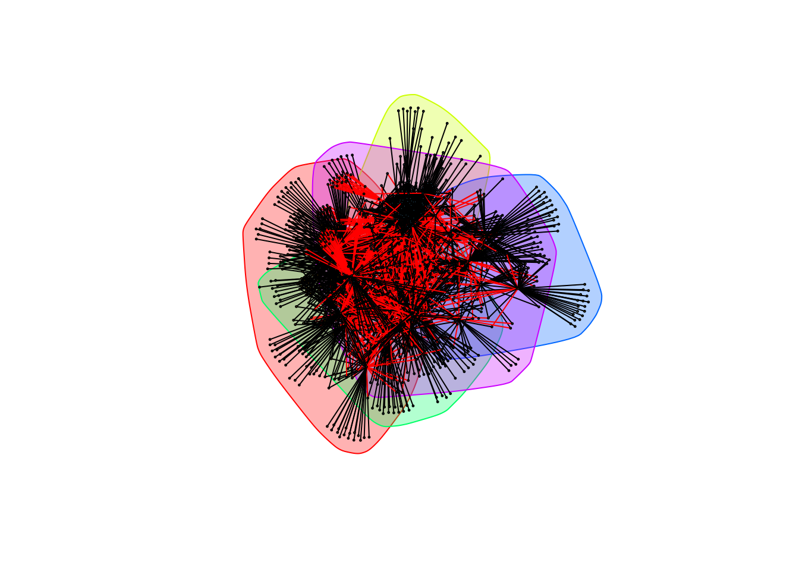

Bacteria only
Data Preparation
library(data.table, warn.conflicts = FALSE)
library(igraph, warn.conflicts = FALSE)taxa is the look-up table for the OTUs. cooccurrence_data contains pairwise Spearman correlation ranks for pairs of OTUs.
taxa <- data.table(read.delim("./data/bacteria/bacteria_classified_otus",
sep = "", header = TRUE))
head(taxa)## OTU domain phylum class order
## 1: OTU_4337 Bacteria Proteobacteria Gammaproteobacteria Pseudomonadales
## 2: OTU_893 Bacteria Chloroflexi Thermomicrobia JG30-KF-CM45
## 3: OTU_4335 Bacteria Proteobacteria Alphaproteobacteria Rhizobiales
## 4: OTU_2826 Bacteria TM6 SJA-4
## 5: OTU_4333 Archaea Euryarchaeota Methanobacteria Methanobacteriales
## 6: OTU_4332 Archaea Euryarchaeota DSEG HydGC-84-221A
## family genus
## 1: Moraxellaceae Acinetobacter
## 2:
## 3: Phyllobacteriaceae Mesorhizobium
## 4:
## 5:
## 6:cooccurrence_data <- data.table(read.table("./data/bacteria/bacteria_cooccurrence",
col.names = c("treatment", "OTU_1", "OTU_2", "rho", "p")))
head(cooccurrence_data)## treatment OTU_1 OTU_2 rho p
## 1: Bagged OTU_5142 OTU_3559 -0.0969026 0.461392000
## 2: Bagged OTU_5142 OTU_5453 -0.0347789 0.791927000
## 3: Bagged OTU_5142 OTU_5257 0.4256740 0.000697036
## 4: Bagged OTU_5142 OTU_3548 -0.0347789 0.791927000
## 5: Bagged OTU_5142 OTU_5705 -0.0495999 0.706657000
## 6: Bagged OTU_5142 OTU_5098 0.0920586 0.484193000We process coocurrence_data by removing OTU interactions non-significant \(\rho\) values by filtering out those with a \(p\)-value less than \(0.05\), then filtering out cyanobacteria and choloroplast data, as well as all observations from bird samples:
cooccurrence_data <- cooccurrence_data[p <= 0.05, -5] # Remove p-values from table
cooccurrence_data <- cooccurrence_data[order(treatment, OTU_1, OTU_2)]
remove <- taxa[which(taxa[[4]] %in% c("Cyanobacteria","Chloroplast")),]$OTU
taxa <- taxa[-c(remove),]
complete_data <- cooccurrence_data[-c(which(apply(cooccurrence_data, 1, function(x) any(remove %in% x)))),]
bird_data <- cooccurrence_data[treatment == "Bird", ]
complete_data <- cooccurrence_data[treatment != "Bird", ]We then remove all edges that are \(\textit{not}\) connected to the indicated OTUs of interest:
otus_of_interest <- c("Acinetobacter", "Gluconobacter", "Neokomagataea", "erwinia", "Pantoea", "resenbergiella", "Asaia", "Lactobacillus", "Pseudomonas")
otus_of_interest <- taxa[which(apply(taxa, 1, function(x) any(otus_of_interest %in% x))),]$OTU
trimmed_data <- complete_data[which(apply(complete_data, 1, function(x) any(otus_of_interest %in% x))), ]
head(trimmed_data)## treatment OTU_1 OTU_2 rho
## 1: Bagged OTU_1 OTU_9 0.333218
## 2: Bagged OTU_1028 OTU_440 0.329804
## 3: Bagged OTU_105 OTU_153 0.273976
## 4: Bagged OTU_1059 OTU_18 0.330424
## 5: Bagged OTU_1084 OTU_1741 0.701089
## 6: Bagged OTU_1101 OTU_440 0.469411We seperate the coocurrence data into a positive and negative group.
trimmed_positive_weights <- trimmed_data[trimmed_data[['rho']] > 0]
head(trimmed_positive_weights)## treatment OTU_1 OTU_2 rho
## 1: Bagged OTU_1 OTU_9 0.333218
## 2: Bagged OTU_1028 OTU_440 0.329804
## 3: Bagged OTU_105 OTU_153 0.273976
## 4: Bagged OTU_1059 OTU_18 0.330424
## 5: Bagged OTU_1084 OTU_1741 0.701089
## 6: Bagged OTU_1101 OTU_440 0.469411trimmed_negative_weights <- trimmed_data[trimmed_data[['rho']] < 0]
head(trimmed_negative_weights)## treatment OTU_1 OTU_2 rho
## 1: Bagged OTU_131 OTU_21 -0.287050
## 2: Bagged OTU_162 OTU_4161 -0.277084
## 3: Bagged OTU_20 OTU_100 -0.275395
## 4: Bagged OTU_20 OTU_4222 -0.287319
## 5: Bagged OTU_21 OTU_51 -0.255443
## 6: Bagged OTU_3174 OTU_4161 -0.267942We’ll look at the positive and negative networks for each of the three treatments, as well as when all the treatments are combined together.
Patristic Distance Matrix
library(ape, warn.conflicts = FALSE)bacteria_phylo_tree is a guide tree returned by MAFFT for the bacterial sequences (info). We read it into a phylo object.
rough_tree <- read.tree("./data/bacteria/bacteria_phylo_tree")We use cophenetic.phylo to generate the patristic distances between each OTU. The patristic distance will be used as a measure of similarity as in the paper “Phylogenetic relatedness predicts priority effects in nectar yeast communities”.
pd_matrix <- cophenetic.phylo(rough_tree)
rownames(pd_matrix) <- sub("^[^_]*_", "", rownames(pd_matrix))
colnames(pd_matrix) <- sub("^[^_]*_", "", colnames(pd_matrix))
pd_matrix[1:5, 1:5]## OTU_1 OTU_4369 OTU_4617 OTU_2588 OTU_4220
## OTU_1 0.00000 0.05576 0.07054 0.07400 0.07734
## OTU_4369 0.05576 0.00000 0.07054 0.07400 0.07734
## OTU_4617 0.07054 0.07054 0.00000 0.07400 0.07734
## OTU_2588 0.07400 0.07400 0.07400 0.00000 0.07734
## OTU_4220 0.07734 0.07734 0.07734 0.07734 0.00000Trimmed Data
All the following analysis is performed on the trimmed data set. Specifically, this analysis only examines interactions between Acinetobacter, Gluconobacter, Neokomagataea, erwinia, Pantoea, resenbergiella, Asaia, Lactobacillus, Pseudomonas
Exposed Communities
Positive weights
We create a directed graph weighted by Spearman correlation for the Exposed treatment for those OTUs that are positively correlated to each other:
exposed_data_positive <- trimmed_positive_weights[treatment == "Exposed"]
exposed_data_positive <- exposed_data_positive[, -1]
gr_exposed_positive <- graph.data.frame(exposed_data_positive, directed = FALSE)
plot(gr_exposed_positive, vertex.size = 3,
vertex.label = NA)
To determine communities, we use cluster_fast_greedy, which does greedy (local) optimization of the graph’s modularity score. For each of the communities, we list the highest degree OTU within that community, as well as the other OTUs within it.
exposed_communities_greedy_positive <- cluster_fast_greedy(gr_exposed_positive, weights = E(gr_exposed_positive)$rho)
hot_otus <- vector()
for (community in communities(exposed_communities_greedy_positive))
{
sub_graph <- induced.subgraph(graph = gr_exposed_positive,
v = community, impl = "auto")
highest_degree_otu <- V(sub_graph)[which.max(degree(sub_graph))]$name
hot_otus <- c(hot_otus, highest_degree_otu)
print(paste("Highest degree OTU was", highest_degree_otu, "(degree =",
degree(sub_graph, highest_degree_otu), "):"))
print(taxa[OTU == highest_degree_otu])
print(paste("Other OTUs in the same community as", highest_degree_otu, ":"))
print(taxa[OTU %in% community])
}## [1] "Highest degree OTU was OTU_356 (degree = 136 ):"
## OTU domain phylum class order
## 1: OTU_356 Bacteria Proteobacteria Gammaproteobacteria Pseudomonadales
## family genus
## 1: Moraxellaceae Acinetobacter
## [1] "Other OTUs in the same community as OTU_356 :"
## OTU domain phylum class
## 1: OTU_3425 Bacteria Proteobacteria Betaproteobacteria
## 2: OTU_433 Bacteria Actinobacteria Actinobacteria
## 3: OTU_435 Bacteria Actinobacteria Actinobacteria
## 4: OTU_1035 Bacteria Bacteroidetes Sphingobacteriia
## 5: OTU_4203 Bacteria Proteobacteria Betaproteobacteria
## ---
## 259: OTU_3367 Bacteria Proteobacteria Gammaproteobacteria
## 260: OTU_1022 Bacteria Proteobacteria Alphaproteobacteria
## 261: OTU_2220 Bacteria Actinobacteria Actinobacteria
## 262: OTU_1934 Bacteria Proteobacteria Alphaproteobacteria
## 263: OTU_78 Bacteria Proteobacteria Gammaproteobacteria
## order family genus
## 1: Burkholderiales Comamonadaceae Ramlibacter
## 2: Actinomycetales Corynebacteriaceae Corynebacterium
## 3: Actinomycetales Micrococcaceae Kocuria
## 4: Sphingobacteriales Sphingobacteriaceae Sphingobacterium
## 5: Burkholderiales Comamonadaceae Delftia
## ---
## 259: Enterobacteriales Enterobacteriaceae Erwinia
## 260: Rhizobiales Hyphomicrobiaceae Rhodoplanes
## 261: Actinomycetales ACK-M1
## 262: Rickettsiales mitochondria
## 263: Xanthomonadales Xanthomonadaceae
## [1] "Highest degree OTU was OTU_4570 (degree = 66 ):"
## OTU domain phylum class order
## 1: OTU_4570 Bacteria Proteobacteria Gammaproteobacteria Pseudomonadales
## family genus
## 1: Moraxellaceae Acinetobacter
## [1] "Other OTUs in the same community as OTU_4570 :"
## OTU domain phylum class order
## 1: OTU_4337 Bacteria Proteobacteria Gammaproteobacteria Pseudomonadales
## 2: OTU_3426 Bacteria Proteobacteria Betaproteobacteria Burkholderiales
## 3: OTU_895 Bacteria Acidobacteria Acidobacteria-6 iii1-15
## 4: OTU_3884 Bacteria Proteobacteria Betaproteobacteria Burkholderiales
## 5: OTU_3883 Bacteria Proteobacteria Betaproteobacteria Burkholderiales
## ---
## 141: OTU_3976 Bacteria Proteobacteria Betaproteobacteria Burkholderiales
## 142: OTU_3181 Bacteria Actinobacteria Actinobacteria Actinomycetales
## 143: OTU_2229 Bacteria Proteobacteria Alphaproteobacteria Rhodobacterales
## 144: OTU_2595 Bacteria Proteobacteria Gammaproteobacteria Pseudomonadales
## 145: OTU_74 Bacteria Actinobacteria Actinobacteria Actinomycetales
## family genus
## 1: Moraxellaceae Acinetobacter
## 2: Comamonadaceae
## 3:
## 4: Comamonadaceae
## 5: Comamonadaceae Comamonas
## ---
## 141: Comamonadaceae Comamonas
## 142: Corynebacteriaceae Corynebacterium
## 143: Rhodobacteraceae Rubellimicrobium
## 144: Moraxellaceae Acinetobacter
## 145: Propionibacteriaceae Propionibacterium
## [1] "Highest degree OTU was OTU_4059 (degree = 48 ):"
## OTU domain phylum class order
## 1: OTU_4059 Bacteria Proteobacteria Gammaproteobacteria Pseudomonadales
## family genus
## 1: Pseudomonadaceae Pseudomonas
## [1] "Other OTUs in the same community as OTU_4059 :"
## OTU domain phylum class
## 1: OTU_5708 Bacteria Proteobacteria Betaproteobacteria
## 2: OTU_428 Bacteria Verrucomicrobia [Spartobacteria]
## 3: OTU_22 Bacteria Proteobacteria Betaproteobacteria
## 4: OTU_3899 Bacteria Proteobacteria Betaproteobacteria
## 5: OTU_5135 Bacteria Proteobacteria Betaproteobacteria
## ---
## 118: OTU_355 Bacteria Proteobacteria Gammaproteobacteria
## 119: OTU_1907 Bacteria Proteobacteria Betaproteobacteria
## 120: OTU_3414 Bacteria Proteobacteria Gammaproteobacteria
## 121: OTU_3967 Bacteria Actinobacteria Actinobacteria
## 122: OTU_4516 Bacteria Proteobacteria Betaproteobacteria
## order family genus
## 1: Burkholderiales Comamonadaceae
## 2: [Chthoniobacterales] [Chthoniobacteraceae]
## 3: Burkholderiales Comamonadaceae Variovorax
## 4: Burkholderiales Oxalobacteraceae
## 5: Burkholderiales Comamonadaceae
## ---
## 118: Oceanospirillales Halomonadaceae Halomonas
## 119: Neisseriales Neisseriaceae Deefgea
## 120: Enterobacteriales Enterobacteriaceae
## 121: Actinomycetales Sanguibacteraceae Sanguibacter
## 122: Burkholderiales Comamonadaceae Limnohabitans
## [1] "Highest degree OTU was OTU_225 (degree = 52 ):"
## OTU domain phylum class order
## 1: OTU_225 Bacteria Proteobacteria Gammaproteobacteria Pseudomonadales
## family genus
## 1: Moraxellaceae Acinetobacter
## [1] "Other OTUs in the same community as OTU_225 :"
## OTU domain phylum class
## 1: OTU_5410 Bacteria Proteobacteria Alphaproteobacteria
## 2: OTU_3436 Bacteria Proteobacteria Betaproteobacteria
## 3: OTU_50 Bacteria Firmicutes Bacilli
## 4: OTU_457 Bacteria Proteobacteria Betaproteobacteria
## 5: OTU_5066 Bacteria Proteobacteria Betaproteobacteria
## 6: OTU_1018 Bacteria Proteobacteria Alphaproteobacteria
## 7: OTU_3930 Bacteria Proteobacteria Alphaproteobacteria
## 8: OTU_5686 Bacteria Proteobacteria Gammaproteobacteria
## 9: OTU_622 Bacteria Proteobacteria Deltaproteobacteria
## 10: OTU_446 Bacteria Firmicutes Clostridia
## 11: OTU_32 Bacteria Proteobacteria Gammaproteobacteria
## 12: OTU_5453 Bacteria Proteobacteria Betaproteobacteria
## 13: OTU_5302 Bacteria Proteobacteria Alphaproteobacteria
## 14: OTU_4837 Bacteria Proteobacteria Betaproteobacteria
## 15: OTU_10 Bacteria Fusobacteria Fusobacteriia
## 16: OTU_666 Bacteria Proteobacteria Deltaproteobacteria
## 17: OTU_1437 Bacteria Proteobacteria Alphaproteobacteria
## 18: OTU_3496 Bacteria Proteobacteria Gammaproteobacteria
## 19: OTU_1242 Bacteria Firmicutes Bacilli
## 20: OTU_1399 Bacteria Planctomycetes Planctomycetia
## 21: OTU_3532 Bacteria Proteobacteria Gammaproteobacteria
## 22: OTU_4627 Bacteria Proteobacteria Betaproteobacteria
## 23: OTU_4153 Bacteria Proteobacteria Gammaproteobacteria
## 24: OTU_4280 Bacteria Proteobacteria Betaproteobacteria
## 25: OTU_5408 Bacteria Proteobacteria Betaproteobacteria
## 26: OTU_2476 Bacteria Proteobacteria Alphaproteobacteria
## 27: OTU_4435 Bacteria OP3 koll11
## 28: OTU_1477 Bacteria Proteobacteria Betaproteobacteria
## 29: OTU_1277 Bacteria Proteobacteria Betaproteobacteria
## 30: OTU_1270 Bacteria Proteobacteria Gammaproteobacteria
## 31: OTU_1278 Bacteria Firmicutes Clostridia
## 32: OTU_683 Bacteria Actinobacteria Actinobacteria
## 33: OTU_596 Bacteria Bacteroidetes Sphingobacteriia
## 34: OTU_114 Bacteria Proteobacteria Deltaproteobacteria
## 35: OTU_5166 Bacteria Proteobacteria Gammaproteobacteria
## 36: OTU_180 Bacteria Bacteroidetes Bacteroidia
## 37: OTU_166 Bacteria Bacteroidetes [Saprospirae]
## 38: OTU_1832 Bacteria Proteobacteria Deltaproteobacteria
## 39: OTU_172 Bacteria Proteobacteria Betaproteobacteria
## 40: OTU_316 Bacteria Proteobacteria Alphaproteobacteria
## 41: OTU_5616 Bacteria Proteobacteria Betaproteobacteria
## 42: OTU_1335 Bacteria Actinobacteria Acidimicrobiia
## 43: OTU_5796 Bacteria Proteobacteria Gammaproteobacteria
## 44: OTU_5794 Bacteria Actinobacteria Actinobacteria
## 45: OTU_1322 Bacteria Proteobacteria Gammaproteobacteria
## 46: OTU_3096 Bacteria Proteobacteria Betaproteobacteria
## 47: OTU_550 Bacteria Proteobacteria Alphaproteobacteria
## 48: OTU_5128 Bacteria Proteobacteria Betaproteobacteria
## 49: OTU_5878 Bacteria Proteobacteria Gammaproteobacteria
## 50: OTU_1552 Bacteria Chloroflexi Ellin6529
## 51: OTU_4222 Bacteria Proteobacteria Alphaproteobacteria
## 52: OTU_4227 Bacteria Proteobacteria Alphaproteobacteria
## 53: OTU_2800 Bacteria Proteobacteria Alphaproteobacteria
## 54: OTU_1997 Bacteria Firmicutes Clostridia
## 55: OTU_501 Bacteria Firmicutes Bacilli
## 56: OTU_3269 Bacteria Proteobacteria Alphaproteobacteria
## 57: OTU_2325 Bacteria Firmicutes Bacilli
## 58: OTU_512 Bacteria Bacteroidetes [Saprospirae]
## 59: OTU_4720 Bacteria Proteobacteria Betaproteobacteria
## 60: OTU_231 Bacteria Proteobacteria Alphaproteobacteria
## 61: OTU_1739 Bacteria OD1 ZB2
## 62: OTU_716 Bacteria OD1 ZB2
## 63: OTU_710 Bacteria Firmicutes Bacilli
## 64: OTU_392 Bacteria Proteobacteria Betaproteobacteria
## 65: OTU_4706 Bacteria Proteobacteria Betaproteobacteria
## 66: OTU_3824 Bacteria Proteobacteria Alphaproteobacteria
## 67: OTU_5710 Bacteria Proteobacteria Betaproteobacteria
## 68: OTU_2275 Bacteria Proteobacteria Deltaproteobacteria
## 69: OTU_2018 Bacteria Actinobacteria Actinobacteria
## 70: OTU_731 Bacteria Firmicutes Clostridia
## 71: OTU_221 Bacteria Proteobacteria Alphaproteobacteria
## 72: OTU_225 Bacteria Proteobacteria Gammaproteobacteria
## 73: OTU_4541 Bacteria Proteobacteria Alphaproteobacteria
## 74: OTU_1707 Bacteria Proteobacteria Alphaproteobacteria
## 75: OTU_1700 Bacteria Firmicutes Bacilli
## 76: OTU_5578 Bacteria Bacteroidetes Cytophagia
## 77: OTU_2748 Bacteria Bacteroidetes Bacteroidia
## 78: OTU_3619 Bacteria Proteobacteria Alphaproteobacteria
## 79: OTU_972 Bacteria OD1 ZB2
## 80: OTU_131 Bacteria Proteobacteria Gammaproteobacteria
## 81: OTU_2242 Bacteria Nitrospirae Nitrospira
## 82: OTU_94 Bacteria Proteobacteria TA18
## 83: OTU_4071 Bacteria Actinobacteria Actinobacteria
## 84: OTU_5443 Bacteria Proteobacteria Betaproteobacteria
## 85: OTU_5440 Bacteria Proteobacteria Betaproteobacteria
## 86: OTU_778 Bacteria Proteobacteria Deltaproteobacteria
## 87: OTU_774 Bacteria Bacteroidetes [Saprospirae]
## 88: OTU_958 Bacteria Bacteroidetes [Saprospirae]
## 89: OTU_1212 Bacteria Cyanobacteria Synechococcophycideae
## 90: OTU_2821 Bacteria OD1 ZB2
## 91: OTU_1028 Bacteria Proteobacteria Alphaproteobacteria
## 92: OTU_4514 Bacteria Proteobacteria Betaproteobacteria
## OTU domain phylum class
## order family genus
## 1: Rhizobiales
## 2: Burkholderiales Comamonadaceae
## 3: Bacillales Bacillaceae
## 4: Burkholderiales Comamonadaceae Tepidimonas
## 5: Burkholderiales Comamonadaceae
## 6: Rhodobacterales Hyphomonadaceae
## 7: Rhizobiales Bradyrhizobiaceae
## 8: Enterobacteriales Enterobacteriaceae
## 9: Bdellovibrionales Bdellovibrionaceae Bdellovibrio
## 10: Clostridiales [Mogibacteriaceae]
## 11: Enterobacteriales Enterobacteriaceae
## 12: Burkholderiales Comamonadaceae Comamonas
## 13: Rickettsiales mitochondria
## 14: Burkholderiales Comamonadaceae
## 15: Fusobacteriales Leptotrichiaceae Leptotrichia
## 16: Bdellovibrionales Bdellovibrionaceae Bdellovibrio
## 17: Rhodospirillales Acetobacteraceae
## 18: Enterobacteriales Enterobacteriaceae Erwinia
## 19: Lactobacillales Aerococcaceae
## 20: Gemmatales Isosphaeraceae
## 21: Enterobacteriales Enterobacteriaceae Erwinia
## 22: Burkholderiales Comamonadaceae Hydrogenophaga
## 23: Enterobacteriales Enterobacteriaceae Erwinia
## 24: Burkholderiales Comamonadaceae
## 25: Burkholderiales
## 26: Rickettsiales mitochondria
## 27:
## 28: Ellin6067
## 29: Burkholderiales Alcaligenaceae Denitrobacter
## 30: Thiotrichales Thiotrichaceae
## 31: Clostridiales Ruminococcaceae
## 32: Actinomycetales Actinomycetaceae Actinomyces
## 33: Sphingobacteriales
## 34: Myxococcales
## 35: Enterobacteriales Enterobacteriaceae Erwinia
## 36: Bacteroidales [Paraprevotellaceae] [Prevotella]
## 37: [Saprospirales] Saprospiraceae
## 38: Bdellovibrionales Bdellovibrionaceae Bdellovibrio
## 39: Burkholderiales Comamonadaceae Rhodoferax
## 40: Rhizobiales Bradyrhizobiaceae Bosea
## 41: Burkholderiales Comamonadaceae Comamonas
## 42: Acidimicrobiales
## 43: Enterobacteriales Enterobacteriaceae
## 44: Actinomycetales Gordoniaceae Gordonia
## 45: Pseudomonadales Pseudomonadaceae Pseudomonas
## 46: Burkholderiales Alcaligenaceae Sutterella
## 47: Rhizobiales Methylobacteriaceae Methylobacterium
## 48: Methylophilales Methylophilaceae
## 49: Pseudomonadales Moraxellaceae Acinetobacter
## 50:
## 51: Rickettsiales mitochondria
## 52: Rickettsiales mitochondria
## 53: Rhodobacterales Rhodobacteraceae Rhodobacter
## 54: Clostridiales Ruminococcaceae Faecalibacterium
## 55: Bacillales Staphylococcaceae Salinicoccus
## 56: Sphingomonadales Sphingomonadaceae Sphingomonas
## 57: Bacillales Bacillaceae
## 58: [Saprospirales] Chitinophagaceae Segetibacter
## 59: Burkholderiales Comamonadaceae
## 60: Sphingomonadales Sphingomonadaceae Sphingomonas
## 61:
## 62:
## 63: Bacillales Bacillaceae Anoxybacillus
## 64: Procabacteriales Procabacteriaceae
## 65: Burkholderiales Comamonadaceae
## 66: Sphingomonadales Sphingomonadaceae Sphingomonas
## 67: Burkholderiales Comamonadaceae Rhodoferax
## 68: Bdellovibrionales Bdellovibrionaceae Bdellovibrio
## 69: Actinomycetales Microbacteriaceae
## 70: Clostridiales Lachnospiraceae
## 71: Rhodobacterales Rhodobacteraceae Rhodobacter
## 72: Pseudomonadales Moraxellaceae Acinetobacter
## 73: Caulobacterales Caulobacteraceae
## 74: Sphingomonadales Sphingomonadaceae
## 75: Bacillales Staphylococcaceae Salinicoccus
## 76: Cytophagales Cytophagaceae
## 77: Bacteroidales Bacteroidaceae Bacteroides
## 78: Rickettsiales mitochondria
## 79:
## 80: Pseudomonadales Moraxellaceae
## 81: Nitrospirales 0319-6A21
## 82: PHOS-HD29
## 83: Actinomycetales
## 84: Burkholderiales Oxalobacteraceae
## 85: Burkholderiales Comamonadaceae Comamonas
## 86: Myxococcales
## 87: [Saprospirales] Chitinophagaceae
## 88: [Saprospirales] Chitinophagaceae
## 89: Pseudanabaenales Pseudanabaenaceae Leptolyngbya
## 90:
## 91: Sphingomonadales Sphingomonadaceae Sphingopyxis
## 92: Burkholderiales Oxalobacteraceae Janthinobacterium
## order family genus
## [1] "Highest degree OTU was OTU_18 (degree = 70 ):"
## OTU domain phylum class order family
## 1: OTU_18 Bacteria Firmicutes Bacilli Lactobacillales Lactobacillaceae
## genus
## 1: Lactobacillus
## [1] "Other OTUs in the same community as OTU_18 :"
## OTU domain phylum class
## 1: OTU_1484 Bacteria Bacteroidetes Sphingobacteriia
## 2: OTU_1159 Bacteria Firmicutes Bacilli
## 3: OTU_5709 Bacteria Proteobacteria Betaproteobacteria
## 4: OTU_3780 Bacteria Proteobacteria Betaproteobacteria
## 5: OTU_3430 Bacteria Proteobacteria Gammaproteobacteria
## ---
## 175: OTU_132 Bacteria Proteobacteria Deltaproteobacteria
## 176: OTU_543 Bacteria Actinobacteria Actinobacteria
## 177: OTU_5257 Bacteria Proteobacteria Betaproteobacteria
## 178: OTU_3174 Bacteria Proteobacteria Gammaproteobacteria
## 179: OTU_75 Bacteria Proteobacteria Gammaproteobacteria
## order family genus
## 1: Sphingobacteriales
## 2: Lactobacillales Aerococcaceae Facklamia
## 3: Rhodocyclales Rhodocyclaceae Zoogloea
## 4: Rhodocyclales Rhodocyclaceae Dechloromonas
## 5: Enterobacteriales Enterobacteriaceae Erwinia
## ---
## 175: Myxococcales 0319-6G20
## 176: Bifidobacteriales Bifidobacteriaceae Bifidobacterium
## 177: Burkholderiales Comamonadaceae Pelomonas
## 178: Pseudomonadales Pseudomonadaceae Pseudomonas
## 179: Pseudomonadales Moraxellaceae Moraxellaplot(exposed_communities_greedy_positive, gr_exposed_positive,
layout = layout.fruchterman.reingold(gr_exposed_positive),
rescaled = TRUE,
vertex.size = ifelse(V(gr_exposed_positive) %in% hot_otus, 5, 1),
vertex.label = ifelse(V(gr_exposed_positive) %in% hot_otus, V(gr_exposed_positive)$id, NA),
vertex.label.cex = 2
)
The modularity of the community structure is:
(tep.mod <- modularity(gr_exposed_positive, membership(exposed_communities_greedy_positive)))## [1] 0.4832054Negative Weights
We repeat the above process for the negatively correlated OTUs:
exposed_data_negative <- trimmed_negative_weights[treatment == "Exposed"]
exposed_data_negative <- exposed_data_negative[, -1]
exposed_data_negative[[3]] <- abs(exposed_data_negative[[3]])
gr_exposed_negative <- graph.data.frame(exposed_data_negative, directed = FALSE)
plot(gr_exposed_negative, vertex.size = 3,
vertex.label = NA)
exposed_communities_greedy_negative <- cluster_fast_greedy(gr_exposed_negative, weights = E(gr_exposed_negative)$rho)
hot_otus <- vector()
for (community in communities(exposed_communities_greedy_negative))
{
sub_graph <- induced.subgraph(graph = gr_exposed_negative,
v = community, impl = "auto")
highest_degree_otu <- V(sub_graph)[which.max(degree(sub_graph))]$name
hot_otus <- c(hot_otus, highest_degree_otu)
print(paste("Highest degree OTU was", highest_degree_otu, "(degree =",
degree(sub_graph, highest_degree_otu), "):"))
print(taxa[OTU == highest_degree_otu])
print(paste("Other OTUs in the same community as", highest_degree_otu, ":"))
print(taxa[OTU %in% community])
}## [1] "Highest degree OTU was OTU_5 (degree = 7 ):"
## OTU domain phylum class order
## 1: OTU_5 Bacteria Proteobacteria Alphaproteobacteria Rickettsiales
## family genus
## 1: mitochondria
## [1] "Other OTUs in the same community as OTU_5 :"
## OTU domain phylum class order
## 1: OTU_4337 Bacteria Proteobacteria Gammaproteobacteria Pseudomonadales
## 2: OTU_47 Bacteria Actinobacteria Actinobacteria Actinomycetales
## 3: OTU_5778 Bacteria Proteobacteria Gammaproteobacteria Pseudomonadales
## 4: OTU_5776 Bacteria Proteobacteria Gammaproteobacteria Pseudomonadales
## 5: OTU_5 Bacteria Proteobacteria Alphaproteobacteria Rickettsiales
## 6: OTU_4036 Bacteria Proteobacteria Gammaproteobacteria Pseudomonadales
## 7: OTU_5324 Bacteria Proteobacteria Gammaproteobacteria Pseudomonadales
## 8: OTU_92 Bacteria Proteobacteria Alphaproteobacteria Sphingomonadales
## 9: OTU_72 Bacteria Proteobacteria Gammaproteobacteria Pseudomonadales
## 10: OTU_9 Bacteria Proteobacteria Gammaproteobacteria Pseudomonadales
## 11: OTU_7 Bacteria Bacteroidetes Flavobacteriia Flavobacteriales
## 12: OTU_4345 Bacteria Proteobacteria Gammaproteobacteria Pseudomonadales
## 13: OTU_4570 Bacteria Proteobacteria Gammaproteobacteria Pseudomonadales
## family genus
## 1: Moraxellaceae Acinetobacter
## 2: Corynebacteriaceae Corynebacterium
## 3: Moraxellaceae Acinetobacter
## 4: Moraxellaceae Acinetobacter
## 5: mitochondria
## 6: Moraxellaceae Acinetobacter
## 7: Moraxellaceae Acinetobacter
## 8: Sphingomonadaceae Sphingomonas
## 9: Moraxellaceae Acinetobacter
## 10: Pseudomonadaceae Pseudomonas
## 11: [Weeksellaceae] Cloacibacterium
## 12: Moraxellaceae Acinetobacter
## 13: Moraxellaceae Acinetobacter
## [1] "Highest degree OTU was OTU_3986 (degree = 4 ):"
## OTU domain phylum class order
## 1: OTU_3986 Bacteria Proteobacteria Gammaproteobacteria Pseudomonadales
## family genus
## 1: Moraxellaceae Acinetobacter
## [1] "Other OTUs in the same community as OTU_3986 :"
## OTU domain phylum class order
## 1: OTU_20 Bacteria Proteobacteria Gammaproteobacteria Pseudomonadales
## 2: OTU_28 Bacteria Bacteroidetes Flavobacteriia Flavobacteriales
## 3: OTU_3986 Bacteria Proteobacteria Gammaproteobacteria Pseudomonadales
## 4: OTU_338 Bacteria Proteobacteria Gammaproteobacteria Pseudomonadales
## 5: OTU_43 Bacteria Proteobacteria Betaproteobacteria Burkholderiales
## 6: OTU_5701 Bacteria Proteobacteria Betaproteobacteria Burkholderiales
## 7: OTU_5257 Bacteria Proteobacteria Betaproteobacteria Burkholderiales
## family genus
## 1: Moraxellaceae Acinetobacter
## 2: [Weeksellaceae] Chryseobacterium
## 3: Moraxellaceae Acinetobacter
## 4: Pseudomonadaceae Pseudomonas
## 5: Oxalobacteraceae Cupriavidus
## 6: Comamonadaceae
## 7: Comamonadaceae Pelomonas
## [1] "Highest degree OTU was OTU_21 (degree = 10 ):"
## OTU domain phylum class order
## 1: OTU_21 Bacteria Proteobacteria Gammaproteobacteria Pseudomonadales
## family genus
## 1: Pseudomonadaceae Pseudomonas
## [1] "Other OTUs in the same community as OTU_21 :"
## OTU domain phylum class order
## 1: OTU_21 Bacteria Proteobacteria Gammaproteobacteria Pseudomonadales
## 2: OTU_22 Bacteria Proteobacteria Betaproteobacteria Burkholderiales
## 3: OTU_18 Bacteria Firmicutes Bacilli Lactobacillales
## 4: OTU_669 Bacteria Bacteroidetes Cytophagia Cytophagales
## 5: OTU_256 Bacteria Proteobacteria Betaproteobacteria Burkholderiales
## 6: OTU_172 Bacteria Proteobacteria Betaproteobacteria Burkholderiales
## 7: OTU_4680 Bacteria Bacteroidetes Flavobacteriia Flavobacteriales
## 8: OTU_5655 Bacteria Proteobacteria Betaproteobacteria Burkholderiales
## 9: OTU_88 Bacteria Proteobacteria Betaproteobacteria Burkholderiales
## 10: OTU_131 Bacteria Proteobacteria Gammaproteobacteria Pseudomonadales
## family genus
## 1: Pseudomonadaceae Pseudomonas
## 2: Comamonadaceae Variovorax
## 3: Lactobacillaceae Lactobacillus
## 4: Cytophagaceae Flectobacillus
## 5: Oxalobacteraceae Janthinobacterium
## 6: Comamonadaceae Rhodoferax
## 7: Flavobacteriaceae Flavobacterium
## 8: Comamonadaceae
## 9: Oxalobacteraceae
## 10: Moraxellaceae
## [1] "Highest degree OTU was OTU_8 (degree = 13 ):"
## OTU domain phylum class order
## 1: OTU_8 Bacteria Proteobacteria Alphaproteobacteria Rhodospirillales
## family genus
## 1: Acetobacteraceae Gluconobacter
## [1] "Other OTUs in the same community as OTU_8 :"
## OTU domain phylum class order
## 1: OTU_60 Bacteria Bacteroidetes Flavobacteriia Flavobacteriales
## 2: OTU_199 Bacteria Actinobacteria Actinobacteria Actinomycetales
## 3: OTU_461 Bacteria Firmicutes Clostridia Clostridiales
## 4: OTU_5302 Bacteria Proteobacteria Alphaproteobacteria Rickettsiales
## 5: OTU_11 Bacteria Actinobacteria Actinobacteria Actinomycetales
## 6: OTU_4627 Bacteria Proteobacteria Betaproteobacteria Burkholderiales
## 7: OTU_4161 Bacteria Proteobacteria Alphaproteobacteria Rickettsiales
## 8: OTU_3572 Bacteria Proteobacteria Alphaproteobacteria Rhizobiales
## 9: OTU_2172 Bacteria Proteobacteria Gammaproteobacteria Pasteurellales
## 10: OTU_5553 Bacteria Proteobacteria Alphaproteobacteria Rickettsiales
## 11: OTU_397 Bacteria Proteobacteria Alphaproteobacteria Rhodobacterales
## 12: OTU_8 Bacteria Proteobacteria Alphaproteobacteria Rhodospirillales
## 13: OTU_1759 Bacteria Proteobacteria Alphaproteobacteria Rickettsiales
## family genus
## 1: Flavobacteriaceae Flavobacterium
## 2: Corynebacteriaceae Corynebacterium
## 3: [Tissierellaceae] Finegoldia
## 4: mitochondria
## 5: Corynebacteriaceae Corynebacterium
## 6: Comamonadaceae Hydrogenophaga
## 7: mitochondria
## 8: Bradyrhizobiaceae Bosea
## 9: Pasteurellaceae Actinobacillus
## 10: mitochondria
## 11: Rhodobacteraceae Paracoccus
## 12: Acetobacteraceae Gluconobacter
## 13: mitochondria
## [1] "Highest degree OTU was OTU_6 (degree = 15 ):"
## OTU domain phylum class order
## 1: OTU_6 Bacteria Proteobacteria Gammaproteobacteria Pseudomonadales
## family genus
## 1: Moraxellaceae Acinetobacter
## [1] "Other OTUs in the same community as OTU_6 :"
## OTU domain phylum class
## 1: OTU_1035 Bacteria Bacteroidetes Sphingobacteriia
## 2: OTU_3950 Bacteria Proteobacteria Betaproteobacteria
## 3: OTU_5289 Bacteria Proteobacteria Alphaproteobacteria
## 4: OTU_789 Bacteria Firmicutes Clostridia
## 5: OTU_5629 Bacteria Proteobacteria Gammaproteobacteria
## 6: OTU_3225 Bacteria Proteobacteria Betaproteobacteria
## 7: OTU_336 Bacteria Proteobacteria Alphaproteobacteria
## 8: OTU_4222 Bacteria Proteobacteria Alphaproteobacteria
## 9: OTU_4227 Bacteria Proteobacteria Alphaproteobacteria
## 10: OTU_4598 Bacteria Firmicutes Bacilli
## 11: OTU_4938 Bacteria Proteobacteria Alphaproteobacteria
## 12: OTU_5854 Bacteria Proteobacteria Betaproteobacteria
## 13: OTU_5934 Bacteria Proteobacteria Betaproteobacteria
## 14: OTU_6 Bacteria Proteobacteria Gammaproteobacteria
## 15: OTU_4508 Bacteria Proteobacteria Alphaproteobacteria
## order family genus
## 1: Sphingobacteriales Sphingobacteriaceae Sphingobacterium
## 2: Burkholderiales Comamonadaceae Methylibium
## 3: Rickettsiales mitochondria
## 4: Clostridiales [Tissierellaceae] Anaerococcus
## 5: Enterobacteriales Enterobacteriaceae
## 6: Burkholderiales Comamonadaceae Pelomonas
## 7: Rhizobiales Methylobacteriaceae
## 8: Rickettsiales mitochondria
## 9: Rickettsiales mitochondria
## 10: Bacillales Bacillaceae Anoxybacillus
## 11: Rickettsiales mitochondria
## 12: Burkholderiales Burkholderiaceae Burkholderia
## 13: Burkholderiales Comamonadaceae
## 14: Pseudomonadales Moraxellaceae Acinetobacter
## 15: Rickettsiales mitochondria
## [1] "Highest degree OTU was OTU_3492 (degree = 2 ):"
## OTU domain phylum class order
## 1: OTU_3492 Bacteria Proteobacteria Gammaproteobacteria Enterobacteriales
## family genus
## 1: Enterobacteriaceae Erwinia
## [1] "Other OTUs in the same community as OTU_3492 :"
## OTU domain phylum class order
## 1: OTU_3492 Bacteria Proteobacteria Gammaproteobacteria Enterobacteriales
## 2: OTU_5806 Bacteria Proteobacteria Gammaproteobacteria Enterobacteriales
## 3: OTU_5834 Bacteria Proteobacteria Gammaproteobacteria Pseudomonadales
## 4: OTU_5931 Bacteria Proteobacteria Gammaproteobacteria Pseudomonadales
## 5: OTU_3174 Bacteria Proteobacteria Gammaproteobacteria Pseudomonadales
## family genus
## 1: Enterobacteriaceae Erwinia
## 2: Enterobacteriaceae
## 3: Moraxellaceae Acinetobacter
## 4: Moraxellaceae Acinetobacter
## 5: Pseudomonadaceae Pseudomonas
## [1] "Highest degree OTU was OTU_3115 (degree = 2 ):"
## OTU domain phylum class order
## 1: OTU_3115 Bacteria Proteobacteria Gammaproteobacteria Pseudomonadales
## family genus
## 1: Moraxellaceae Acinetobacter
## [1] "Other OTUs in the same community as OTU_3115 :"
## OTU domain phylum class order
## 1: OTU_3115 Bacteria Proteobacteria Gammaproteobacteria Pseudomonadales
## 2: OTU_2168 Bacteria Proteobacteria Gammaproteobacteria Enterobacteriales
## 3: OTU_253 Bacteria Firmicutes Bacilli Bacillales
## family genus
## 1: Moraxellaceae Acinetobacter
## 2: Enterobacteriaceae Enterobacter
## 3: Bacillaceae Natronobacillus
## [1] "Highest degree OTU was OTU_5398 (degree = 1 ):"
## OTU domain phylum class order
## 1: OTU_5398 Bacteria Proteobacteria Gammaproteobacteria Pseudomonadales
## family genus
## 1: Pseudomonadaceae Pseudomonas
## [1] "Other OTUs in the same community as OTU_5398 :"
## OTU domain phylum class order
## 1: OTU_5398 Bacteria Proteobacteria Gammaproteobacteria Pseudomonadales
## 2: OTU_74 Bacteria Actinobacteria Actinobacteria Actinomycetales
## family genus
## 1: Pseudomonadaceae Pseudomonas
## 2: Propionibacteriaceae Propionibacteriumplot(exposed_communities_greedy_negative, gr_exposed_negative,
layout = layout.fruchterman.reingold(gr_exposed_negative),
vertex.size = ifelse(V(gr_exposed_negative) %in% hot_otus, 5, 1),
vertex.label = ifelse(V(gr_exposed_negative) %in% hot_otus, V(gr_exposed_negative)$id, NA),
vertex.label.cex = 2)
The modularity of the community structure is:
(ten.mod <- modularity(gr_exposed_negative, membership(exposed_communities_greedy_negative)))## [1] 0.5669281Caged Communities
Positive weights
## [1] "Highest degree OTU was OTU_4059 (degree = 72 ):"
## OTU domain phylum class order
## 1: OTU_4059 Bacteria Proteobacteria Gammaproteobacteria Pseudomonadales
## family genus
## 1: Pseudomonadaceae Pseudomonas
## [1] "Other OTUs in the same community as OTU_4059 :"
## OTU domain phylum class
## 1: OTU_3423 Bacteria Proteobacteria Gammaproteobacteria
## 2: OTU_5410 Bacteria Proteobacteria Alphaproteobacteria
## 3: OTU_3780 Bacteria Proteobacteria Betaproteobacteria
## 4: OTU_65 Bacteria Proteobacteria Alphaproteobacteria
## 5: OTU_64 Bacteria Proteobacteria Gammaproteobacteria
## ---
## 157: OTU_3181 Bacteria Actinobacteria Actinobacteria
## 158: OTU_409 Bacteria Firmicutes Clostridia
## 159: OTU_5743 Bacteria Proteobacteria Alphaproteobacteria
## 160: OTU_2595 Bacteria Proteobacteria Gammaproteobacteria
## 161: OTU_3174 Bacteria Proteobacteria Gammaproteobacteria
## order family genus
## 1: Enterobacteriales Enterobacteriaceae
## 2: Rhizobiales
## 3: Rhodocyclales Rhodocyclaceae Dechloromonas
## 4: Sphingomonadales Sphingomonadaceae Sphingomonas
## 5: Pseudomonadales Pseudomonadaceae
## ---
## 157: Actinomycetales Corynebacteriaceae Corynebacterium
## 158: Clostridiales Lachnospiraceae Coprococcus
## 159: Sphingomonadales Sphingomonadaceae Sphingomonas
## 160: Pseudomonadales Moraxellaceae Acinetobacter
## 161: Pseudomonadales Pseudomonadaceae Pseudomonas
## [1] "Highest degree OTU was OTU_225 (degree = 51 ):"
## OTU domain phylum class order
## 1: OTU_225 Bacteria Proteobacteria Gammaproteobacteria Pseudomonadales
## family genus
## 1: Moraxellaceae Acinetobacter
## [1] "Other OTUs in the same community as OTU_225 :"
## OTU domain phylum class
## 1: OTU_3304 Bacteria Proteobacteria Betaproteobacteria
## 2: OTU_66 Bacteria Proteobacteria Alphaproteobacteria
## 3: OTU_3434 Bacteria Proteobacteria Epsilonproteobacteria
## 4: OTU_3436 Bacteria Proteobacteria Betaproteobacteria
## 5: OTU_20 Bacteria Proteobacteria Gammaproteobacteria
## 6: OTU_3896 Bacteria Proteobacteria Betaproteobacteria
## 7: OTU_4273 Bacteria Proteobacteria Betaproteobacteria
## 8: OTU_3333 Bacteria Proteobacteria Betaproteobacteria
## 9: OTU_57 Bacteria Firmicutes Bacilli
## 10: OTU_634 Bacteria Actinobacteria Actinobacteria
## 11: OTU_633 Bacteria Proteobacteria Alphaproteobacteria
## 12: OTU_632 Bacteria Firmicutes Clostridia
## 13: OTU_452 Bacteria Proteobacteria Epsilonproteobacteria
## 14: OTU_3143 Bacteria Proteobacteria Alphaproteobacteria
## 15: OTU_3925 Bacteria Proteobacteria Betaproteobacteria
## 16: OTU_3733 Bacteria Proteobacteria Alphaproteobacteria
## 17: OTU_4802 Bacteria Proteobacteria Betaproteobacteria
## 18: OTU_38 Bacteria Proteobacteria Gammaproteobacteria
## 19: OTU_3913 Bacteria Proteobacteria Betaproteobacteria
## 20: OTU_3128 Bacteria Proteobacteria Betaproteobacteria
## 21: OTU_601 Bacteria Proteobacteria Gammaproteobacteria
## 22: OTU_4618 Bacteria Actinobacteria Actinobacteria
## 23: OTU_865 Bacteria Verrucomicrobia [Pedosphaerae]
## 24: OTU_5451 Bacteria Proteobacteria Betaproteobacteria
## 25: OTU_1228 Bacteria Proteobacteria Alphaproteobacteria
## 26: OTU_13 Bacteria Proteobacteria Betaproteobacteria
## 27: OTU_490 Bacteria Actinobacteria Actinobacteria
## 28: OTU_1657 Bacteria Bacteroidetes Flavobacteriia
## 29: OTU_1864 Bacteria Actinobacteria Actinobacteria
## 30: OTU_1866 Bacteria Proteobacteria Betaproteobacteria
## 31: OTU_256 Bacteria Proteobacteria Betaproteobacteria
## 32: OTU_351 Bacteria Proteobacteria Betaproteobacteria
## 33: OTU_751 Bacteria Bacteroidetes Sphingobacteriia
## 34: OTU_5307 Bacteria Proteobacteria Betaproteobacteria
## 35: OTU_120 Bacteria Actinobacteria Actinobacteria
## 36: OTU_3731 Bacteria Proteobacteria Betaproteobacteria
## 37: OTU_368 Bacteria Bacteroidetes Flavobacteriia
## 38: OTU_3346 Bacteria Firmicutes Bacilli
## 39: OTU_5823 Bacteria Proteobacteria Gammaproteobacteria
## 40: OTU_3572 Bacteria Proteobacteria Alphaproteobacteria
## 41: OTU_186 Bacteria Proteobacteria Alphaproteobacteria
## 42: OTU_303 Bacteria Firmicutes Clostridia
## 43: OTU_4999 Bacteria Proteobacteria Gammaproteobacteria
## 44: OTU_5755 Bacteria Proteobacteria Betaproteobacteria
## 45: OTU_173 Bacteria Actinobacteria Actinobacteria
## 46: OTU_5616 Bacteria Proteobacteria Betaproteobacteria
## 47: OTU_1804 Bacteria Proteobacteria Alphaproteobacteria
## 48: OTU_324 Bacteria Proteobacteria Betaproteobacteria
## 49: OTU_3225 Bacteria Proteobacteria Betaproteobacteria
## 50: OTU_240 No blast hit
## 51: OTU_5312 Bacteria Actinobacteria Actinobacteria
## 52: OTU_157 Bacteria Actinobacteria Actinobacteria
## 53: OTU_155 Bacteria Proteobacteria Alphaproteobacteria
## 54: OTU_3232 Bacteria Proteobacteria Gammaproteobacteria
## 55: OTU_4228 Bacteria Proteobacteria Betaproteobacteria
## 56: OTU_99 Bacteria Actinobacteria Actinobacteria
## 57: OTU_1546 Bacteria Proteobacteria Gammaproteobacteria
## 58: OTU_1993 Bacteria Proteobacteria Alphaproteobacteria
## 59: OTU_5548 Bacteria Proteobacteria Betaproteobacteria
## 60: OTU_1753 Bacteria Proteobacteria Betaproteobacteria
## 61: OTU_2325 Bacteria Firmicutes Bacilli
## 62: OTU_5920 Bacteria Firmicutes Bacilli
## 63: OTU_231 Bacteria Proteobacteria Alphaproteobacteria
## 64: OTU_1346 Bacteria Planctomycetes Planctomycetia
## 65: OTU_5734 Bacteria Proteobacteria Gammaproteobacteria
## 66: OTU_5953 Bacteria Proteobacteria Alphaproteobacteria
## 67: OTU_711 Bacteria Bacteroidetes Flavobacteriia
## 68: OTU_939 Bacteria Actinobacteria Rubrobacteria
## 69: OTU_575 Bacteria Proteobacteria Gammaproteobacteria
## 70: OTU_2718 Bacteria Proteobacteria Alphaproteobacteria
## 71: OTU_4935 Bacteria Proteobacteria Betaproteobacteria
## 72: OTU_85 Bacteria Bacteroidetes Cytophagia
## 73: OTU_88 Bacteria Proteobacteria Betaproteobacteria
## 74: OTU_1717 Bacteria Actinobacteria Actinobacteria
## 75: OTU_905 Bacteria Proteobacteria Deltaproteobacteria
## 76: OTU_5976 Bacteria Proteobacteria Betaproteobacteria
## 77: OTU_3011 Bacteria Firmicutes Bacilli
## 78: OTU_731 Bacteria Firmicutes Clostridia
## 79: OTU_225 Bacteria Proteobacteria Gammaproteobacteria
## 80: OTU_5706 Bacteria Proteobacteria Betaproteobacteria
## 81: OTU_2485 Bacteria Actinobacteria Actinobacteria
## 82: OTU_2733 Bacteria Proteobacteria Alphaproteobacteria
## 83: OTU_3282 Bacteria Proteobacteria Betaproteobacteria
## 84: OTU_4887 Bacteria Proteobacteria Gammaproteobacteria
## 85: OTU_3350 Bacteria Proteobacteria Alphaproteobacteria
## 86: OTU_4482 Bacteria Proteobacteria Betaproteobacteria
## 87: OTU_1110 Bacteria Proteobacteria Alphaproteobacteria
## 88: OTU_1116 Bacteria Proteobacteria Alphaproteobacteria
## 89: OTU_1070 Bacteria Bacteroidetes [Saprospirae]
## 90: OTU_5775 Bacteria Proteobacteria Gammaproteobacteria
## 91: OTU_1527 Bacteria Verrucomicrobia Verrucomicrobiae
## 92: OTU_1054 Bacteria Firmicutes Clostridia
## 93: OTU_3972 Bacteria Proteobacteria Betaproteobacteria
## 94: OTU_4508 Bacteria Proteobacteria Alphaproteobacteria
## 95: OTU_1212 Bacteria Cyanobacteria Synechococcophycideae
## OTU domain phylum class
## order family genus
## 1: Burkholderiales Oxalobacteraceae
## 2: Rhodospirillales Acetobacteraceae Swaminathania
## 3: Campylobacterales Campylobacteraceae Arcobacter
## 4: Burkholderiales Comamonadaceae
## 5: Pseudomonadales Moraxellaceae Acinetobacter
## 6: Rhodocyclales Rhodocyclaceae Dechloromonas
## 7: Burkholderiales Comamonadaceae Rhodoferax
## 8:
## 9: Lactobacillales Streptococcaceae Lactococcus
## 10: Actinomycetales Corynebacteriaceae Corynebacterium
## 11: Rhodospirillales Rhodospirillaceae Skermanella
## 12: Clostridiales Clostridiaceae
## 13: Campylobacterales Campylobacteraceae Arcobacter
## 14: Rhodospirillales Rhodospirillaceae
## 15: Burkholderiales Comamonadaceae Methylibium
## 16: Sphingomonadales Sphingomonadaceae Sphingomonas
## 17: Burkholderiales Oxalobacteraceae
## 18: Pseudomonadales Pseudomonadaceae Pseudomonas
## 19: Burkholderiales Comamonadaceae
## 20: Burkholderiales Oxalobacteraceae
## 21: Enterobacteriales Enterobacteriaceae Yersinia
## 22: Actinomycetales Microbacteriaceae Curtobacterium
## 23: [Pedosphaerales]
## 24: Burkholderiales Comamonadaceae Acidovorax
## 25: Rhodospirillales Acetobacteraceae Roseomonas
## 26: Burkholderiales Comamonadaceae Acidovorax
## 27: Actinomycetales Micrococcaceae Rothia
## 28: Flavobacteriales [Weeksellaceae]
## 29: Actinomycetales Dermacoccaceae Dermacoccus
## 30: Burkholderiales Comamonadaceae Giesbergeria
## 31: Burkholderiales Oxalobacteraceae Janthinobacterium
## 32: Rhodocyclales Rhodocyclaceae Dechloromonas
## 33: Sphingobacteriales
## 34: Burkholderiales Comamonadaceae
## 35: Actinomycetales Microbacteriaceae
## 36: Burkholderiales Comamonadaceae Comamonas
## 37: Flavobacteriales Flavobacteriaceae Flavobacterium
## 38: Lactobacillales Carnobacteriaceae
## 39: Pseudomonadales Moraxellaceae Acinetobacter
## 40: Rhizobiales Bradyrhizobiaceae Bosea
## 41: Rhizobiales Beijerinckiaceae
## 42: Clostridiales Peptostreptococcaceae
## 43: Enterobacteriales Enterobacteriaceae Salmonella
## 44: Burkholderiales Comamonadaceae
## 45: Actinomycetales Micromonosporaceae
## 46: Burkholderiales Comamonadaceae Comamonas
## 47: Rhizobiales Beijerinckiaceae Methylocella
## 48: Burkholderiales Oxalobacteraceae
## 49: Burkholderiales Comamonadaceae Pelomonas
## 50:
## 51: Actinomycetales Geodermatophilaceae
## 52: Actinomycetales Micrococcaceae Micrococcus
## 53:
## 54: Enterobacteriales Enterobacteriaceae
## 55: Rhodocyclales Rhodocyclaceae Dechloromonas
## 56: Actinomycetales Micrococcaceae
## 57: Alteromonadales 211ds20
## 58:
## 59: Rhodocyclales Rhodocyclaceae Dechloromonas
## 60: Procabacteriales Procabacteriaceae
## 61: Bacillales Bacillaceae
## 62: Bacillales Bacillaceae Bacillus
## 63: Sphingomonadales Sphingomonadaceae Sphingomonas
## 64: Planctomycetales Planctomycetaceae Planctomyces
## 65: Enterobacteriales Enterobacteriaceae Erwinia
## 66: Sphingomonadales Sphingomonadaceae Sphingomonas
## 67: Flavobacteriales [Weeksellaceae] Elizabethkingia
## 68: Rubrobacterales Rubrobacteraceae Rubrobacter
## 69: Pseudomonadales Moraxellaceae
## 70: Caulobacterales Caulobacteraceae
## 71: Burkholderiales Oxalobacteraceae
## 72: Cytophagales Cytophagaceae Hymenobacter
## 73: Burkholderiales Oxalobacteraceae
## 74: Actinomycetales Nocardioidaceae Nocardioides
## 75: MIZ46
## 76: Burkholderiales Comamonadaceae Comamonas
## 77: Lactobacillales Carnobacteriaceae Granulicatella
## 78: Clostridiales Lachnospiraceae
## 79: Pseudomonadales Moraxellaceae Acinetobacter
## 80: Burkholderiales Comamonadaceae
## 81: Actinomycetales Micromonosporaceae Actinoplanes
## 82: Rhizobiales Hyphomicrobiaceae
## 83: Burkholderiales Comamonadaceae Comamonas
## 84: Pseudomonadales Moraxellaceae Acinetobacter
## 85: Rhodospirillales Acetobacteraceae
## 86: Burkholderiales Comamonadaceae Limnohabitans
## 87: Rhodospirillales Rhodospirillaceae
## 88: Rhodobacterales Rhodobacteraceae Rubellimicrobium
## 89: [Saprospirales] Chitinophagaceae
## 90: Enterobacteriales Enterobacteriaceae Klebsiella
## 91: Verrucomicrobiales Verrucomicrobiaceae
## 92: Clostridiales Veillonellaceae Veillonella
## 93: Rhodocyclales Rhodocyclaceae Dechloromonas
## 94: Rickettsiales mitochondria
## 95: Pseudanabaenales Pseudanabaenaceae Leptolyngbya
## order family genus
## [1] "Highest degree OTU was OTU_4337 (degree = 46 ):"
## OTU domain phylum class order
## 1: OTU_4337 Bacteria Proteobacteria Gammaproteobacteria Pseudomonadales
## family genus
## 1: Moraxellaceae Acinetobacter
## [1] "Other OTUs in the same community as OTU_4337 :"
## OTU domain phylum class
## 1: OTU_4337 Bacteria Proteobacteria Gammaproteobacteria
## 2: OTU_435 Bacteria Actinobacteria Actinobacteria
## 3: OTU_434 Bacteria Proteobacteria Alphaproteobacteria
## 4: OTU_3885 Bacteria Proteobacteria Gammaproteobacteria
## 5: OTU_699 Bacteria Proteobacteria Alphaproteobacteria
## 6: OTU_1004 Bacteria Proteobacteria Betaproteobacteria
## 7: OTU_1957 Bacteria Bacteroidetes Bacteroidia
## 8: OTU_52 Bacteria Proteobacteria Betaproteobacteria
## 9: OTU_5064 Bacteria Proteobacteria Alphaproteobacteria
## 10: OTU_5201 Bacteria Proteobacteria Betaproteobacteria
## 11: OTU_45 Bacteria Proteobacteria Gammaproteobacteria
## 12: OTU_198 Bacteria Firmicutes Bacilli
## 13: OTU_446 Bacteria Firmicutes Clostridia
## 14: OTU_4055 Bacteria Proteobacteria Betaproteobacteria
## 15: OTU_5213 Bacteria Proteobacteria Gammaproteobacteria
## 16: OTU_743 Bacteria Bacteroidetes [Saprospirae]
## 17: OTU_293 Bacteria Proteobacteria Betaproteobacteria
## 18: OTU_5197 Bacteria Actinobacteria Actinobacteria
## 19: OTU_5225 Bacteria Proteobacteria Betaproteobacteria
## 20: OTU_4876 Bacteria Proteobacteria Alphaproteobacteria
## 21: OTU_28 Bacteria Bacteroidetes Flavobacteriia
## 22: OTU_464 Bacteria Proteobacteria Deltaproteobacteria
## 23: OTU_868 Bacteria Firmicutes Bacilli
## 24: OTU_4464 Bacteria Proteobacteria Betaproteobacteria
## 25: OTU_813 Bacteria Proteobacteria TA18
## 26: OTU_3115 Bacteria Proteobacteria Gammaproteobacteria
## 27: OTU_5289 Bacteria Proteobacteria Alphaproteobacteria
## 28: OTU_5778 Bacteria Proteobacteria Gammaproteobacteria
## 29: OTU_4336 Bacteria Proteobacteria Gammaproteobacteria
## 30: OTU_803 Bacteria Proteobacteria Gammaproteobacteria
## 31: OTU_5433 Bacteria Proteobacteria Betaproteobacteria
## 32: OTU_5607 Bacteria Firmicutes Bacilli
## 33: OTU_3429 Bacteria Proteobacteria Gammaproteobacteria
## 34: OTU_1667 Bacteria Bacteroidetes Sphingobacteriia
## 35: OTU_139 Bacteria Actinobacteria Actinobacteria
## 36: OTU_3525 Bacteria Proteobacteria Betaproteobacteria
## 37: OTU_5498 Bacteria Proteobacteria Betaproteobacteria
## 38: OTU_363 Bacteria Actinobacteria Actinobacteria
## 39: OTU_683 Bacteria Actinobacteria Actinobacteria
## 40: OTU_596 Bacteria Bacteroidetes Sphingobacteriia
## 41: OTU_4983 Bacteria Bacteroidetes Sphingobacteriia
## 42: OTU_5166 Bacteria Proteobacteria Gammaproteobacteria
## 43: OTU_3440 Bacteria Proteobacteria Betaproteobacteria
## 44: OTU_187 Bacteria Proteobacteria Betaproteobacteria
## 45: OTU_302 Bacteria Proteobacteria Betaproteobacteria
## 46: OTU_4191 Bacteria Proteobacteria Gammaproteobacteria
## 47: OTU_5113 Bacteria Actinobacteria Actinobacteria
## 48: OTU_178 Bacteria Proteobacteria Alphaproteobacteria
## 49: OTU_314 Bacteria Proteobacteria Betaproteobacteria
## 50: OTU_4036 Bacteria Proteobacteria Gammaproteobacteria
## 51: OTU_798 Bacteria Proteobacteria Betaproteobacteria
## 52: OTU_3986 Bacteria Proteobacteria Gammaproteobacteria
## 53: OTU_1335 Bacteria Actinobacteria Acidimicrobiia
## 54: OTU_5324 Bacteria Proteobacteria Gammaproteobacteria
## 55: OTU_5834 Bacteria Proteobacteria Gammaproteobacteria
## 56: OTU_148 Bacteria Verrucomicrobia [Pedosphaerae]
## 57: OTU_326 Bacteria Proteobacteria Gammaproteobacteria
## 58: OTU_5794 Bacteria Actinobacteria Actinobacteria
## 59: OTU_3096 Bacteria Proteobacteria Betaproteobacteria
## 60: OTU_550 Bacteria Proteobacteria Alphaproteobacteria
## 61: OTU_156 Bacteria Proteobacteria Betaproteobacteria
## 62: OTU_5784 Bacteria Proteobacteria Alphaproteobacteria
## 63: OTU_2303 Bacteria WPS-2
## 64: OTU_412 Bacteria Actinobacteria Actinobacteria
## 65: OTU_5702 Bacteria Proteobacteria Betaproteobacteria
## 66: OTU_3599 Bacteria Proteobacteria Alphaproteobacteria
## 67: OTU_5753 Bacteria Proteobacteria Betaproteobacteria
## 68: OTU_2132 Bacteria Actinobacteria Actinobacteria
## 69: OTU_510 Bacteria Proteobacteria Betaproteobacteria
## 70: OTU_126 Bacteria Bacteroidetes Sphingobacteriia
## 71: OTU_252 Bacteria Cyanobacteria 4C0d-2
## 72: OTU_701 Bacteria Proteobacteria Deltaproteobacteria
## 73: OTU_1718 Bacteria Proteobacteria Alphaproteobacteria
## 74: OTU_625 Bacteria Proteobacteria Alphaproteobacteria
## 75: OTU_238 Bacteria Proteobacteria Alphaproteobacteria
## 76: OTU_3827 Bacteria Proteobacteria Gammaproteobacteria
## 77: OTU_5972 Bacteria Proteobacteria Betaproteobacteria
## 78: OTU_2012 Bacteria Actinobacteria Thermoleophilia
## 79: OTU_404 Bacteria TM6 SJA-4
## 80: OTU_80 Bacteria OD1 ZB2
## 81: OTU_4082 Bacteria Actinobacteria Actinobacteria
## 82: OTU_1114 Bacteria Proteobacteria Gammaproteobacteria
## 83: OTU_5917 Bacteria Proteobacteria Gammaproteobacteria
## 84: OTU_5599 Bacteria Proteobacteria Betaproteobacteria
## 85: OTU_6 Bacteria Proteobacteria Gammaproteobacteria
## 86: OTU_27 Bacteria Firmicutes Bacilli
## 87: OTU_4345 Bacteria Proteobacteria Gammaproteobacteria
## 88: OTU_4570 Bacteria Proteobacteria Gammaproteobacteria
## 89: OTU_3370 Bacteria Proteobacteria Betaproteobacteria
## 90: OTU_4758 Bacteria Proteobacteria Betaproteobacteria
## 91: OTU_772 Bacteria Acidobacteria [Chloracidobacteria]
## 92: OTU_2836 Bacteria Proteobacteria Alphaproteobacteria
## 93: OTU_403 Bacteria Actinobacteria Actinobacteria
## 94: OTU_2220 Bacteria Actinobacteria Actinobacteria
## 95: OTU_5257 Bacteria Proteobacteria Betaproteobacteria
## 96: OTU_2777 Bacteria Verrucomicrobia [Pedosphaerae]
## OTU domain phylum class
## order family genus
## 1: Pseudomonadales Moraxellaceae Acinetobacter
## 2: Actinomycetales Micrococcaceae Kocuria
## 3: Rickettsiales mitochondria
## 4: Pseudomonadales Moraxellaceae Acinetobacter
## 5: Rhizobiales Hyphomicrobiaceae
## 6: Burkholderiales Comamonadaceae Variovorax
## 7: Bacteroidales Porphyromonadaceae Paludibacter
## 8: Rhodocyclales Rhodocyclaceae
## 9: Rickettsiales mitochondria
## 10: Burkholderiales Comamonadaceae Polaromonas
## 11: Pseudomonadales Moraxellaceae Enhydrobacter
## 12: Bacillales Staphylococcaceae Jeotgalicoccus
## 13: Clostridiales [Mogibacteriaceae]
## 14: Burkholderiales Comamonadaceae Limnohabitans
## 15: Pseudomonadales Moraxellaceae Acinetobacter
## 16: [Saprospirales] Chitinophagaceae
## 17: Burkholderiales Comamonadaceae
## 18: Actinomycetales Sporichthyaceae
## 19: Burkholderiales Oxalobacteraceae
## 20: Rhizobiales Bradyrhizobiaceae Bosea
## 21: Flavobacteriales [Weeksellaceae] Chryseobacterium
## 22: Bdellovibrionales Bdellovibrionaceae Bdellovibrio
## 23: Bacillales Bacillaceae Bacillus
## 24: Burkholderiales Comamonadaceae Limnohabitans
## 25: PHOS-HD29
## 26: Pseudomonadales Moraxellaceae Acinetobacter
## 27: Rickettsiales mitochondria
## 28: Pseudomonadales Moraxellaceae Acinetobacter
## 29: Legionellales Legionellaceae
## 30: Alteromonadales Alteromonadaceae Cellvibrio
## 31: Rhodocyclales Rhodocyclaceae Dechloromonas
## 32: Bacillales Staphylococcaceae Macrococcus
## 33: Enterobacteriales Enterobacteriaceae Erwinia
## 34: Sphingobacteriales
## 35: Actinomycetales ACK-M1
## 36: Burkholderiales Burkholderiaceae Burkholderia
## 37: Burkholderiales Comamonadaceae Roseateles
## 38: Actinomycetales Gordoniaceae Gordonia
## 39: Actinomycetales Actinomycetaceae Actinomyces
## 40: Sphingobacteriales
## 41: Sphingobacteriales
## 42: Enterobacteriales Enterobacteriaceae Erwinia
## 43: Burkholderiales Comamonadaceae Rhodoferax
## 44: Rhodocyclales Rhodocyclaceae Hydrogenophilus
## 45: Methylophilales Methylophilaceae Methylotenera
## 46: Pseudomonadales Moraxellaceae Acinetobacter
## 47: Actinomycetales Microbacteriaceae Salinibacterium
## 48: Sphingomonadales Sphingomonadaceae
## 49: Burkholderiales Oxalobacteraceae Ralstonia
## 50: Pseudomonadales Moraxellaceae Acinetobacter
## 51: Burkholderiales Comamonadaceae Comamonas
## 52: Pseudomonadales Moraxellaceae Acinetobacter
## 53: Acidimicrobiales
## 54: Pseudomonadales Moraxellaceae Acinetobacter
## 55: Pseudomonadales Moraxellaceae Acinetobacter
## 56: [Pedosphaerales] auto67_4W
## 57: Alteromonadales Alteromonadaceae Cellvibrio
## 58: Actinomycetales Gordoniaceae Gordonia
## 59: Burkholderiales Alcaligenaceae Sutterella
## 60: Rhizobiales Methylobacteriaceae Methylobacterium
## 61: Burkholderiales Oxalobacteraceae Polynucleobacter
## 62: Rhizobiales Methylocystaceae
## 63:
## 64: Actinomycetales Brevibacteriaceae Brevibacterium
## 65: Rhodocyclales Rhodocyclaceae Dechloromonas
## 66: Rhizobiales Hyphomicrobiaceae Hyphomicrobium
## 67: Burkholderiales Comamonadaceae
## 68: Actinomycetales ACK-M1
## 69: Rhodocyclales Rhodocyclaceae Dechloromonas
## 70: Sphingobacteriales Sphingobacteriaceae Pedobacter
## 71: MLE1-12
## 72: Myxococcales Myxococcaceae
## 73: Rickettsiales mitochondria
## 74: Rhizobiales Hyphomicrobiaceae Hyphomicrobium
## 75: Rhizobiales Rhizobiaceae Candidatus
## 76: Pseudomonadales Moraxellaceae Acinetobacter
## 77: Burkholderiales Comamonadaceae Limnohabitans
## 78: Gaiellales AK1AB1_02E
## 79:
## 80:
## 81: Actinomycetales Cellulomonadaceae Cellulomonas
## 82: Xanthomonadales Sinobacteraceae
## 83: Enterobacteriales Enterobacteriaceae
## 84: Rhodocyclales Rhodocyclaceae Uliginosibacterium
## 85: Pseudomonadales Moraxellaceae Acinetobacter
## 86: Lactobacillales Streptococcaceae Streptococcus
## 87: Pseudomonadales Moraxellaceae Acinetobacter
## 88: Pseudomonadales Moraxellaceae Acinetobacter
## 89: Burkholderiales Comamonadaceae Limnohabitans
## 90: Burkholderiales Burkholderiaceae Burkholderia
## 91: PK29
## 92: Rhizobiales Methylobacteriaceae Methylobacterium
## 93: Actinomycetales Nocardioidaceae
## 94: Actinomycetales ACK-M1
## 95: Burkholderiales Comamonadaceae Pelomonas
## 96: [Pedosphaerales] R4-41B
## order family genus
## [1] "Highest degree OTU was OTU_44 (degree = 56 ):"
## OTU domain phylum class order
## 1: OTU_44 Bacteria Proteobacteria Gammaproteobacteria Pseudomonadales
## family genus
## 1: Pseudomonadaceae Pseudomonas
## [1] "Other OTUs in the same community as OTU_44 :"
## OTU domain phylum class
## 1: OTU_3425 Bacteria Proteobacteria Betaproteobacteria
## 2: OTU_1484 Bacteria Bacteroidetes Sphingobacteriia
## 3: OTU_60 Bacteria Bacteroidetes Flavobacteriia
## 4: OTU_50 Bacteria Firmicutes Bacilli
## 5: OTU_638 Bacteria Actinobacteria Actinobacteria
## 6: OTU_854 Bacteria OD1 ZB2
## 7: OTU_3930 Bacteria Proteobacteria Alphaproteobacteria
## 8: OTU_3478 Bacteria Proteobacteria Alphaproteobacteria
## 9: OTU_3148 Bacteria Actinobacteria Actinobacteria
## 10: OTU_44 Bacteria Proteobacteria Gammaproteobacteria
## 11: OTU_42 Bacteria Bacteroidetes Cytophagia
## 12: OTU_1786 Bacteria Verrucomicrobia [Pedosphaerae]
## 13: OTU_620 Bacteria Planctomycetes Planctomycetia
## 14: OTU_622 Bacteria Proteobacteria Deltaproteobacteria
## 15: OTU_991 Bacteria Actinobacteria Actinobacteria
## 16: OTU_440 Bacteria Firmicutes Bacilli
## 17: OTU_840 Bacteria Proteobacteria Deltaproteobacteria
## 18: OTU_5475 Bacteria Proteobacteria Gammaproteobacteria
## 19: OTU_2133 Bacteria Proteobacteria Alphaproteobacteria
## 20: OTU_610 Bacteria Proteobacteria Deltaproteobacteria
## 21: OTU_3461 Bacteria Proteobacteria Betaproteobacteria
## 22: OTU_4555 Bacteria Firmicutes Bacilli
## 23: OTU_461 Bacteria Firmicutes Clostridia
## 24: OTU_69 Bacteria Proteobacteria Gammaproteobacteria
## 25: OTU_11 Bacteria Actinobacteria Actinobacteria
## 26: OTU_62 Bacteria Proteobacteria Alphaproteobacteria
## 27: OTU_1421 Bacteria Proteobacteria Betaproteobacteria
## 28: OTU_5270 Bacteria Proteobacteria Betaproteobacteria
## 29: OTU_1656 Bacteria Bacteroidetes Flavobacteriia
## 30: OTU_4627 Bacteria Proteobacteria Betaproteobacteria
## 31: OTU_832 Bacteria Proteobacteria Alphaproteobacteria
## 32: OTU_1476 Bacteria Cyanobacteria Oscillatoriophycideae
## 33: OTU_100 Bacteria Proteobacteria Gammaproteobacteria
## 34: OTU_105 Bacteria Proteobacteria Alphaproteobacteria
## 35: OTU_3512 Bacteria Bacteroidetes Bacteroidia
## 36: OTU_3510 Bacteria Proteobacteria Alphaproteobacteria
## 37: OTU_367 Bacteria SR1
## 38: OTU_1607 Bacteria Proteobacteria Alphaproteobacteria
## 39: OTU_1270 Bacteria Proteobacteria Gammaproteobacteria
## 40: OTU_118 Bacteria Proteobacteria Alphaproteobacteria
## 41: OTU_786 Bacteria Proteobacteria Betaproteobacteria
## 42: OTU_4004 Bacteria Bacteroidetes [Saprospirae]
## 43: OTU_5838 Bacteria Proteobacteria Alphaproteobacteria
## 44: OTU_5816 Bacteria Proteobacteria Betaproteobacteria
## 45: OTU_3559 Bacteria Proteobacteria Betaproteobacteria
## 46: OTU_1321 Bacteria Planctomycetes Planctomycetia
## 47: OTU_3237 Bacteria Bacteroidetes Sphingobacteriia
## 48: OTU_402 Bacteria Proteobacteria Betaproteobacteria
## 49: OTU_3408 Bacteria GN02 BD1-5
## 50: OTU_5667 Bacteria Proteobacteria Betaproteobacteria
## 51: OTU_5515 Bacteria Firmicutes Bacilli
## 52: OTU_1084 Bacteria Proteobacteria TA18
## 53: OTU_2323 Bacteria Proteobacteria Gammaproteobacteria
## 54: OTU_2504 Bacteria Proteobacteria Alphaproteobacteria
## 55: OTU_1743 Bacteria Proteobacteria Betaproteobacteria
## 56: OTU_5447 Bacteria Proteobacteria Betaproteobacteria
## 57: OTU_125 Bacteria Proteobacteria Gammaproteobacteria
## 58: OTU_5623 Bacteria Bacteroidetes Flavobacteriia
## 59: OTU_3061 Bacteria Bacteroidetes [Saprospirae]
## 60: OTU_3241 Bacteria Actinobacteria Actinobacteria
## 61: OTU_544 Bacteria Actinobacteria Actinobacteria
## 62: OTU_834 Bacteria Proteobacteria Alphaproteobacteria
## 63: OTU_2076 Bacteria Proteobacteria Epsilonproteobacteria
## 64: OTU_3653 Bacteria Proteobacteria Betaproteobacteria
## 65: OTU_3258 Bacteria Firmicutes Bacilli
## 66: OTU_716 Bacteria OD1 ZB2
## 67: OTU_392 Bacteria Proteobacteria Betaproteobacteria
## 68: OTU_1724 Bacteria Proteobacteria Alphaproteobacteria
## 69: OTU_1082 Bacteria Bacteroidetes Flavobacteriia
## 70: OTU_4938 Bacteria Proteobacteria Alphaproteobacteria
## 71: OTU_736 Bacteria Actinobacteria Actinobacteria
## 72: OTU_221 Bacteria Proteobacteria Alphaproteobacteria
## 73: OTU_1708 Bacteria Bacteroidetes [Saprospirae]
## 74: OTU_5382 Bacteria Proteobacteria Alphaproteobacteria
## 75: OTU_71 Bacteria Acidobacteria [Chloracidobacteria]
## 76: OTU_9 Bacteria Proteobacteria Gammaproteobacteria
## 77: OTU_200 Bacteria Proteobacteria Gammaproteobacteria
## 78: OTU_1759 Bacteria Proteobacteria Alphaproteobacteria
## 79: OTU_4577 Bacteria Proteobacteria Alphaproteobacteria
## 80: OTU_94 Bacteria Proteobacteria TA18
## 81: OTU_543 Bacteria Actinobacteria Actinobacteria
## 82: OTU_75 Bacteria Proteobacteria Gammaproteobacteria
## OTU domain phylum class
## order family genus
## 1: Burkholderiales Comamonadaceae Ramlibacter
## 2: Sphingobacteriales
## 3: Flavobacteriales Flavobacteriaceae Flavobacterium
## 4: Bacillales Bacillaceae
## 5: Actinomycetales ACK-M1
## 6:
## 7: Rhizobiales Bradyrhizobiaceae
## 8: Rickettsiales mitochondria
## 9: Actinomycetales Geodermatophilaceae Blastococcus
## 10: Pseudomonadales Pseudomonadaceae Pseudomonas
## 11: Cytophagales Cytophagaceae
## 12: [Pedosphaerales] Ellin517
## 13: Planctomycetales Planctomycetaceae Planctomyces
## 14: Bdellovibrionales Bdellovibrionaceae Bdellovibrio
## 15: Actinomycetales Cellulomonadaceae Demequina
## 16: Lactobacillales Lactobacillaceae Lactobacillus
## 17: Bdellovibrionales Bdellovibrionaceae Bdellovibrio
## 18: Pseudomonadales Pseudomonadaceae Pseudomonas
## 19: Sphingomonadales Sphingomonadaceae
## 20: MIZ46
## 21: Burkholderiales Comamonadaceae Limnohabitans
## 22: Bacillales Planococcaceae Solibacillus
## 23: Clostridiales [Tissierellaceae] Finegoldia
## 24: Alteromonadales Alteromonadaceae Cellvibrio
## 25: Actinomycetales Corynebacteriaceae Corynebacterium
## 26: Rhizobiales Methylobacteriaceae Methylobacterium
## 27: Methylophilales Methylophilaceae Methylotenera
## 28: Burkholderiales Comamonadaceae
## 29: Flavobacteriales Cryomorphaceae Fluviicola
## 30: Burkholderiales Comamonadaceae Hydrogenophaga
## 31: Rhodospirillales Acetobacteraceae
## 32: Chroococcales Xenococcaceae
## 33: Xanthomonadales Xanthomonadaceae Lysobacter
## 34: Rhodobacterales Rhodobacteraceae Rhodobacter
## 35: Bacteroidales Bacteroidaceae Bacteroides
## 36: Sphingomonadales Sphingomonadaceae
## 37:
## 38: Sphingomonadales Sphingomonadaceae Sphingomonas
## 39: Thiotrichales Thiotrichaceae
## 40: Rhodobacterales Hyphomonadaceae
## 41: Burkholderiales Comamonadaceae
## 42: [Saprospirales] Chitinophagaceae Sediminibacterium
## 43: Sphingomonadales Sphingomonadaceae Sphingomonas
## 44: Burkholderiales Comamonadaceae Acidovorax
## 45: Burkholderiales Comamonadaceae Comamonas
## 46: Pirellulales Pirellulaceae
## 47: Sphingobacteriales
## 48: Neisseriales Neisseriaceae Neisseria
## 49:
## 50: Burkholderiales Comamonadaceae
## 51: Bacillales Staphylococcaceae Staphylococcus
## 52: PHOS-HD29
## 53: Pseudomonadales Moraxellaceae Acinetobacter
## 54: Sphingomonadales Sphingomonadaceae Kaistobacter
## 55: Burkholderiales Burkholderiaceae Burkholderia
## 56: Burkholderiales Comamonadaceae Acidovorax
## 57: Alteromonadales Alteromonadaceae
## 58: Flavobacteriales Flavobacteriaceae Flavobacterium
## 59: [Saprospirales] Chitinophagaceae Sediminibacterium
## 60: Actinomycetales Corynebacteriaceae Corynebacterium
## 61: Actinomycetales Kineosporiaceae
## 62: Rhizobiales Hyphomicrobiaceae Hyphomicrobium
## 63: Campylobacterales Helicobacteraceae
## 64: Burkholderiales Oxalobacteraceae Janthinobacterium
## 65: Lactobacillales Enterococcaceae Enterococcus
## 66:
## 67: Procabacteriales Procabacteriaceae
## 68: Caulobacterales Caulobacteraceae Brevundimonas
## 69: Flavobacteriales [Weeksellaceae]
## 70: Rickettsiales mitochondria
## 71: Actinomycetales Actinomycetaceae N09
## 72: Rhodobacterales Rhodobacteraceae Rhodobacter
## 73: [Saprospirales]
## 74: Rhizobiales Methylobacteriaceae Methylobacterium
## 75: RB41 Ellin6075
## 76: Pseudomonadales Pseudomonadaceae Pseudomonas
## 77: Pasteurellales Pasteurellaceae Haemophilus
## 78: Rickettsiales mitochondria
## 79: Rhodobacterales Rhodobacteraceae Rubellimicrobium
## 80: PHOS-HD29
## 81: Bifidobacteriales Bifidobacteriaceae Bifidobacterium
## 82: Pseudomonadales Moraxellaceae Moraxella
## order family genus
## [1] "Highest degree OTU was OTU_5878 (degree = 23 ):"
## OTU domain phylum class order
## 1: OTU_5878 Bacteria Proteobacteria Gammaproteobacteria Pseudomonadales
## family genus
## 1: Moraxellaceae Acinetobacter
## [1] "Other OTUs in the same community as OTU_5878 :"
## OTU domain phylum class
## 1: OTU_181 Bacteria Planctomycetes Planctomycetia
## 2: OTU_5686 Bacteria Proteobacteria Gammaproteobacteria
## 3: OTU_34 Bacteria Proteobacteria Alphaproteobacteria
## 4: OTU_875 Bacteria Firmicutes Clostridia
## 5: OTU_466 Bacteria Proteobacteria Deltaproteobacteria
## 6: OTU_5302 Bacteria Proteobacteria Alphaproteobacteria
## 7: OTU_810 Bacteria Firmicutes Clostridia
## 8: OTU_3395 Bacteria Proteobacteria Gammaproteobacteria
## 9: OTU_5600 Bacteria Proteobacteria Alphaproteobacteria
## 10: OTU_5290 Bacteria Proteobacteria Gammaproteobacteria
## 11: OTU_4824 Bacteria Proteobacteria Gammaproteobacteria
## 12: OTU_5878 Bacteria Proteobacteria Gammaproteobacteria
## 13: OTU_3204 Bacteria Proteobacteria Gammaproteobacteria
## 14: OTU_5664 Bacteria Bacteroidetes Flavobacteriia
## 15: OTU_306 Bacteria Firmicutes Clostridia
## 16: OTU_272 Bacteria Actinobacteria Actinobacteria
## 17: OTU_3368 Bacteria Proteobacteria Gammaproteobacteria
## 18: OTU_5975 Bacteria Proteobacteria Gammaproteobacteria
## 19: OTU_407 Bacteria Firmicutes Bacilli
## 20: OTU_5566 Bacteria Proteobacteria Alphaproteobacteria
## 21: OTU_4909 Bacteria Bacteroidetes Flavobacteriia
## 22: OTU_5440 Bacteria Proteobacteria Betaproteobacteria
## OTU domain phylum class
## order family genus
## 1: Planctomycetales Planctomycetaceae Planctomyces
## 2: Enterobacteriales Enterobacteriaceae
## 3: Sphingomonadales Sphingomonadaceae Novosphingobium
## 4: Clostridiales Lachnospiraceae Blautia
## 5: Desulfuromonadales Geobacteraceae Geobacter
## 6: Rickettsiales mitochondria
## 7: Clostridiales Clostridiaceae
## 8: Enterobacteriales Enterobacteriaceae
## 9: Rickettsiales mitochondria
## 10: Enterobacteriales Enterobacteriaceae
## 11: Enterobacteriales Enterobacteriaceae Erwinia
## 12: Pseudomonadales Moraxellaceae Acinetobacter
## 13: Xanthomonadales Xanthomonadaceae
## 14: Flavobacteriales Flavobacteriaceae Flavobacterium
## 15: Clostridiales Veillonellaceae Veillonella
## 16: Actinomycetales Microbacteriaceae Clavibacter
## 17: Enterobacteriales Enterobacteriaceae Erwinia
## 18: Enterobacteriales Enterobacteriaceae Erwinia
## 19: Bacillales Paenibacillaceae Paenibacillus
## 20: Rhizobiales Hyphomicrobiaceae Rhodoplanes
## 21: Flavobacteriales Flavobacteriaceae Flavobacterium
## 22: Burkholderiales Comamonadaceae Comamonas
## order family genus
## [1] "Highest degree OTU was OTU_8 (degree = 4 ):"
## OTU domain phylum class order
## 1: OTU_8 Bacteria Proteobacteria Alphaproteobacteria Rhodospirillales
## family genus
## 1: Acetobacteraceae Gluconobacter
## [1] "Other OTUs in the same community as OTU_8 :"
## OTU domain phylum class
## 1: OTU_1205 Bacteria Verrucomicrobia [Spartobacteria]
## 2: OTU_3487 Bacteria Proteobacteria Gammaproteobacteria
## 3: OTU_110 Bacteria Proteobacteria Alphaproteobacteria
## 4: OTU_5669 Bacteria Proteobacteria Betaproteobacteria
## 5: OTU_8 Bacteria Proteobacteria Alphaproteobacteria
## order family genus
## 1: [Chthoniobacterales] [Chthoniobacteraceae]
## 2: Enterobacteriales Enterobacteriaceae
## 3: Rhizobiales Phyllobacteriaceae
## 4: Burkholderiales Comamonadaceae Pelomonas
## 5: Rhodospirillales Acetobacteraceae Gluconobacter
## [1] "Highest degree OTU was OTU_1741 (degree = 17 ):"
## OTU domain phylum class order family
## 1: OTU_1741 Bacteria Firmicutes Bacilli Lactobacillales Lactobacillaceae
## genus
## 1: Lactobacillus
## [1] "Other OTUs in the same community as OTU_1741 :"
## OTU domain phylum class order
## 1: OTU_3884 Bacteria Proteobacteria Betaproteobacteria Burkholderiales
## 2: OTU_5709 Bacteria Proteobacteria Betaproteobacteria Rhodocyclales
## 3: OTU_585 Bacteria Proteobacteria Alphaproteobacteria Rickettsiales
## 4: OTU_1275 Bacteria Bacteroidetes Flavobacteriia Flavobacteriales
## 5: OTU_3509 Bacteria Proteobacteria Betaproteobacteria Burkholderiales
## 6: OTU_373 Bacteria Proteobacteria Deltaproteobacteria Myxococcales
## 7: OTU_166 Bacteria Bacteroidetes [Saprospirae] [Saprospirales]
## 8: OTU_4218 Bacteria Proteobacteria Betaproteobacteria Burkholderiales
## 9: OTU_1741 Bacteria Firmicutes Bacilli Lactobacillales
## 10: OTU_257 Bacteria Actinobacteria Actinobacteria Actinomycetales
## 11: OTU_1080 Bacteria Bacteroidetes Flavobacteriia Flavobacteriales
## 12: OTU_86 Bacteria Proteobacteria Gammaproteobacteria Aeromonadales
## 13: OTU_972 Bacteria OD1 ZB2
## 14: OTU_131 Bacteria Proteobacteria Gammaproteobacteria Pseudomonadales
## 15: OTU_1055 Bacteria Fusobacteria Fusobacteriia Fusobacteriales
## 16: OTU_4071 Bacteria Actinobacteria Actinobacteria Actinomycetales
## 17: OTU_5443 Bacteria Proteobacteria Betaproteobacteria Burkholderiales
## 18: OTU_779 Bacteria Bacteroidetes Bacteroidia Bacteroidales
## family genus
## 1: Comamonadaceae
## 2: Rhodocyclaceae Zoogloea
## 3: Rickettsiaceae
## 4: Flavobacteriaceae Flavobacterium
## 5: Oxalobacteraceae
## 6: Haliangiaceae
## 7: Saprospiraceae
## 8: Comamonadaceae Rhodoferax
## 9: Lactobacillaceae Lactobacillus
## 10:
## 11: [Weeksellaceae] Chryseobacterium
## 12: Aeromonadaceae
## 13:
## 14: Moraxellaceae
## 15:
## 16:
## 17: Oxalobacteraceae
## 18: Bacteroidaceae Bacteroides
## [1] "Highest degree OTU was OTU_3823 (degree = 20 ):"
## OTU domain phylum class order
## 1: OTU_3823 Bacteria Proteobacteria Gammaproteobacteria Pseudomonadales
## family genus
## 1: Moraxellaceae Acinetobacter
## [1] "Other OTUs in the same community as OTU_3823 :"
## OTU domain phylum class
## 1: OTU_1159 Bacteria Firmicutes Bacilli
## 2: OTU_1011 Bacteria Proteobacteria Betaproteobacteria
## 3: OTU_3906 Bacteria Proteobacteria Gammaproteobacteria
## 4: OTU_4833 Bacteria Proteobacteria Betaproteobacteria
## 5: OTU_4281 Bacteria Proteobacteria Betaproteobacteria
## 6: OTU_1252 Bacteria Fibrobacteres Fibrobacteria
## 7: OTU_3721 Bacteria Proteobacteria Betaproteobacteria
## 8: OTU_592 Bacteria Proteobacteria Gammaproteobacteria
## 9: OTU_591 Bacteria Proteobacteria Betaproteobacteria
## 10: OTU_5108 Bacteria Proteobacteria Betaproteobacteria
## 11: OTU_5796 Bacteria Proteobacteria Gammaproteobacteria
## 12: OTU_5883 Bacteria Proteobacteria Betaproteobacteria
## 13: OTU_820 Bacteria Verrucomicrobia Opitutae
## 14: OTU_3823 Bacteria Proteobacteria Gammaproteobacteria
## 15: OTU_4955 Bacteria Proteobacteria Betaproteobacteria
## 16: OTU_1918 Bacteria Planctomycetes Planctomycetia
## 17: OTU_1214 Bacteria Bacteroidetes VC2_1_Bac22
## 18: OTU_5038 Bacteria Proteobacteria Betaproteobacteria
## 19: OTU_4516 Bacteria Proteobacteria Betaproteobacteria
## 20: OTU_78 Bacteria Proteobacteria Gammaproteobacteria
## order family genus
## 1: Lactobacillales Aerococcaceae Facklamia
## 2: Burkholderiales Comamonadaceae
## 3: Pseudomonadales Moraxellaceae Acinetobacter
## 4: Burkholderiales Comamonadaceae
## 5: Rhodocyclales Rhodocyclaceae Dechloromonas
## 6: 258ds10
## 7: Burkholderiales Oxalobacteraceae Janthinobacterium
## 8: Xanthomonadales Xanthomonadaceae
## 9: Burkholderiales Comamonadaceae
## 10: Burkholderiales Comamonadaceae Limnohabitans
## 11: Enterobacteriales Enterobacteriaceae
## 12: Burkholderiales Comamonadaceae Limnohabitans
## 13: [Cerasicoccales] [Cerasicoccaceae]
## 14: Pseudomonadales Moraxellaceae Acinetobacter
## 15: Rhodocyclales Rhodocyclaceae Dechloromonas
## 16: Pirellulales Pirellulaceae
## 17:
## 18: Rhodocyclales Rhodocyclaceae Dechloromonas
## 19: Burkholderiales Comamonadaceae Limnohabitans
## 20: Xanthomonadales Xanthomonadaceaeplot(caged_communities_greedy_positive, gr_caged_positive,
layout = layout.fruchterman.reingold(gr_caged_positive),
rescaled = TRUE,
vertex.size = 2,
vertex.label = NA
)
The modularity of the community structure is:
(tcp.mod <- modularity(gr_caged_positive, membership(caged_communities_greedy_positive)))## [1] 0.5164284Negative Weights
caged_data_negative <- trimmed_negative_weights[treatment == "Caged"]
caged_data_negative <- caged_data_negative[, -1]
caged_data_negative[[3]] <- abs(caged_data_negative[[3]])
gr_caged_negative <- graph.data.frame(caged_data_negative, directed = FALSE)
caged_communities_greedy_negative <- cluster_fast_greedy(gr_caged_negative, weights = E(gr_caged_negative)$rho)
hot_otus <- vector()
for (community in communities(caged_communities_greedy_negative))
{
sub_graph <- induced.subgraph(graph = gr_caged_negative,
v = community, impl = "auto")
highest_degree_otu <- V(sub_graph)[which.max(degree(sub_graph))]$name
hot_otus <- c(hot_otus, highest_degree_otu)
print(paste("Highest degree OTU was", highest_degree_otu, "(degree =",
degree(sub_graph, highest_degree_otu), "):"))
print(taxa[OTU == highest_degree_otu])
print(paste("Other OTUs in the same community as", highest_degree_otu, ":"))
print(taxa[OTU %in% community])
}## [1] "Highest degree OTU was OTU_8 (degree = 3 ):"
## OTU domain phylum class order
## 1: OTU_8 Bacteria Proteobacteria Alphaproteobacteria Rhodospirillales
## family genus
## 1: Acetobacteraceae Gluconobacter
## [1] "Other OTUs in the same community as OTU_8 :"
## OTU domain phylum class order
## 1: OTU_20 Bacteria Proteobacteria Gammaproteobacteria Pseudomonadales
## 2: OTU_5 Bacteria Proteobacteria Alphaproteobacteria Rickettsiales
## 3: OTU_4161 Bacteria Proteobacteria Alphaproteobacteria Rickettsiales
## 4: OTU_4227 Bacteria Proteobacteria Alphaproteobacteria Rickettsiales
## 5: OTU_4059 Bacteria Proteobacteria Gammaproteobacteria Pseudomonadales
## 6: OTU_8 Bacteria Proteobacteria Alphaproteobacteria Rhodospirillales
## family genus
## 1: Moraxellaceae Acinetobacter
## 2: mitochondria
## 3: mitochondria
## 4: mitochondria
## 5: Pseudomonadaceae Pseudomonas
## 6: Acetobacteraceae Gluconobacter
## [1] "Highest degree OTU was OTU_21 (degree = 3 ):"
## OTU domain phylum class order
## 1: OTU_21 Bacteria Proteobacteria Gammaproteobacteria Pseudomonadales
## family genus
## 1: Pseudomonadaceae Pseudomonas
## [1] "Other OTUs in the same community as OTU_21 :"
## OTU domain phylum class order
## 1: OTU_21 Bacteria Proteobacteria Gammaproteobacteria Pseudomonadales
## 2: OTU_22 Bacteria Proteobacteria Betaproteobacteria Burkholderiales
## 3: OTU_5302 Bacteria Proteobacteria Alphaproteobacteria Rickettsiales
## 4: OTU_1759 Bacteria Proteobacteria Alphaproteobacteria Rickettsiales
## family genus
## 1: Pseudomonadaceae Pseudomonas
## 2: Comamonadaceae Variovorax
## 3: mitochondria
## 4: mitochondria
## [1] "Highest degree OTU was OTU_6 (degree = 2 ):"
## OTU domain phylum class order
## 1: OTU_6 Bacteria Proteobacteria Gammaproteobacteria Pseudomonadales
## family genus
## 1: Moraxellaceae Acinetobacter
## [1] "Other OTUs in the same community as OTU_6 :"
## OTU domain phylum class order
## 1: OTU_233 Bacteria Firmicutes Bacilli Bacillales
## 2: OTU_9 Bacteria Proteobacteria Gammaproteobacteria Pseudomonadales
## 3: OTU_6 Bacteria Proteobacteria Gammaproteobacteria Pseudomonadales
## family genus
## 1: Paenibacillaceae Paenibacillus
## 2: Pseudomonadaceae Pseudomonas
## 3: Moraxellaceae Acinetobacter
## [1] "Highest degree OTU was OTU_131 (degree = 1 ):"
## OTU domain phylum class order
## 1: OTU_131 Bacteria Proteobacteria Gammaproteobacteria Pseudomonadales
## family genus
## 1: Moraxellaceae
## [1] "Other OTUs in the same community as OTU_131 :"
## OTU domain phylum class order
## 1: OTU_5398 Bacteria Proteobacteria Gammaproteobacteria Pseudomonadales
## 2: OTU_131 Bacteria Proteobacteria Gammaproteobacteria Pseudomonadales
## family genus
## 1: Pseudomonadaceae Pseudomonas
## 2: Moraxellaceae
## [1] "Highest degree OTU was OTU_225 (degree = 1 ):"
## OTU domain phylum class order
## 1: OTU_225 Bacteria Proteobacteria Gammaproteobacteria Pseudomonadales
## family genus
## 1: Moraxellaceae Acinetobacter
## [1] "Other OTUs in the same community as OTU_225 :"
## OTU domain phylum class order
## 1: OTU_2168 Bacteria Proteobacteria Gammaproteobacteria Enterobacteriales
## 2: OTU_225 Bacteria Proteobacteria Gammaproteobacteria Pseudomonadales
## family genus
## 1: Enterobacteriaceae Enterobacter
## 2: Moraxellaceae Acinetobacter
## [1] "Highest degree OTU was OTU_5806 (degree = 1 ):"
## OTU domain phylum class order
## 1: OTU_5806 Bacteria Proteobacteria Gammaproteobacteria Enterobacteriales
## family genus
## 1: Enterobacteriaceae
## [1] "Other OTUs in the same community as OTU_5806 :"
## OTU domain phylum class order
## 1: OTU_44 Bacteria Proteobacteria Gammaproteobacteria Pseudomonadales
## 2: OTU_5806 Bacteria Proteobacteria Gammaproteobacteria Enterobacteriales
## family genus
## 1: Pseudomonadaceae Pseudomonas
## 2: Enterobacteriaceaeplot(caged_communities_greedy_negative, gr_caged_negative,
layout = layout.fruchterman.reingold(gr_caged_negative),
vertex.size = 2,
vertex.label = NA)
The modularity of the community structure is:
(tcn.mod <- modularity(gr_caged_negative, membership(caged_communities_greedy_negative)))## [1] 0.5625Bagged Communities
Positive weights
bagged_data_positive <- trimmed_positive_weights[treatment == "Bagged"]
bagged_data_positive <- bagged_data_positive[, -1]
gr_bagged_positive <- graph.data.frame(bagged_data_positive, directed = FALSE)
bagged_communities_greedy_positive <- cluster_fast_greedy(gr_bagged_positive, weights = E(gr_bagged_positive)$rho)
hot_otus <- vector()
for (community in communities(bagged_communities_greedy_positive))
{
sub_graph <- induced.subgraph(graph = gr_bagged_positive,
v = community, impl = "auto")
highest_degree_otu <- V(sub_graph)[which.max(degree(sub_graph))]$name
hot_otus <- c(hot_otus, highest_degree_otu)
print(paste("Highest degree OTU was", highest_degree_otu, "(degree =",
degree(sub_graph, highest_degree_otu), "):"))
print(taxa[OTU == highest_degree_otu])
print(paste("Other OTUs in the same community as", highest_degree_otu, ":"))
print(taxa[OTU %in% community])
}## [1] "Highest degree OTU was OTU_5778 (degree = 45 ):"
## OTU domain phylum class order
## 1: OTU_5778 Bacteria Proteobacteria Gammaproteobacteria Pseudomonadales
## family genus
## 1: Moraxellaceae Acinetobacter
## [1] "Other OTUs in the same community as OTU_5778 :"
## OTU domain phylum class
## 1: OTU_4337 Bacteria Proteobacteria Gammaproteobacteria
## 2: OTU_433 Bacteria Actinobacteria Actinobacteria
## 3: OTU_439 Bacteria OP3 koll11
## 4: OTU_3169 Bacteria Actinobacteria Actinobacteria
## 5: OTU_60 Bacteria Bacteroidetes Flavobacteriia
## 6: OTU_3430 Bacteria Proteobacteria Gammaproteobacteria
## 7: OTU_3436 Bacteria Proteobacteria Betaproteobacteria
## 8: OTU_5491 Bacteria Firmicutes Bacilli
## 9: OTU_3158 Bacteria Proteobacteria Betaproteobacteria
## 10: OTU_3924 Bacteria Proteobacteria Betaproteobacteria
## 11: OTU_3461 Bacteria Proteobacteria Betaproteobacteria
## 12: OTU_3913 Bacteria Proteobacteria Betaproteobacteria
## 13: OTU_362 Bacteria Firmicutes Clostridia
## 14: OTU_2435 Bacteria Proteobacteria Alphaproteobacteria
## 15: OTU_28 Bacteria Bacteroidetes Flavobacteriia
## 16: OTU_601 Bacteria Proteobacteria Gammaproteobacteria
## 17: OTU_285 Bacteria Bacteroidetes Flavobacteriia
## 18: OTU_4837 Bacteria Proteobacteria Betaproteobacteria
## 19: OTU_69 Bacteria Proteobacteria Gammaproteobacteria
## 20: OTU_810 Bacteria Firmicutes Clostridia
## 21: OTU_3115 Bacteria Proteobacteria Gammaproteobacteria
## 22: OTU_5778 Bacteria Proteobacteria Gammaproteobacteria
## 23: OTU_5776 Bacteria Proteobacteria Gammaproteobacteria
## 24: OTU_3496 Bacteria Proteobacteria Gammaproteobacteria
## 25: OTU_1400 Bacteria Firmicutes Clostridia
## 26: OTU_1298 Bacteria Proteobacteria Gammaproteobacteria
## 27: OTU_256 Bacteria Proteobacteria Betaproteobacteria
## 28: OTU_1385 Bacteria Bacteroidetes Cytophagia
## 29: OTU_351 Bacteria Proteobacteria Betaproteobacteria
## 30: OTU_4161 Bacteria Proteobacteria Alphaproteobacteria
## 31: OTU_107 Bacteria Proteobacteria Betaproteobacteria
## 32: OTU_580 Bacteria Proteobacteria Gammaproteobacteria
## 33: OTU_3341 Bacteria Proteobacteria Betaproteobacteria
## 34: OTU_683 Bacteria Actinobacteria Actinobacteria
## 35: OTU_1829 Bacteria Proteobacteria Alphaproteobacteria
## 36: OTU_4191 Bacteria Proteobacteria Gammaproteobacteria
## 37: OTU_172 Bacteria Proteobacteria Betaproteobacteria
## 38: OTU_318 Bacteria Verrucomicrobia Verrucomicrobiae
## 39: OTU_4036 Bacteria Proteobacteria Gammaproteobacteria
## 40: OTU_5104 Bacteria Proteobacteria Alphaproteobacteria
## 41: OTU_5324 Bacteria Proteobacteria Gammaproteobacteria
## 42: OTU_5312 Bacteria Actinobacteria Actinobacteria
## 43: OTU_5646 Bacteria Proteobacteria Betaproteobacteria
## 44: OTU_2800 Bacteria Proteobacteria Alphaproteobacteria
## 45: OTU_1379 Bacteria Proteobacteria Epsilonproteobacteria
## 46: OTU_276 Bacteria Proteobacteria Betaproteobacteria
## 47: OTU_3866 Bacteria Actinobacteria Actinobacteria
## 48: OTU_1699 Bacteria Acidobacteria Acidobacteria-6
## 49: OTU_5447 Bacteria Proteobacteria Betaproteobacteria
## 50: OTU_4597 Bacteria Proteobacteria Gammaproteobacteria
## 51: OTU_701 Bacteria Proteobacteria Deltaproteobacteria
## 52: OTU_343 Bacteria Proteobacteria Alphaproteobacteria
## 53: OTU_2079 Bacteria Actinobacteria Actinobacteria
## 54: OTU_4920 Bacteria Proteobacteria Betaproteobacteria
## 55: OTU_710 Bacteria Firmicutes Bacilli
## 56: OTU_4796 Bacteria Proteobacteria Gammaproteobacteria
## 57: OTU_820 Bacteria Verrucomicrobia Opitutae
## 58: OTU_86 Bacteria Proteobacteria Gammaproteobacteria
## 59: OTU_941 Bacteria Firmicutes Bacilli
## 60: OTU_3823 Bacteria Proteobacteria Gammaproteobacteria
## 61: OTU_3827 Bacteria Proteobacteria Gammaproteobacteria
## 62: OTU_4895 Bacteria Proteobacteria Betaproteobacteria
## 63: OTU_72 Bacteria Proteobacteria Gammaproteobacteria
## 64: OTU_70 Bacteria Actinobacteria Actinobacteria
## 65: OTU_2734 Bacteria Armatimonadetes [Fimbriimonadia]
## 66: OTU_4955 Bacteria Proteobacteria Betaproteobacteria
## 67: OTU_965 Bacteria Actinobacteria Actinobacteria
## 68: OTU_5917 Bacteria Proteobacteria Gammaproteobacteria
## 69: OTU_1293 Bacteria Proteobacteria Gammaproteobacteria
## 70: OTU_8 Bacteria Proteobacteria Alphaproteobacteria
## 71: OTU_6 Bacteria Proteobacteria Gammaproteobacteria
## 72: OTU_3619 Bacteria Proteobacteria Alphaproteobacteria
## 73: OTU_4345 Bacteria Proteobacteria Gammaproteobacteria
## 74: OTU_4570 Bacteria Proteobacteria Gammaproteobacteria
## 75: OTU_409 Bacteria Firmicutes Clostridia
## OTU domain phylum class
## order family genus
## 1: Pseudomonadales Moraxellaceae Acinetobacter
## 2: Actinomycetales Corynebacteriaceae Corynebacterium
## 3:
## 4: Actinomycetales Propionibacteriaceae Propionibacterium
## 5: Flavobacteriales Flavobacteriaceae Flavobacterium
## 6: Enterobacteriales Enterobacteriaceae Erwinia
## 7: Burkholderiales Comamonadaceae
## 8: Bacillales Bacillaceae Bacillus
## 9: Burkholderiales Oxalobacteraceae Herbaspirillum
## 10: Burkholderiales Comamonadaceae
## 11: Burkholderiales Comamonadaceae Limnohabitans
## 12: Burkholderiales Comamonadaceae
## 13: Clostridiales [Tissierellaceae] Anaerococcus
## 14: Rhizobiales Methylobacteriaceae
## 15: Flavobacteriales [Weeksellaceae] Chryseobacterium
## 16: Enterobacteriales Enterobacteriaceae Yersinia
## 17: Flavobacteriales [Weeksellaceae] Chryseobacterium
## 18: Burkholderiales Comamonadaceae
## 19: Alteromonadales Alteromonadaceae Cellvibrio
## 20: Clostridiales Clostridiaceae
## 21: Pseudomonadales Moraxellaceae Acinetobacter
## 22: Pseudomonadales Moraxellaceae Acinetobacter
## 23: Pseudomonadales Moraxellaceae Acinetobacter
## 24: Enterobacteriales Enterobacteriaceae Erwinia
## 25: Clostridiales Ruminococcaceae
## 26: Pseudomonadales Pseudomonadaceae Pseudomonas
## 27: Burkholderiales Oxalobacteraceae Janthinobacterium
## 28: Cytophagales Cytophagaceae Hymenobacter
## 29: Rhodocyclales Rhodocyclaceae Dechloromonas
## 30: Rickettsiales mitochondria
## 31: Burkholderiales Oxalobacteraceae Janthinobacterium
## 32: Enterobacteriales Enterobacteriaceae Serratia
## 33: Burkholderiales Oxalobacteraceae
## 34: Actinomycetales Actinomycetaceae Actinomyces
## 35: Rhizobiales Hyphomicrobiaceae Devosia
## 36: Pseudomonadales Moraxellaceae Acinetobacter
## 37: Burkholderiales Comamonadaceae Rhodoferax
## 38: Verrucomicrobiales Verrucomicrobiaceae Prosthecobacter
## 39: Pseudomonadales Moraxellaceae Acinetobacter
## 40: Sphingomonadales Sphingomonadaceae Novosphingobium
## 41: Pseudomonadales Moraxellaceae Acinetobacter
## 42: Actinomycetales Geodermatophilaceae
## 43: Burkholderiales Comamonadaceae
## 44: Rhodobacterales Rhodobacteraceae Rhodobacter
## 45: Campylobacterales Helicobacteraceae Sulfuricurvum
## 46: Burkholderiales Comamonadaceae
## 47: Actinomycetales Microbacteriaceae
## 48: iii1-15 mb2424
## 49: Burkholderiales Comamonadaceae Acidovorax
## 50: Pseudomonadales Moraxellaceae Acinetobacter
## 51: Myxococcales Myxococcaceae
## 52: Rickettsiales mitochondria
## 53: Actinomycetales Nocardioidaceae
## 54: Rhodocyclales Rhodocyclaceae Dechloromonas
## 55: Bacillales Bacillaceae Anoxybacillus
## 56: Pseudomonadales Moraxellaceae Acinetobacter
## 57: [Cerasicoccales] [Cerasicoccaceae]
## 58: Aeromonadales Aeromonadaceae
## 59: Bacillales [Exiguobacteraceae] Exiguobacterium
## 60: Pseudomonadales Moraxellaceae Acinetobacter
## 61: Pseudomonadales Moraxellaceae Acinetobacter
## 62: Burkholderiales Comamonadaceae Acidovorax
## 63: Pseudomonadales Moraxellaceae Acinetobacter
## 64: Actinomycetales Corynebacteriaceae Corynebacterium
## 65: [Fimbriimonadales] [Fimbriimonadaceae]
## 66: Rhodocyclales Rhodocyclaceae Dechloromonas
## 67: Actinomycetales Dermabacteraceae Brachybacterium
## 68: Enterobacteriales Enterobacteriaceae
## 69: Xanthomonadales Xanthomonadaceae Thermomonas
## 70: Rhodospirillales Acetobacteraceae Gluconobacter
## 71: Pseudomonadales Moraxellaceae Acinetobacter
## 72: Rickettsiales mitochondria
## 73: Pseudomonadales Moraxellaceae Acinetobacter
## 74: Pseudomonadales Moraxellaceae Acinetobacter
## 75: Clostridiales Lachnospiraceae Coprococcus
## order family genus
## [1] "Highest degree OTU was OTU_162 (degree = 68 ):"
## OTU domain phylum class order
## 1: OTU_162 Bacteria Proteobacteria Gammaproteobacteria Pseudomonadales
## family genus
## 1: Moraxellaceae Acinetobacter
## [1] "Other OTUs in the same community as OTU_162 :"
## OTU domain phylum class
## 1: OTU_3426 Bacteria Proteobacteria Betaproteobacteria
## 2: OTU_3425 Bacteria Proteobacteria Betaproteobacteria
## 3: OTU_1159 Bacteria Firmicutes Bacilli
## 4: OTU_1035 Bacteria Bacteroidetes Sphingobacteriia
## 5: OTU_427 Bacteria Proteobacteria Alphaproteobacteria
## ---
## 193: OTU_403 Bacteria Actinobacteria Actinobacteria
## 194: OTU_132 Bacteria Proteobacteria Deltaproteobacteria
## 195: OTU_5257 Bacteria Proteobacteria Betaproteobacteria
## 196: OTU_78 Bacteria Proteobacteria Gammaproteobacteria
## 197: OTU_75 Bacteria Proteobacteria Gammaproteobacteria
## order family genus
## 1: Burkholderiales Comamonadaceae
## 2: Burkholderiales Comamonadaceae Ramlibacter
## 3: Lactobacillales Aerococcaceae Facklamia
## 4: Sphingobacteriales Sphingobacteriaceae Sphingobacterium
## 5: Rhizobiales Phyllobacteriaceae Mesorhizobium
## ---
## 193: Actinomycetales Nocardioidaceae
## 194: Myxococcales 0319-6G20
## 195: Burkholderiales Comamonadaceae Pelomonas
## 196: Xanthomonadales Xanthomonadaceae
## 197: Pseudomonadales Moraxellaceae Moraxella
## [1] "Highest degree OTU was OTU_18 (degree = 83 ):"
## OTU domain phylum class order family
## 1: OTU_18 Bacteria Firmicutes Bacilli Lactobacillales Lactobacillaceae
## genus
## 1: Lactobacillus
## [1] "Other OTUs in the same community as OTU_18 :"
## OTU domain phylum class order
## 1: OTU_435 Bacteria Actinobacteria Actinobacteria Actinomycetales
## 2: OTU_3883 Bacteria Proteobacteria Betaproteobacteria Burkholderiales
## 3: OTU_5709 Bacteria Proteobacteria Betaproteobacteria Rhodocyclales
## 4: OTU_5708 Bacteria Proteobacteria Betaproteobacteria Burkholderiales
## 5: OTU_3781 Bacteria Bacteroidetes Cytophagia Cytophagales
## ---
## 136: OTU_2589 Bacteria Chloroflexi Ellin6529
## 137: OTU_5038 Bacteria Proteobacteria Betaproteobacteria Rhodocyclales
## 138: OTU_4516 Bacteria Proteobacteria Betaproteobacteria Burkholderiales
## 139: OTU_3174 Bacteria Proteobacteria Gammaproteobacteria Pseudomonadales
## 140: OTU_74 Bacteria Actinobacteria Actinobacteria Actinomycetales
## family genus
## 1: Micrococcaceae Kocuria
## 2: Comamonadaceae Comamonas
## 3: Rhodocyclaceae Zoogloea
## 4: Comamonadaceae
## 5: Cytophagaceae Flectobacillus
## ---
## 136:
## 137: Rhodocyclaceae Dechloromonas
## 138: Comamonadaceae Limnohabitans
## 139: Pseudomonadaceae Pseudomonas
## 140: Propionibacteriaceae Propionibacterium
## [1] "Highest degree OTU was OTU_225 (degree = 52 ):"
## OTU domain phylum class order
## 1: OTU_225 Bacteria Proteobacteria Gammaproteobacteria Pseudomonadales
## family genus
## 1: Moraxellaceae Acinetobacter
## [1] "Other OTUs in the same community as OTU_225 :"
## OTU domain phylum class
## 1: OTU_66 Bacteria Proteobacteria Alphaproteobacteria
## 2: OTU_23 Bacteria Proteobacteria Betaproteobacteria
## 3: OTU_22 Bacteria Proteobacteria Betaproteobacteria
## 4: OTU_1144 Bacteria Bacteroidetes Flavobacteriia
## 5: OTU_2057 Bacteria Proteobacteria Gammaproteobacteria
## 6: OTU_3334 Bacteria Proteobacteria Gammaproteobacteria
## 7: OTU_452 Bacteria Proteobacteria Epsilonproteobacteria
## 8: OTU_847 Bacteria Proteobacteria Alphaproteobacteria
## 9: OTU_5075 Bacteria Proteobacteria Betaproteobacteria
## 10: OTU_5074 Bacteria Proteobacteria Gammaproteobacteria
## 11: OTU_4053 Bacteria Bacteroidetes Flavobacteriia
## 12: OTU_4055 Bacteria Proteobacteria Betaproteobacteria
## 13: OTU_1198 Bacteria Proteobacteria Betaproteobacteria
## 14: OTU_4555 Bacteria Firmicutes Bacilli
## 15: OTU_5190 Bacteria Proteobacteria Betaproteobacteria
## 16: OTU_5225 Bacteria Proteobacteria Betaproteobacteria
## 17: OTU_4774 Bacteria Firmicutes Bacilli
## 18: OTU_14 Bacteria Proteobacteria Betaproteobacteria
## 19: OTU_62 Bacteria Proteobacteria Alphaproteobacteria
## 20: OTU_5412 Bacteria Proteobacteria Gammaproteobacteria
## 21: OTU_3548 Bacteria Proteobacteria Betaproteobacteria
## 22: OTU_4633 Bacteria Proteobacteria Gammaproteobacteria
## 23: OTU_1658 Bacteria Proteobacteria Deltaproteobacteria
## 24: OTU_4627 Bacteria Proteobacteria Betaproteobacteria
## 25: OTU_258 Bacteria Bacteroidetes Bacteroidia
## 26: OTU_4387 Bacteria Firmicutes Bacilli
## 27: OTU_4396 Bacteria Proteobacteria Betaproteobacteria
## 28: OTU_1275 Bacteria Bacteroidetes Flavobacteriia
## 29: OTU_4419 Bacteria Proteobacteria Alphaproteobacteria
## 30: OTU_3509 Bacteria Proteobacteria Betaproteobacteria
## 31: OTU_1618 Bacteria Firmicutes Clostridia
## 32: OTU_5166 Bacteria Proteobacteria Gammaproteobacteria
## 33: OTU_160 Bacteria Proteobacteria Gammaproteobacteria
## 34: OTU_166 Bacteria Bacteroidetes [Saprospirae]
## 35: OTU_304 Bacteria Proteobacteria Gammaproteobacteria
## 36: OTU_786 Bacteria Proteobacteria Betaproteobacteria
## 37: OTU_5111 Bacteria Proteobacteria Betaproteobacteria
## 38: OTU_5113 Bacteria Actinobacteria Actinobacteria
## 39: OTU_4004 Bacteria Bacteroidetes [Saprospirae]
## 40: OTU_2346 Bacteria Actinobacteria Actinobacteria
## 41: OTU_5838 Bacteria Proteobacteria Alphaproteobacteria
## 42: OTU_173 Bacteria Actinobacteria Actinobacteria
## 43: OTU_179 Bacteria Proteobacteria Gammaproteobacteria
## 44: OTU_4218 Bacteria Proteobacteria Betaproteobacteria
## 45: OTU_1336 Bacteria OD1 ZB2
## 46: OTU_5819 Bacteria Proteobacteria Betaproteobacteria
## 47: OTU_4680 Bacteria Bacteroidetes Flavobacteriia
## 48: OTU_5867 Bacteria Proteobacteria Gammaproteobacteria
## 49: OTU_156 Bacteria Proteobacteria Betaproteobacteria
## 50: OTU_888 Bacteria Spirochaetes Spirochaetes
## 51: OTU_402 Bacteria Proteobacteria Betaproteobacteria
## 52: OTU_99 Bacteria Actinobacteria Actinobacteria
## 53: OTU_3664 Bacteria Proteobacteria Gammaproteobacteria
## 54: OTU_1570 Bacteria Bacteroidetes Cytophagia
## 55: OTU_5522 Bacteria Proteobacteria Betaproteobacteria
## 56: OTU_4598 Bacteria Firmicutes Bacilli
## 57: OTU_257 Bacteria Actinobacteria Actinobacteria
## 58: OTU_233 Bacteria Firmicutes Bacilli
## 59: OTU_834 Bacteria Proteobacteria Alphaproteobacteria
## 60: OTU_1718 Bacteria Proteobacteria Alphaproteobacteria
## 61: OTU_397 Bacteria Proteobacteria Alphaproteobacteria
## 62: OTU_4701 Bacteria Proteobacteria Gammaproteobacteria
## 63: OTU_3006 Bacteria Proteobacteria Gammaproteobacteria
## 64: OTU_88 Bacteria Proteobacteria Betaproteobacteria
## 65: OTU_837 Bacteria Proteobacteria Gammaproteobacteria
## 66: OTU_225 Bacteria Proteobacteria Gammaproteobacteria
## 67: OTU_2870 Bacteria Proteobacteria Betaproteobacteria
## 68: OTU_5382 Bacteria Proteobacteria Alphaproteobacteria
## 69: OTU_71 Bacteria Acidobacteria [Chloracidobacteria]
## 70: OTU_131 Bacteria Proteobacteria Gammaproteobacteria
## 71: OTU_5443 Bacteria Proteobacteria Betaproteobacteria
## 72: OTU_779 Bacteria Bacteroidetes Bacteroidia
## 73: OTU_4508 Bacteria Proteobacteria Alphaproteobacteria
## 74: OTU_2229 Bacteria Proteobacteria Alphaproteobacteria
## 75: OTU_2220 Bacteria Actinobacteria Actinobacteria
## 76: OTU_2595 Bacteria Proteobacteria Gammaproteobacteria
## OTU domain phylum class
## order family genus
## 1: Rhodospirillales Acetobacteraceae Swaminathania
## 2: Burkholderiales Comamonadaceae Tepidimonas
## 3: Burkholderiales Comamonadaceae Variovorax
## 4: Flavobacteriales Flavobacteriaceae Flavobacterium
## 5: Xanthomonadales Sinobacteraceae
## 6: Alteromonadales Alteromonadaceae Cellvibrio
## 7: Campylobacterales Campylobacteraceae Arcobacter
## 8: Caulobacterales Caulobacteraceae Mycoplana
## 9: Burkholderiales Oxalobacteraceae Polynucleobacter
## 10: Oceanospirillales Halomonadaceae Candidatus
## 11: Flavobacteriales Flavobacteriaceae Flavobacterium
## 12: Burkholderiales Comamonadaceae Limnohabitans
## 13: Rhodocyclales Rhodocyclaceae Uliginosibacterium
## 14: Bacillales Planococcaceae Solibacillus
## 15: Burkholderiales Oxalobacteraceae
## 16: Burkholderiales Oxalobacteraceae
## 17: Bacillales Bacillaceae Anoxybacillus
## 18: Burkholderiales Comamonadaceae
## 19: Rhizobiales Methylobacteriaceae Methylobacterium
## 20: Xanthomonadales Xanthomonadaceae Stenotrophomonas
## 21: Burkholderiales Comamonadaceae Comamonas
## 22: Pseudomonadales Moraxellaceae Acinetobacter
## 23: Bdellovibrionales Bdellovibrionaceae Bdellovibrio
## 24: Burkholderiales Comamonadaceae Hydrogenophaga
## 25: Bacteroidales Prevotellaceae Prevotella
## 26: Bacillales Bacillaceae Anoxybacillus
## 27: Burkholderiales Oxalobacteraceae
## 28: Flavobacteriales Flavobacteriaceae Flavobacterium
## 29: Sphingomonadales Sphingomonadaceae
## 30: Burkholderiales Oxalobacteraceae
## 31: Clostridiales Lachnospiraceae Blautia
## 32: Enterobacteriales Enterobacteriaceae Erwinia
## 33: Legionellales Coxiellaceae Rickettsiella
## 34: [Saprospirales] Saprospiraceae
## 35: Aeromonadales Aeromonadaceae
## 36: Burkholderiales Comamonadaceae
## 37: Burkholderiales Comamonadaceae
## 38: Actinomycetales Microbacteriaceae Salinibacterium
## 39: [Saprospirales] Chitinophagaceae Sediminibacterium
## 40: Actinomycetales Actinomycetaceae Actinomyces
## 41: Sphingomonadales Sphingomonadaceae Sphingomonas
## 42: Actinomycetales Micromonosporaceae
## 43: Pseudomonadales Pseudomonadaceae Pseudomonas
## 44: Burkholderiales Comamonadaceae Rhodoferax
## 45:
## 46: Burkholderiales Oxalobacteraceae Janthinobacterium
## 47: Flavobacteriales Flavobacteriaceae Flavobacterium
## 48: Enterobacteriales Enterobacteriaceae
## 49: Burkholderiales Oxalobacteraceae Polynucleobacter
## 50: Spirochaetales Spirochaetaceae Treponema
## 51: Neisseriales Neisseriaceae Neisseria
## 52: Actinomycetales Micrococcaceae
## 53: Aeromonadales Aeromonadaceae Tolumonas
## 54: Cytophagales Cytophagaceae Hymenobacter
## 55: Burkholderiales Oxalobacteraceae
## 56: Bacillales Bacillaceae Anoxybacillus
## 57: Actinomycetales
## 58: Bacillales Paenibacillaceae Paenibacillus
## 59: Rhizobiales Hyphomicrobiaceae Hyphomicrobium
## 60: Rickettsiales mitochondria
## 61: Rhodobacterales Rhodobacteraceae Paracoccus
## 62: Alteromonadales Alteromonadaceae
## 63: Xanthomonadales Xanthomonadaceae
## 64: Burkholderiales Oxalobacteraceae
## 65: Oceanospirillales Halomonadaceae Halomonas
## 66: Pseudomonadales Moraxellaceae Acinetobacter
## 67: Burkholderiales Comamonadaceae Limnohabitans
## 68: Rhizobiales Methylobacteriaceae Methylobacterium
## 69: RB41 Ellin6075
## 70: Pseudomonadales Moraxellaceae
## 71: Burkholderiales Oxalobacteraceae
## 72: Bacteroidales Bacteroidaceae Bacteroides
## 73: Rickettsiales mitochondria
## 74: Rhodobacterales Rhodobacteraceae Rubellimicrobium
## 75: Actinomycetales ACK-M1
## 76: Pseudomonadales Moraxellaceae Acinetobacter
## order family genus
## [1] "Highest degree OTU was OTU_5398 (degree = 55 ):"
## OTU domain phylum class order
## 1: OTU_5398 Bacteria Proteobacteria Gammaproteobacteria Pseudomonadales
## family genus
## 1: Pseudomonadaceae Pseudomonas
## [1] "Other OTUs in the same community as OTU_5398 :"
## OTU domain phylum class
## 1: OTU_434 Bacteria Proteobacteria Alphaproteobacteria
## 2: OTU_65 Bacteria Proteobacteria Alphaproteobacteria
## 3: OTU_21 Bacteria Proteobacteria Gammaproteobacteria
## 4: OTU_5135 Bacteria Proteobacteria Betaproteobacteria
## 5: OTU_55 Bacteria Actinobacteria Actinobacteria
## 6: OTU_635 Bacteria Proteobacteria Gammaproteobacteria
## 7: OTU_457 Bacteria Proteobacteria Betaproteobacteria
## 8: OTU_1011 Bacteria Proteobacteria Betaproteobacteria
## 9: OTU_3930 Bacteria Proteobacteria Alphaproteobacteria
## 10: OTU_3932 Bacteria Proteobacteria Alphaproteobacteria
## 11: OTU_49 Bacteria Firmicutes Bacilli
## 12: OTU_194 Bacteria Proteobacteria Deltaproteobacteria
## 13: OTU_990 Bacteria Bacteroidetes Sphingobacteriia
## 14: OTU_440 Bacteria Firmicutes Bacilli
## 15: OTU_5475 Bacteria Proteobacteria Gammaproteobacteria
## 16: OTU_32 Bacteria Proteobacteria Gammaproteobacteria
## 17: OTU_610 Bacteria Proteobacteria Deltaproteobacteria
## 18: OTU_479 Bacteria Proteobacteria Alphaproteobacteria
## 19: OTU_4110 Bacteria Proteobacteria Alphaproteobacteria
## 20: OTU_4888 Bacteria Proteobacteria Betaproteobacteria
## 21: OTU_1966 Bacteria Firmicutes Bacilli
## 22: OTU_690 Bacteria Actinobacteria Actinobacteria
## 23: OTU_29 Bacteria Proteobacteria Betaproteobacteria
## 24: OTU_609 Bacteria Actinobacteria Actinobacteria
## 25: OTU_282 Bacteria Verrucomicrobia Verrucomicrobiae
## 26: OTU_460 Bacteria Proteobacteria Gammaproteobacteria
## 27: OTU_4616 Bacteria Proteobacteria Gammaproteobacteria
## 28: OTU_4618 Bacteria Actinobacteria Actinobacteria
## 29: OTU_5238 Bacteria Proteobacteria Alphaproteobacteria
## 30: OTU_1632 Bacteria Proteobacteria Epsilonproteobacteria
## 31: OTU_480 Bacteria Proteobacteria Alphaproteobacteria
## 32: OTU_3492 Bacteria Proteobacteria Gammaproteobacteria
## 33: OTU_1243 Bacteria Bacteroidetes [Saprospirae]
## 34: OTU_3646 Bacteria Proteobacteria Gammaproteobacteria
## 35: OTU_659 Bacteria Firmicutes Bacilli
## 36: OTU_4153 Bacteria Proteobacteria Gammaproteobacteria
## 37: OTU_345 Bacteria Proteobacteria Gammaproteobacteria
## 38: OTU_3429 Bacteria Proteobacteria Gammaproteobacteria
## 39: OTU_3510 Bacteria Proteobacteria Alphaproteobacteria
## 40: OTU_3613 Bacteria Proteobacteria Betaproteobacteria
## 41: OTU_367 Bacteria SR1
## 42: OTU_5600 Bacteria Proteobacteria Alphaproteobacteria
## 43: OTU_5822 Bacteria Proteobacteria Gammaproteobacteria
## 44: OTU_3505 Bacteria Proteobacteria Gammaproteobacteria
## 45: OTU_5345 Bacteria Bacteroidetes Sphingobacteriia
## 46: OTU_569 Bacteria Firmicutes Bacilli
## 47: OTU_164 Bacteria Firmicutes Bacilli
## 48: OTU_789 Bacteria Firmicutes Clostridia
## 49: OTU_5629 Bacteria Proteobacteria Gammaproteobacteria
## 50: OTU_5806 Bacteria Proteobacteria Gammaproteobacteria
## 51: OTU_980 Bacteria Firmicutes Bacilli
## 52: OTU_2168 Bacteria Proteobacteria Gammaproteobacteria
## 53: OTU_1631 Bacteria Proteobacteria Alphaproteobacteria
## 54: OTU_5796 Bacteria Proteobacteria Gammaproteobacteria
## 55: OTU_5795 Bacteria Proteobacteria Gammaproteobacteria
## 56: OTU_3232 Bacteria Proteobacteria Gammaproteobacteria
## 57: OTU_5780 Bacteria Proteobacteria Alphaproteobacteria
## 58: OTU_5872 Bacteria Proteobacteria Betaproteobacteria
## 59: OTU_4222 Bacteria Proteobacteria Alphaproteobacteria
## 60: OTU_4224 Bacteria Proteobacteria Gammaproteobacteria
## 61: OTU_92 Bacteria Proteobacteria Alphaproteobacteria
## 62: OTU_1300 Bacteria Proteobacteria Alphaproteobacteria
## 63: OTU_5515 Bacteria Firmicutes Bacilli
## 64: OTU_412 Bacteria Actinobacteria Actinobacteria
## 65: OTU_1762 Bacteria Proteobacteria Alphaproteobacteria
## 66: OTU_5247 Bacteria Proteobacteria Gammaproteobacteria
## 67: OTU_2316 Bacteria Bacteroidetes Cytophagia
## 68: OTU_3269 Bacteria Proteobacteria Alphaproteobacteria
## 69: OTU_267 Bacteria Firmicutes Bacilli
## 70: OTU_5939 Bacteria Proteobacteria Gammaproteobacteria
## 71: OTU_253 Bacteria Firmicutes Bacilli
## 72: OTU_231 Bacteria Proteobacteria Alphaproteobacteria
## 73: OTU_928 Bacteria Proteobacteria Alphaproteobacteria
## 74: OTU_5958 Bacteria Proteobacteria Gammaproteobacteria
## 75: OTU_5891 Bacteria Proteobacteria Gammaproteobacteria
## 76: OTU_1717 Bacteria Actinobacteria Actinobacteria
## 77: OTU_5398 Bacteria Proteobacteria Gammaproteobacteria
## 78: OTU_3824 Bacteria Proteobacteria Alphaproteobacteria
## 79: OTU_5970 Bacteria Proteobacteria Gammaproteobacteria
## 80: OTU_836 Bacteria Proteobacteria Alphaproteobacteria
## 81: OTU_214 Bacteria Proteobacteria Gammaproteobacteria
## 82: OTU_80 Bacteria OD1 ZB2
## 83: OTU_3603 Bacteria Actinobacteria Actinobacteria
## 84: OTU_3 Bacteria Proteobacteria Gammaproteobacteria
## 85: OTU_1101 Bacteria Proteobacteria Gammaproteobacteria
## 86: OTU_1416 Bacteria Firmicutes Bacilli
## 87: OTU_96 Bacteria Proteobacteria Alphaproteobacteria
## 88: OTU_3972 Bacteria Proteobacteria Betaproteobacteria
## 89: OTU_824 Bacteria Proteobacteria Alphaproteobacteria
## 90: OTU_3181 Bacteria Actinobacteria Actinobacteria
## 91: OTU_3414 Bacteria Proteobacteria Gammaproteobacteria
## 92: OTU_1028 Bacteria Proteobacteria Alphaproteobacteria
## 93: OTU_5743 Bacteria Proteobacteria Alphaproteobacteria
## 94: OTU_543 Bacteria Actinobacteria Actinobacteria
## 95: OTU_1934 Bacteria Proteobacteria Alphaproteobacteria
## OTU domain phylum class
## order family genus
## 1: Rickettsiales mitochondria
## 2: Sphingomonadales Sphingomonadaceae Sphingomonas
## 3: Pseudomonadales Pseudomonadaceae Pseudomonas
## 4: Burkholderiales Comamonadaceae
## 5: Actinomycetales Corynebacteriaceae Corynebacterium
## 6: Pseudomonadales Moraxellaceae
## 7: Burkholderiales Comamonadaceae Tepidimonas
## 8: Burkholderiales Comamonadaceae
## 9: Rhizobiales Bradyrhizobiaceae
## 10: Sphingomonadales Sphingomonadaceae Sphingomonas
## 11: Lactobacillales Streptococcaceae Streptococcus
## 12: Myxococcales
## 13: Sphingobacteriales Sphingobacteriaceae
## 14: Lactobacillales Lactobacillaceae Lactobacillus
## 15: Pseudomonadales Pseudomonadaceae Pseudomonas
## 16: Enterobacteriales Enterobacteriaceae
## 17: MIZ46
## 18: Rhodobacterales Rhodobacteraceae Paracoccus
## 19: Rhizobiales Methylocystaceae
## 20: Burkholderiales Comamonadaceae Rhodoferax
## 21: Lactobacillales Aerococcaceae Abiotrophia
## 22: Actinomycetales Kineosporiaceae
## 23: Neisseriales Neisseriaceae
## 24: Actinomycetales Corynebacteriaceae Corynebacterium
## 25: Verrucomicrobiales Verrucomicrobiaceae
## 26: Xanthomonadales Xanthomonadaceae Luteimonas
## 27: Enterobacteriales Enterobacteriaceae Klebsiella
## 28: Actinomycetales Microbacteriaceae Curtobacterium
## 29: Sphingomonadales Sphingomonadaceae Novosphingobium
## 30: Campylobacterales Helicobacteraceae
## 31: Rhodospirillales Acetobacteraceae
## 32: Enterobacteriales Enterobacteriaceae Erwinia
## 33: [Saprospirales] Chitinophagaceae
## 34: Enterobacteriales Enterobacteriaceae
## 35: Bacillales Paenibacillaceae
## 36: Enterobacteriales Enterobacteriaceae Erwinia
## 37: Oceanospirillales Halomonadaceae Haererehalobacter
## 38: Enterobacteriales Enterobacteriaceae Erwinia
## 39: Sphingomonadales Sphingomonadaceae
## 40: Rhodocyclales Rhodocyclaceae Dechloromonas
## 41:
## 42: Rickettsiales mitochondria
## 43: Enterobacteriales Enterobacteriaceae Erwinia
## 44: Enterobacteriales Enterobacteriaceae Erwinia
## 45: Sphingobacteriales
## 46: Bacillales Paenibacillaceae
## 47: Bacillales Paenibacillaceae Paenibacillus
## 48: Clostridiales [Tissierellaceae] Anaerococcus
## 49: Enterobacteriales Enterobacteriaceae
## 50: Enterobacteriales Enterobacteriaceae
## 51: Bacillales Paenibacillaceae Paenibacillus
## 52: Enterobacteriales Enterobacteriaceae Enterobacter
## 53: Rhizobiales Methylobacteriaceae
## 54: Enterobacteriales Enterobacteriaceae
## 55: Enterobacteriales Enterobacteriaceae
## 56: Enterobacteriales Enterobacteriaceae
## 57: Rickettsiales mitochondria
## 58: Burkholderiales Comamonadaceae
## 59: Rickettsiales mitochondria
## 60: Enterobacteriales Enterobacteriaceae
## 61: Sphingomonadales Sphingomonadaceae Sphingomonas
## 62: Rickettsiales mitochondria
## 63: Bacillales Staphylococcaceae Staphylococcus
## 64: Actinomycetales Brevibacteriaceae Brevibacterium
## 65: Sphingomonadales Sphingomonadaceae Sphingomonas
## 66: Enterobacteriales Enterobacteriaceae
## 67: Cytophagales Cytophagaceae Hymenobacter
## 68: Sphingomonadales Sphingomonadaceae Sphingomonas
## 69: Bacillales Paenibacillaceae Paenibacillus
## 70: Enterobacteriales Enterobacteriaceae Klebsiella
## 71: Bacillales Bacillaceae Natronobacillus
## 72: Sphingomonadales Sphingomonadaceae Sphingomonas
## 73: Rhizobiales Hyphomicrobiaceae Hyphomicrobium
## 74: Enterobacteriales Enterobacteriaceae
## 75: Enterobacteriales Enterobacteriaceae
## 76: Actinomycetales Nocardioidaceae Nocardioides
## 77: Pseudomonadales Pseudomonadaceae Pseudomonas
## 78: Sphingomonadales Sphingomonadaceae Sphingomonas
## 79: Enterobacteriales Enterobacteriaceae
## 80: Sphingomonadales Erythrobacteraceae
## 81: Xanthomonadales Xanthomonadaceae Stenotrophomonas
## 82:
## 83: Actinomycetales Microbacteriaceae
## 84: Enterobacteriales Enterobacteriaceae Erwinia
## 85: Legionellales Legionellaceae
## 86: Bacillales Paenibacillaceae Paenibacillus
## 87: Sphingomonadales Sphingomonadaceae Kaistobacter
## 88: Rhodocyclales Rhodocyclaceae Dechloromonas
## 89: Rhizobiales Methylocystaceae
## 90: Actinomycetales Corynebacteriaceae Corynebacterium
## 91: Enterobacteriales Enterobacteriaceae
## 92: Sphingomonadales Sphingomonadaceae Sphingopyxis
## 93: Sphingomonadales Sphingomonadaceae Sphingomonas
## 94: Bifidobacteriales Bifidobacteriaceae Bifidobacterium
## 95: Rickettsiales mitochondria
## order family genusplot(bagged_communities_greedy_positive, gr_bagged_positive,
layout = layout.fruchterman.reingold(gr_bagged_positive),
rescaled = TRUE,
vertex.size = 2,
vertex.label = NA
)
The modularity score of the community structure is:
(tbp.mod <- modularity(gr_bagged_positive, membership(bagged_communities_greedy_positive)))## [1] 0.5012962Negative Weights
bagged_data_negative <- trimmed_negative_weights[treatment == "Bagged"]
bagged_data_negative <- bagged_data_negative[, -1]
bagged_data_negative[[3]] <- abs(bagged_data_negative[[3]])
gr_bagged_negative <- graph.data.frame(bagged_data_negative, directed = FALSE)
bagged_communities_greedy_negative <- cluster_fast_greedy(gr_bagged_negative, weights = E(gr_bagged_negative)$rho)
hot_otus <- vector()
for (community in communities(bagged_communities_greedy_negative))
{
sub_graph <- induced.subgraph(graph = gr_bagged_negative,
v = community, impl = "auto")
highest_degree_otu <- V(sub_graph)[which.max(degree(sub_graph))]$name
hot_otus <- c(hot_otus, highest_degree_otu)
print(paste("Highest degree OTU was", highest_degree_otu, "(degree =",
degree(sub_graph, highest_degree_otu), "):"))
print(taxa[OTU == highest_degree_otu])
print(paste("Other OTUs in the same community as", highest_degree_otu, ":"))
print(taxa[OTU %in% community])
}## [1] "Highest degree OTU was OTU_6 (degree = 4 ):"
## OTU domain phylum class order
## 1: OTU_6 Bacteria Proteobacteria Gammaproteobacteria Pseudomonadales
## family genus
## 1: Moraxellaceae Acinetobacter
## [1] "Other OTUs in the same community as OTU_6 :"
## OTU domain phylum class order
## 1: OTU_164 Bacteria Firmicutes Bacilli Bacillales
## 2: OTU_2168 Bacteria Proteobacteria Gammaproteobacteria Enterobacteriales
## 3: OTU_4938 Bacteria Proteobacteria Alphaproteobacteria Rickettsiales
## 4: OTU_5398 Bacteria Proteobacteria Gammaproteobacteria Pseudomonadales
## 5: OTU_214 Bacteria Proteobacteria Gammaproteobacteria Xanthomonadales
## 6: OTU_6 Bacteria Proteobacteria Gammaproteobacteria Pseudomonadales
## family genus
## 1: Paenibacillaceae Paenibacillus
## 2: Enterobacteriaceae Enterobacter
## 3: mitochondria
## 4: Pseudomonadaceae Pseudomonas
## 5: Xanthomonadaceae Stenotrophomonas
## 6: Moraxellaceae Acinetobacter
## [1] "Highest degree OTU was OTU_4036 (degree = 2 ):"
## OTU domain phylum class order
## 1: OTU_4036 Bacteria Proteobacteria Gammaproteobacteria Pseudomonadales
## family genus
## 1: Moraxellaceae Acinetobacter
## [1] "Other OTUs in the same community as OTU_4036 :"
## OTU domain phylum class order
## 1: OTU_5778 Bacteria Proteobacteria Gammaproteobacteria Pseudomonadales
## 2: OTU_3492 Bacteria Proteobacteria Gammaproteobacteria Enterobacteriales
## 3: OTU_5806 Bacteria Proteobacteria Gammaproteobacteria Enterobacteriales
## 4: OTU_4036 Bacteria Proteobacteria Gammaproteobacteria Pseudomonadales
## family genus
## 1: Moraxellaceae Acinetobacter
## 2: Enterobacteriaceae Erwinia
## 3: Enterobacteriaceae
## 4: Moraxellaceae Acinetobacter
## [1] "Highest degree OTU was OTU_8 (degree = 3 ):"
## OTU domain phylum class order
## 1: OTU_8 Bacteria Proteobacteria Alphaproteobacteria Rhodospirillales
## family genus
## 1: Acetobacteraceae Gluconobacter
## [1] "Other OTUs in the same community as OTU_8 :"
## OTU domain phylum class order
## 1: OTU_3478 Bacteria Proteobacteria Alphaproteobacteria Rickettsiales
## 2: OTU_5 Bacteria Proteobacteria Alphaproteobacteria Rickettsiales
## 3: OTU_8 Bacteria Proteobacteria Alphaproteobacteria Rhodospirillales
## 4: OTU_5257 Bacteria Proteobacteria Betaproteobacteria Burkholderiales
## family genus
## 1: mitochondria
## 2: mitochondria
## 3: Acetobacteraceae Gluconobacter
## 4: Comamonadaceae Pelomonas
## [1] "Highest degree OTU was OTU_21 (degree = 2 ):"
## OTU domain phylum class order
## 1: OTU_21 Bacteria Proteobacteria Gammaproteobacteria Pseudomonadales
## family genus
## 1: Pseudomonadaceae Pseudomonas
## [1] "Other OTUs in the same community as OTU_21 :"
## OTU domain phylum class order
## 1: OTU_21 Bacteria Proteobacteria Gammaproteobacteria Pseudomonadales
## 2: OTU_51 Bacteria Actinobacteria Actinobacteria Actinomycetales
## 3: OTU_131 Bacteria Proteobacteria Gammaproteobacteria Pseudomonadales
## family genus
## 1: Pseudomonadaceae Pseudomonas
## 2: Microbacteriaceae Candidatus
## 3: Moraxellaceae
## [1] "Highest degree OTU was OTU_4161 (degree = 2 ):"
## OTU domain phylum class order
## 1: OTU_4161 Bacteria Proteobacteria Alphaproteobacteria Rickettsiales
## family genus
## 1: mitochondria
## [1] "Other OTUs in the same community as OTU_4161 :"
## OTU domain phylum class order
## 1: OTU_4161 Bacteria Proteobacteria Alphaproteobacteria Rickettsiales
## 2: OTU_162 Bacteria Proteobacteria Gammaproteobacteria Pseudomonadales
## 3: OTU_3174 Bacteria Proteobacteria Gammaproteobacteria Pseudomonadales
## family genus
## 1: mitochondria
## 2: Moraxellaceae Acinetobacter
## 3: Pseudomonadaceae Pseudomonas
## [1] "Highest degree OTU was OTU_5823 (degree = 1 ):"
## OTU domain phylum class order
## 1: OTU_5823 Bacteria Proteobacteria Gammaproteobacteria Pseudomonadales
## family genus
## 1: Moraxellaceae Acinetobacter
## [1] "Other OTUs in the same community as OTU_5823 :"
## OTU domain phylum class order
## 1: OTU_5823 Bacteria Proteobacteria Gammaproteobacteria Pseudomonadales
## 2: OTU_1759 Bacteria Proteobacteria Alphaproteobacteria Rickettsiales
## family genus
## 1: Moraxellaceae Acinetobacter
## 2: mitochondria
## [1] "Highest degree OTU was OTU_20 (degree = 2 ):"
## OTU domain phylum class order
## 1: OTU_20 Bacteria Proteobacteria Gammaproteobacteria Pseudomonadales
## family genus
## 1: Moraxellaceae Acinetobacter
## [1] "Other OTUs in the same community as OTU_20 :"
## OTU domain phylum class order
## 1: OTU_20 Bacteria Proteobacteria Gammaproteobacteria Pseudomonadales
## 2: OTU_100 Bacteria Proteobacteria Gammaproteobacteria Xanthomonadales
## 3: OTU_4222 Bacteria Proteobacteria Alphaproteobacteria Rickettsiales
## family genus
## 1: Moraxellaceae Acinetobacter
## 2: Xanthomonadaceae Lysobacter
## 3: mitochondriaplot(bagged_communities_greedy_negative, gr_bagged_negative,
layout = layout.fruchterman.reingold(gr_bagged_negative),
rescaled = TRUE,
vertex.size = 2,
vertex.label = NA)
Modularity score:
(tbn.mod <- modularity(gr_bagged_negative, membership(bagged_communities_greedy_negative)))## [1] 0.594518All Treatments
We will now look at all treatments together. Note that data points from Bird samples have already been removed.
Positive Weights
trimmed_all_positive <- trimmed_positive_weights[, -1]
gr_trimmed_all_positive <- graph.data.frame(trimmed_all_positive, directed = FALSE)
trimmed_all_positive_communities <- cluster_fast_greedy(gr_trimmed_all_positive,
weights = E(gr_trimmed_all_positive)$rho)## Error in cluster_fast_greedy(gr_trimmed_all_positive, weights = E(gr_trimmed_all_positive)$rho): At fast_community.c:639 : fast-greedy community finding works only on graphs without multiple edges, Invalid valueBecause all the treatments are being combined into one graph, there can be multiple (parallel) edges between OTUs. The clustering algorithm we have been using requires that there not be multiple edges between OTUs. We will collapse multiple edges by taking their mean - that is the mean correlation of the two OTUs across all treatments. (Are there potential problems with this collapsing rule?)
gr_trimmed_all_positive <- simplify(gr_trimmed_all_positive,
edge.attr.comb = "mean")
trimmed_all_positive_communities <- cluster_fast_greedy(gr_trimmed_all_positive,
weights = E(gr_trimmed_all_positive)$rho)
hot_otus <- vector()
for (community in communities(trimmed_all_positive_communities))
{
sub_graph <- induced.subgraph(graph = gr_trimmed_all_positive,
v = community, impl = "auto")
highest_degree_otu <- V(sub_graph)[which.max(degree(sub_graph))]$name
hot_otus <- c(hot_otus, highest_degree_otu)
print(paste("Highest degree OTU was", highest_degree_otu, "(degree =",
degree(sub_graph, highest_degree_otu), "):"))
print(taxa[OTU == highest_degree_otu])
print(paste("Other OTUs in the same community as", highest_degree_otu, ":"))
print(taxa[OTU %in% community])
}## [1] "Highest degree OTU was OTU_225 (degree = 92 ):"
## OTU domain phylum class order
## 1: OTU_225 Bacteria Proteobacteria Gammaproteobacteria Pseudomonadales
## family genus
## 1: Moraxellaceae Acinetobacter
## [1] "Other OTUs in the same community as OTU_225 :"
## OTU domain phylum class order
## 1: OTU_3426 Bacteria Proteobacteria Betaproteobacteria Burkholderiales
## 2: OTU_3425 Bacteria Proteobacteria Betaproteobacteria Burkholderiales
## 3: OTU_5709 Bacteria Proteobacteria Betaproteobacteria Rhodocyclales
## 4: OTU_3304 Bacteria Proteobacteria Betaproteobacteria Burkholderiales
## 5: OTU_67 Bacteria Proteobacteria Alphaproteobacteria Sphingomonadales
## ---
## 219: OTU_2821 Bacteria OD1 ZB2
## 220: OTU_1028 Bacteria Proteobacteria Alphaproteobacteria Sphingomonadales
## 221: OTU_74 Bacteria Actinobacteria Actinobacteria Actinomycetales
## 222: OTU_75 Bacteria Proteobacteria Gammaproteobacteria Pseudomonadales
## 223: OTU_4514 Bacteria Proteobacteria Betaproteobacteria Burkholderiales
## family genus
## 1: Comamonadaceae
## 2: Comamonadaceae Ramlibacter
## 3: Rhodocyclaceae Zoogloea
## 4: Oxalobacteraceae
## 5: Erythrobacteraceae
## ---
## 219:
## 220: Sphingomonadaceae Sphingopyxis
## 221: Propionibacteriaceae Propionibacterium
## 222: Moraxellaceae Moraxella
## 223: Oxalobacteraceae Janthinobacterium
## [1] "Highest degree OTU was OTU_162 (degree = 89 ):"
## OTU domain phylum class order
## 1: OTU_162 Bacteria Proteobacteria Gammaproteobacteria Pseudomonadales
## family genus
## 1: Moraxellaceae Acinetobacter
## [1] "Other OTUs in the same community as OTU_162 :"
## OTU domain phylum class
## 1: OTU_435 Bacteria Actinobacteria Actinobacteria
## 2: OTU_1923 Bacteria Proteobacteria Alphaproteobacteria
## 3: OTU_64 Bacteria Proteobacteria Gammaproteobacteria
## 4: OTU_3434 Bacteria Proteobacteria Epsilonproteobacteria
## 5: OTU_20 Bacteria Proteobacteria Gammaproteobacteria
## ---
## 131: OTU_1212 Bacteria Cyanobacteria Synechococcophycideae
## 132: OTU_132 Bacteria Proteobacteria Deltaproteobacteria
## 133: OTU_2220 Bacteria Actinobacteria Actinobacteria
## 134: OTU_5257 Bacteria Proteobacteria Betaproteobacteria
## 135: OTU_78 Bacteria Proteobacteria Gammaproteobacteria
## order family genus
## 1: Actinomycetales Micrococcaceae Kocuria
## 2: Sphingomonadales Sphingomonadaceae Sphingomonas
## 3: Pseudomonadales Pseudomonadaceae
## 4: Campylobacterales Campylobacteraceae Arcobacter
## 5: Pseudomonadales Moraxellaceae Acinetobacter
## ---
## 131: Pseudanabaenales Pseudanabaenaceae Leptolyngbya
## 132: Myxococcales 0319-6G20
## 133: Actinomycetales ACK-M1
## 134: Burkholderiales Comamonadaceae Pelomonas
## 135: Xanthomonadales Xanthomonadaceae
## [1] "Highest degree OTU was OTU_4345 (degree = 97 ):"
## OTU domain phylum class order
## 1: OTU_4345 Bacteria Proteobacteria Gammaproteobacteria Pseudomonadales
## family genus
## 1: Moraxellaceae Acinetobacter
## [1] "Other OTUs in the same community as OTU_4345 :"
## OTU domain phylum class
## 1: OTU_4337 Bacteria Proteobacteria Gammaproteobacteria
## 2: OTU_895 Bacteria Acidobacteria Acidobacteria-6
## 3: OTU_433 Bacteria Actinobacteria Actinobacteria
## 4: OTU_434 Bacteria Proteobacteria Alphaproteobacteria
## 5: OTU_439 Bacteria OP3 koll11
## ---
## 191: OTU_403 Bacteria Actinobacteria Actinobacteria
## 192: OTU_1214 Bacteria Bacteroidetes VC2_1_Bac22
## 193: OTU_5038 Bacteria Proteobacteria Betaproteobacteria
## 194: OTU_4516 Bacteria Proteobacteria Betaproteobacteria
## 195: OTU_2777 Bacteria Verrucomicrobia [Pedosphaerae]
## order family genus
## 1: Pseudomonadales Moraxellaceae Acinetobacter
## 2: iii1-15
## 3: Actinomycetales Corynebacteriaceae Corynebacterium
## 4: Rickettsiales mitochondria
## 5:
## ---
## 191: Actinomycetales Nocardioidaceae
## 192:
## 193: Rhodocyclales Rhodocyclaceae Dechloromonas
## 194: Burkholderiales Comamonadaceae Limnohabitans
## 195: [Pedosphaerales] R4-41B
## [1] "Highest degree OTU was OTU_356 (degree = 80 ):"
## OTU domain phylum class order
## 1: OTU_356 Bacteria Proteobacteria Gammaproteobacteria Pseudomonadales
## family genus
## 1: Moraxellaceae Acinetobacter
## [1] "Other OTUs in the same community as OTU_356 :"
## OTU domain phylum class
## 1: OTU_5410 Bacteria Proteobacteria Alphaproteobacteria
## 2: OTU_1035 Bacteria Bacteroidetes Sphingobacteriia
## 3: OTU_3780 Bacteria Proteobacteria Betaproteobacteria
## 4: OTU_65 Bacteria Proteobacteria Alphaproteobacteria
## 5: OTU_698 Bacteria Proteobacteria Alphaproteobacteria
## ---
## 129: OTU_2589 Bacteria Chloroflexi Ellin6529
## 130: OTU_3181 Bacteria Actinobacteria Actinobacteria
## 131: OTU_2229 Bacteria Proteobacteria Alphaproteobacteria
## 132: OTU_2595 Bacteria Proteobacteria Gammaproteobacteria
## 133: OTU_3174 Bacteria Proteobacteria Gammaproteobacteria
## order family genus
## 1: Rhizobiales
## 2: Sphingobacteriales Sphingobacteriaceae Sphingobacterium
## 3: Rhodocyclales Rhodocyclaceae Dechloromonas
## 4: Sphingomonadales Sphingomonadaceae Sphingomonas
## 5: Ellin329
## ---
## 129:
## 130: Actinomycetales Corynebacteriaceae Corynebacterium
## 131: Rhodobacterales Rhodobacteraceae Rubellimicrobium
## 132: Pseudomonadales Moraxellaceae Acinetobacter
## 133: Pseudomonadales Pseudomonadaceae Pseudomonas
## [1] "Highest degree OTU was OTU_5398 (degree = 94 ):"
## OTU domain phylum class order
## 1: OTU_5398 Bacteria Proteobacteria Gammaproteobacteria Pseudomonadales
## family genus
## 1: Pseudomonadaceae Pseudomonas
## [1] "Other OTUs in the same community as OTU_5398 :"
## OTU domain phylum class
## 1: OTU_3423 Bacteria Proteobacteria Gammaproteobacteria
## 2: OTU_5708 Bacteria Proteobacteria Betaproteobacteria
## 3: OTU_428 Bacteria Verrucomicrobia [Spartobacteria]
## 4: OTU_427 Bacteria Proteobacteria Alphaproteobacteria
## 5: OTU_421 Bacteria Cyanobacteria Oscillatoriophycideae
## ---
## 169: OTU_3187 Bacteria Proteobacteria Alphaproteobacteria
## 170: OTU_1530 Bacteria Proteobacteria Alphaproteobacteria
## 171: OTU_409 Bacteria Firmicutes Clostridia
## 172: OTU_5743 Bacteria Proteobacteria Alphaproteobacteria
## 173: OTU_3967 Bacteria Actinobacteria Actinobacteria
## order family genus
## 1: Enterobacteriales Enterobacteriaceae
## 2: Burkholderiales Comamonadaceae
## 3: [Chthoniobacterales] [Chthoniobacteraceae]
## 4: Rhizobiales Phyllobacteriaceae Mesorhizobium
## 5: Chroococcales Xenococcaceae Chroococcidiopsis
## ---
## 169: Rhizobiales Hyphomicrobiaceae Devosia
## 170: Caulobacterales Caulobacteraceae
## 171: Clostridiales Lachnospiraceae Coprococcus
## 172: Sphingomonadales Sphingomonadaceae Sphingomonas
## 173: Actinomycetales Sanguibacteraceae Sanguibacter
## [1] "Highest degree OTU was OTU_44 (degree = 91 ):"
## OTU domain phylum class order
## 1: OTU_44 Bacteria Proteobacteria Gammaproteobacteria Pseudomonadales
## family genus
## 1: Pseudomonadaceae Pseudomonas
## [1] "Other OTUs in the same community as OTU_44 :"
## OTU domain phylum class
## 1: OTU_1484 Bacteria Bacteroidetes Sphingobacteriia
## 2: OTU_4203 Bacteria Proteobacteria Betaproteobacteria
## 3: OTU_3950 Bacteria Proteobacteria Betaproteobacteria
## 4: OTU_4789 Bacteria Proteobacteria Betaproteobacteria
## 5: OTU_1002 Bacteria Actinobacteria Thermoleophilia
## ---
## 113: OTU_4503 Bacteria Proteobacteria Alphaproteobacteria
## 114: OTU_3414 Bacteria Proteobacteria Gammaproteobacteria
## 115: OTU_1022 Bacteria Proteobacteria Alphaproteobacteria
## 116: OTU_543 Bacteria Actinobacteria Actinobacteria
## 117: OTU_1934 Bacteria Proteobacteria Alphaproteobacteria
## order family genus
## 1: Sphingobacteriales
## 2: Burkholderiales Comamonadaceae Delftia
## 3: Burkholderiales Comamonadaceae Methylibium
## 4: Burkholderiales Oxalobacteraceae
## 5: Solirubrobacterales
## ---
## 113: Rhizobiales Hyphomicrobiaceae Hyphomicrobium
## 114: Enterobacteriales Enterobacteriaceae
## 115: Rhizobiales Hyphomicrobiaceae Rhodoplanes
## 116: Bifidobacteriales Bifidobacteriaceae Bifidobacterium
## 117: Rickettsiales mitochondriaplot(trimmed_all_positive_communities, gr_trimmed_all_positive,
layout = layout.fruchterman.reingold(gr_trimmed_all_positive),
rescaled = TRUE,
vertex.size = 2,
vertex.label = NA
)
What’s interesting here is that the graph has a lot of “spokes,” which hints at important OTUs.
Modularity score:
(tap.mod <- modularity(gr_trimmed_all_positive, membership(trimmed_all_positive_communities)))## [1] 0.306254Negative Weights
trimmed_all_negative <- trimmed_negative_weights[, -1]
trimmed_all_negative[[3]] <- abs(trimmed_all_negative[[3]])
gr_trimmed_all_negative <- graph.data.frame(trimmed_all_negative, directed = FALSE)
gr_trimmed_all_negative <- simplify(gr_trimmed_all_negative,
edge.attr.comb = "mean")
trimmed_all_negative_communities <- cluster_fast_greedy(gr_trimmed_all_negative,
weights = E(gr_trimmed_all_negative)$rho)
hot_otus <- vector()
for (community in communities(trimmed_all_negative_communities))
{
sub_graph <- induced.subgraph(graph = gr_trimmed_all_negative,
v = community, impl = "auto")
highest_degree_otu <- V(sub_graph)[which.max(degree(sub_graph))]$name
hot_otus <- c(hot_otus, highest_degree_otu)
print(paste("Highest degree OTU was", highest_degree_otu, "(degree =",
degree(sub_graph, highest_degree_otu), "):"))
print(taxa[OTU == highest_degree_otu])
print(paste("Other OTUs in the same community as", highest_degree_otu, ":"))
print(taxa[OTU %in% community])
}## [1] "Highest degree OTU was OTU_5 (degree = 7 ):"
## OTU domain phylum class order
## 1: OTU_5 Bacteria Proteobacteria Alphaproteobacteria Rickettsiales
## family genus
## 1: mitochondria
## [1] "Other OTUs in the same community as OTU_5 :"
## OTU domain phylum class order
## 1: OTU_4337 Bacteria Proteobacteria Gammaproteobacteria Pseudomonadales
## 2: OTU_47 Bacteria Actinobacteria Actinobacteria Actinomycetales
## 3: OTU_5778 Bacteria Proteobacteria Gammaproteobacteria Pseudomonadales
## 4: OTU_5776 Bacteria Proteobacteria Gammaproteobacteria Pseudomonadales
## 5: OTU_5 Bacteria Proteobacteria Alphaproteobacteria Rickettsiales
## 6: OTU_5324 Bacteria Proteobacteria Gammaproteobacteria Pseudomonadales
## 7: OTU_92 Bacteria Proteobacteria Alphaproteobacteria Sphingomonadales
## 8: OTU_4059 Bacteria Proteobacteria Gammaproteobacteria Pseudomonadales
## 9: OTU_72 Bacteria Proteobacteria Gammaproteobacteria Pseudomonadales
## 10: OTU_9 Bacteria Proteobacteria Gammaproteobacteria Pseudomonadales
## 11: OTU_7 Bacteria Bacteroidetes Flavobacteriia Flavobacteriales
## 12: OTU_4345 Bacteria Proteobacteria Gammaproteobacteria Pseudomonadales
## 13: OTU_4570 Bacteria Proteobacteria Gammaproteobacteria Pseudomonadales
## family genus
## 1: Moraxellaceae Acinetobacter
## 2: Corynebacteriaceae Corynebacterium
## 3: Moraxellaceae Acinetobacter
## 4: Moraxellaceae Acinetobacter
## 5: mitochondria
## 6: Moraxellaceae Acinetobacter
## 7: Sphingomonadaceae Sphingomonas
## 8: Pseudomonadaceae Pseudomonas
## 9: Moraxellaceae Acinetobacter
## 10: Pseudomonadaceae Pseudomonas
## 11: [Weeksellaceae] Cloacibacterium
## 12: Moraxellaceae Acinetobacter
## 13: Moraxellaceae Acinetobacter
## [1] "Highest degree OTU was OTU_5806 (degree = 4 ):"
## OTU domain phylum class order
## 1: OTU_5806 Bacteria Proteobacteria Gammaproteobacteria Enterobacteriales
## family genus
## 1: Enterobacteriaceae
## [1] "Other OTUs in the same community as OTU_5806 :"
## OTU domain phylum class order
## 1: OTU_44 Bacteria Proteobacteria Gammaproteobacteria Pseudomonadales
## 2: OTU_3492 Bacteria Proteobacteria Gammaproteobacteria Enterobacteriales
## 3: OTU_4161 Bacteria Proteobacteria Alphaproteobacteria Rickettsiales
## 4: OTU_162 Bacteria Proteobacteria Gammaproteobacteria Pseudomonadales
## 5: OTU_5806 Bacteria Proteobacteria Gammaproteobacteria Enterobacteriales
## 6: OTU_4036 Bacteria Proteobacteria Gammaproteobacteria Pseudomonadales
## 7: OTU_5834 Bacteria Proteobacteria Gammaproteobacteria Pseudomonadales
## 8: OTU_5931 Bacteria Proteobacteria Gammaproteobacteria Pseudomonadales
## 9: OTU_3174 Bacteria Proteobacteria Gammaproteobacteria Pseudomonadales
## family genus
## 1: Pseudomonadaceae Pseudomonas
## 2: Enterobacteriaceae Erwinia
## 3: mitochondria
## 4: Moraxellaceae Acinetobacter
## 5: Enterobacteriaceae
## 6: Moraxellaceae Acinetobacter
## 7: Moraxellaceae Acinetobacter
## 8: Moraxellaceae Acinetobacter
## 9: Pseudomonadaceae Pseudomonas
## [1] "Highest degree OTU was OTU_20 (degree = 4 ):"
## OTU domain phylum class order
## 1: OTU_20 Bacteria Proteobacteria Gammaproteobacteria Pseudomonadales
## family genus
## 1: Moraxellaceae Acinetobacter
## [1] "Other OTUs in the same community as OTU_20 :"
## OTU domain phylum class order
## 1: OTU_20 Bacteria Proteobacteria Gammaproteobacteria Pseudomonadales
## 2: OTU_28 Bacteria Bacteroidetes Flavobacteriia Flavobacteriales
## 3: OTU_100 Bacteria Proteobacteria Gammaproteobacteria Xanthomonadales
## 4: OTU_3986 Bacteria Proteobacteria Gammaproteobacteria Pseudomonadales
## 5: OTU_338 Bacteria Proteobacteria Gammaproteobacteria Pseudomonadales
## 6: OTU_4222 Bacteria Proteobacteria Alphaproteobacteria Rickettsiales
## 7: OTU_43 Bacteria Proteobacteria Betaproteobacteria Burkholderiales
## 8: OTU_5701 Bacteria Proteobacteria Betaproteobacteria Burkholderiales
## 9: OTU_5257 Bacteria Proteobacteria Betaproteobacteria Burkholderiales
## family genus
## 1: Moraxellaceae Acinetobacter
## 2: [Weeksellaceae] Chryseobacterium
## 3: Xanthomonadaceae Lysobacter
## 4: Moraxellaceae Acinetobacter
## 5: Pseudomonadaceae Pseudomonas
## 6: mitochondria
## 7: Oxalobacteraceae Cupriavidus
## 8: Comamonadaceae
## 9: Comamonadaceae Pelomonas
## [1] "Highest degree OTU was OTU_21 (degree = 12 ):"
## OTU domain phylum class order
## 1: OTU_21 Bacteria Proteobacteria Gammaproteobacteria Pseudomonadales
## family genus
## 1: Pseudomonadaceae Pseudomonas
## [1] "Other OTUs in the same community as OTU_21 :"
## OTU domain phylum class order
## 1: OTU_21 Bacteria Proteobacteria Gammaproteobacteria Pseudomonadales
## 2: OTU_22 Bacteria Proteobacteria Betaproteobacteria Burkholderiales
## 3: OTU_51 Bacteria Actinobacteria Actinobacteria Actinomycetales
## 4: OTU_5302 Bacteria Proteobacteria Alphaproteobacteria Rickettsiales
## 5: OTU_18 Bacteria Firmicutes Bacilli Lactobacillales
## 6: OTU_669 Bacteria Bacteroidetes Cytophagia Cytophagales
## 7: OTU_256 Bacteria Proteobacteria Betaproteobacteria Burkholderiales
## 8: OTU_5823 Bacteria Proteobacteria Gammaproteobacteria Pseudomonadales
## 9: OTU_172 Bacteria Proteobacteria Betaproteobacteria Burkholderiales
## 10: OTU_4680 Bacteria Bacteroidetes Flavobacteriia Flavobacteriales
## 11: OTU_5655 Bacteria Proteobacteria Betaproteobacteria Burkholderiales
## 12: OTU_88 Bacteria Proteobacteria Betaproteobacteria Burkholderiales
## 13: OTU_1759 Bacteria Proteobacteria Alphaproteobacteria Rickettsiales
## family genus
## 1: Pseudomonadaceae Pseudomonas
## 2: Comamonadaceae Variovorax
## 3: Microbacteriaceae Candidatus
## 4: mitochondria
## 5: Lactobacillaceae Lactobacillus
## 6: Cytophagaceae Flectobacillus
## 7: Oxalobacteraceae Janthinobacterium
## 8: Moraxellaceae Acinetobacter
## 9: Comamonadaceae Rhodoferax
## 10: Flavobacteriaceae Flavobacterium
## 11: Comamonadaceae
## 12: Oxalobacteraceae
## 13: mitochondria
## [1] "Highest degree OTU was OTU_6 (degree = 17 ):"
## OTU domain phylum class order
## 1: OTU_6 Bacteria Proteobacteria Gammaproteobacteria Pseudomonadales
## family genus
## 1: Moraxellaceae Acinetobacter
## [1] "Other OTUs in the same community as OTU_6 :"
## OTU domain phylum class
## 1: OTU_1035 Bacteria Bacteroidetes Sphingobacteriia
## 2: OTU_3950 Bacteria Proteobacteria Betaproteobacteria
## 3: OTU_5289 Bacteria Proteobacteria Alphaproteobacteria
## 4: OTU_164 Bacteria Firmicutes Bacilli
## 5: OTU_789 Bacteria Firmicutes Clostridia
## 6: OTU_5629 Bacteria Proteobacteria Gammaproteobacteria
## 7: OTU_3225 Bacteria Proteobacteria Betaproteobacteria
## 8: OTU_336 Bacteria Proteobacteria Alphaproteobacteria
## 9: OTU_4598 Bacteria Firmicutes Bacilli
## 10: OTU_233 Bacteria Firmicutes Bacilli
## 11: OTU_4938 Bacteria Proteobacteria Alphaproteobacteria
## 12: OTU_5854 Bacteria Proteobacteria Betaproteobacteria
## 13: OTU_5398 Bacteria Proteobacteria Gammaproteobacteria
## 14: OTU_5934 Bacteria Proteobacteria Betaproteobacteria
## 15: OTU_214 Bacteria Proteobacteria Gammaproteobacteria
## 16: OTU_6 Bacteria Proteobacteria Gammaproteobacteria
## 17: OTU_131 Bacteria Proteobacteria Gammaproteobacteria
## 18: OTU_4508 Bacteria Proteobacteria Alphaproteobacteria
## 19: OTU_74 Bacteria Actinobacteria Actinobacteria
## order family genus
## 1: Sphingobacteriales Sphingobacteriaceae Sphingobacterium
## 2: Burkholderiales Comamonadaceae Methylibium
## 3: Rickettsiales mitochondria
## 4: Bacillales Paenibacillaceae Paenibacillus
## 5: Clostridiales [Tissierellaceae] Anaerococcus
## 6: Enterobacteriales Enterobacteriaceae
## 7: Burkholderiales Comamonadaceae Pelomonas
## 8: Rhizobiales Methylobacteriaceae
## 9: Bacillales Bacillaceae Anoxybacillus
## 10: Bacillales Paenibacillaceae Paenibacillus
## 11: Rickettsiales mitochondria
## 12: Burkholderiales Burkholderiaceae Burkholderia
## 13: Pseudomonadales Pseudomonadaceae Pseudomonas
## 14: Burkholderiales Comamonadaceae
## 15: Xanthomonadales Xanthomonadaceae Stenotrophomonas
## 16: Pseudomonadales Moraxellaceae Acinetobacter
## 17: Pseudomonadales Moraxellaceae
## 18: Rickettsiales mitochondria
## 19: Actinomycetales Propionibacteriaceae Propionibacterium
## [1] "Highest degree OTU was OTU_8 (degree = 12 ):"
## OTU domain phylum class order
## 1: OTU_8 Bacteria Proteobacteria Alphaproteobacteria Rhodospirillales
## family genus
## 1: Acetobacteraceae Gluconobacter
## [1] "Other OTUs in the same community as OTU_8 :"
## OTU domain phylum class order
## 1: OTU_60 Bacteria Bacteroidetes Flavobacteriia Flavobacteriales
## 2: OTU_3478 Bacteria Proteobacteria Alphaproteobacteria Rickettsiales
## 3: OTU_199 Bacteria Actinobacteria Actinobacteria Actinomycetales
## 4: OTU_461 Bacteria Firmicutes Clostridia Clostridiales
## 5: OTU_11 Bacteria Actinobacteria Actinobacteria Actinomycetales
## 6: OTU_4627 Bacteria Proteobacteria Betaproteobacteria Burkholderiales
## 7: OTU_3572 Bacteria Proteobacteria Alphaproteobacteria Rhizobiales
## 8: OTU_2172 Bacteria Proteobacteria Gammaproteobacteria Pasteurellales
## 9: OTU_4227 Bacteria Proteobacteria Alphaproteobacteria Rickettsiales
## 10: OTU_5553 Bacteria Proteobacteria Alphaproteobacteria Rickettsiales
## 11: OTU_397 Bacteria Proteobacteria Alphaproteobacteria Rhodobacterales
## 12: OTU_8 Bacteria Proteobacteria Alphaproteobacteria Rhodospirillales
## family genus
## 1: Flavobacteriaceae Flavobacterium
## 2: mitochondria
## 3: Corynebacteriaceae Corynebacterium
## 4: [Tissierellaceae] Finegoldia
## 5: Corynebacteriaceae Corynebacterium
## 6: Comamonadaceae Hydrogenophaga
## 7: Bradyrhizobiaceae Bosea
## 8: Pasteurellaceae Actinobacillus
## 9: mitochondria
## 10: mitochondria
## 11: Rhodobacteraceae Paracoccus
## 12: Acetobacteraceae Gluconobacter
## [1] "Highest degree OTU was OTU_3115 (degree = 2 ):"
## OTU domain phylum class order
## 1: OTU_3115 Bacteria Proteobacteria Gammaproteobacteria Pseudomonadales
## family genus
## 1: Moraxellaceae Acinetobacter
## [1] "Other OTUs in the same community as OTU_3115 :"
## OTU domain phylum class order
## 1: OTU_3115 Bacteria Proteobacteria Gammaproteobacteria Pseudomonadales
## 2: OTU_2168 Bacteria Proteobacteria Gammaproteobacteria Enterobacteriales
## 3: OTU_253 Bacteria Firmicutes Bacilli Bacillales
## 4: OTU_225 Bacteria Proteobacteria Gammaproteobacteria Pseudomonadales
## family genus
## 1: Moraxellaceae Acinetobacter
## 2: Enterobacteriaceae Enterobacter
## 3: Bacillaceae Natronobacillus
## 4: Moraxellaceae Acinetobacterplot(trimmed_all_negative_communities, gr_trimmed_all_negative,
layout = layout.fruchterman.reingold(gr_trimmed_all_negative),
rescaled = TRUE,
vertex.size = 2,
vertex.label = NA
)
Modularity score:
(tan.mod <- modularity(gr_trimmed_all_negative, membership(trimmed_all_negative_communities)))## [1] 0.5156971Complete Data
We reproduce the above analysis on the complete data sat. Again, we separate the data into positive and negative networks:
complete_positive_weights <- complete_data[complete_data[['rho']] > 0]
head(complete_positive_weights)## treatment OTU_1 OTU_2 rho
## 1: Bagged OTU_1 OTU_1000 0.271027
## 2: Bagged OTU_1 OTU_1028 0.458347
## 3: Bagged OTU_1 OTU_105 0.404734
## 4: Bagged OTU_1 OTU_1054 0.567259
## 5: Bagged OTU_1 OTU_1071 0.309700
## 6: Bagged OTU_1 OTU_1082 0.404734complete_negative_weights <- complete_data[complete_data[['rho']] < 0]
head(complete_negative_weights)## treatment OTU_1 OTU_2 rho
## 1: Bagged OTU_131 OTU_21 -0.287050
## 2: Bagged OTU_131 OTU_5 -0.305193
## 3: Bagged OTU_131 OTU_5806 -0.300622
## 4: Bagged OTU_162 OTU_4161 -0.277084
## 5: Bagged OTU_1759 OTU_49 -0.324677
## 6: Bagged OTU_20 OTU_100 -0.275395Exposed Communities
Positive Weights
complete_exposed_positive <- complete_positive_weights[treatment == "Exposed"]
complete_exposed_positive <- complete_exposed_positive[, -1]
gr_complete_exposed_positive <- graph.data.frame(complete_exposed_positive, directed = FALSE)
complete_exposed_positive_communities <- cluster_fast_greedy(gr_complete_exposed_positive,
weights = E(gr_complete_exposed_positive)$rho)
hot_otus <- vector()
for (community in communities(complete_exposed_positive_communities))
{
sub_graph <- induced.subgraph(graph = gr_complete_exposed_positive,
v = community, impl = "auto")
highest_degree_otu <- V(sub_graph)[which.max(degree(sub_graph))]$name
hot_otus <- c(hot_otus, highest_degree_otu)
print(paste("Highest degree OTU was", highest_degree_otu, "(degree =",
degree(sub_graph, highest_degree_otu), "):"))
print(taxa[OTU == highest_degree_otu])
print(paste("Other OTUs in the same community as", highest_degree_otu, ":"))
print(taxa[OTU %in% community])
}## [1] "Highest degree OTU was OTU_3228 (degree = 82 ):"
## Empty data.table (0 rows) of 7 cols: OTU,domain,phylum,class,order,family...
## [1] "Other OTUs in the same community as OTU_3228 :"
## OTU domain phylum class
## 1: OTU_3425 Bacteria Proteobacteria Betaproteobacteria
## 2: OTU_1154 Bacteria Proteobacteria Betaproteobacteria
## 3: OTU_1035 Bacteria Bacteroidetes Sphingobacteriia
## 4: OTU_5708 Bacteria Proteobacteria Betaproteobacteria
## 5: OTU_3781 Bacteria Bacteroidetes Cytophagia
## ---
## 240: OTU_1934 Bacteria Proteobacteria Alphaproteobacteria
## 241: OTU_5257 Bacteria Proteobacteria Betaproteobacteria
## 242: OTU_4516 Bacteria Proteobacteria Betaproteobacteria
## 243: OTU_75 Bacteria Proteobacteria Gammaproteobacteria
## 244: OTU_4514 Bacteria Proteobacteria Betaproteobacteria
## order family genus
## 1: Burkholderiales Comamonadaceae Ramlibacter
## 2: Rhodocyclales Rhodocyclaceae Dechloromonas
## 3: Sphingobacteriales Sphingobacteriaceae Sphingobacterium
## 4: Burkholderiales Comamonadaceae
## 5: Cytophagales Cytophagaceae Flectobacillus
## ---
## 240: Rickettsiales mitochondria
## 241: Burkholderiales Comamonadaceae Pelomonas
## 242: Burkholderiales Comamonadaceae Limnohabitans
## 243: Pseudomonadales Moraxellaceae Moraxella
## 244: Burkholderiales Oxalobacteraceae Janthinobacterium
## [1] "Highest degree OTU was OTU_168 (degree = 19 ):"
## OTU domain phylum class order
## 1: OTU_168 Bacteria Proteobacteria Alphaproteobacteria Caulobacterales
## family genus
## 1: Caulobacteraceae Phenylobacterium
## [1] "Other OTUs in the same community as OTU_168 :"
## OTU domain phylum class
## 1: OTU_1925 Bacteria Proteobacteria Alphaproteobacteria
## 2: OTU_65 Bacteria Proteobacteria Alphaproteobacteria
## 3: OTU_458 Bacteria Firmicutes Clostridia
## 4: OTU_5207 Bacteria Proteobacteria Betaproteobacteria
## 5: OTU_840 Bacteria Proteobacteria Deltaproteobacteria
## 6: OTU_1211 Bacteria Proteobacteria Alphaproteobacteria
## 7: OTU_287 Bacteria Bacteroidetes Cytophagia
## 8: OTU_3477 Bacteria Actinobacteria Actinobacteria
## 9: OTU_819 Bacteria OP3 koll11
## 10: OTU_3112 Bacteria OP3 koll11
## 11: OTU_1243 Bacteria Bacteroidetes [Saprospirae]
## 12: OTU_128 Bacteria OP3 koll11
## 13: OTU_4624 Bacteria Proteobacteria Betaproteobacteria
## 14: OTU_2120 Bacteria Proteobacteria Alphaproteobacteria
## 15: OTU_751 Bacteria Bacteroidetes Sphingobacteriia
## 16: OTU_1476 Bacteria Cyanobacteria Oscillatoriophycideae
## 17: OTU_4397 Bacteria Firmicutes Bacilli
## 18: OTU_4396 Bacteria Proteobacteria Betaproteobacteria
## 19: OTU_3447 Bacteria Proteobacteria Betaproteobacteria
## 20: OTU_168 Bacteria Proteobacteria Alphaproteobacteria
## 21: OTU_186 Bacteria Proteobacteria Alphaproteobacteria
## 22: OTU_1631 Bacteria Proteobacteria Alphaproteobacteria
## 23: OTU_1336 Bacteria OD1 ZB2
## 24: OTU_5784 Bacteria Proteobacteria Alphaproteobacteria
## 25: OTU_1348 Bacteria Actinobacteria Actinobacteria
## 26: OTU_406 Bacteria Proteobacteria Deltaproteobacteria
## 27: OTU_739 Bacteria Cyanobacteria Oscillatoriophycideae
## 28: OTU_1702 Bacteria Proteobacteria Betaproteobacteria
## 29: OTU_4482 Bacteria Proteobacteria Betaproteobacteria
## 30: OTU_1919 Bacteria Proteobacteria Alphaproteobacteria
## 31: OTU_5029 Bacteria Proteobacteria Betaproteobacteria
## OTU domain phylum class
## order family genus
## 1: Rickettsiales
## 2: Sphingomonadales Sphingomonadaceae Sphingomonas
## 3: Thermoanaerobacterales Caldicellulosiruptoraceae Caldicellulosiruptor
## 4: Burkholderiales Comamonadaceae Ramlibacter
## 5: Bdellovibrionales Bdellovibrionaceae Bdellovibrio
## 6: Rhodospirillales Rhodospirillaceae
## 7: Cytophagales Cytophagaceae Hymenobacter
## 8: Actinomycetales Microbacteriaceae
## 9:
## 10:
## 11: [Saprospirales] Chitinophagaceae
## 12:
## 13: Burkholderiales Comamonadaceae Curvibacter
## 14: Rhizobiales Hyphomicrobiaceae Rhodoplanes
## 15: Sphingobacteriales
## 16: Chroococcales Xenococcaceae
## 17: Bacillales Staphylococcaceae Staphylococcus
## 18: Burkholderiales Oxalobacteraceae
## 19: Burkholderiales Comamonadaceae
## 20: Caulobacterales Caulobacteraceae Phenylobacterium
## 21: Rhizobiales Beijerinckiaceae
## 22: Rhizobiales Methylobacteriaceae
## 23:
## 24: Rhizobiales Methylocystaceae
## 25: Actinomycetales Kineosporiaceae Kineococcus
## 26: Myxococcales
## 27: Chroococcales Xenococcaceae
## 28: Burkholderiales Oxalobacteraceae
## 29: Burkholderiales Comamonadaceae Limnohabitans
## 30: Sphingomonadales Sphingomonadaceae
## 31: Burkholderiales Comamonadaceae
## order family genus
## [1] "Highest degree OTU was OTU_583 (degree = 51 ):"
## OTU domain phylum class order
## 1: OTU_583 Bacteria Proteobacteria Epsilonproteobacteria Campylobacterales
## family genus
## 1: Campylobacteraceae Sulfurospirillum
## [1] "Other OTUs in the same community as OTU_583 :"
## OTU domain phylum class
## 1: OTU_1484 Bacteria Bacteroidetes Sphingobacteriia
## 2: OTU_1159 Bacteria Firmicutes Bacilli
## 3: OTU_5709 Bacteria Proteobacteria Betaproteobacteria
## 4: OTU_3780 Bacteria Proteobacteria Betaproteobacteria
## 5: OTU_3304 Bacteria Proteobacteria Betaproteobacteria
## ---
## 134: OTU_774 Bacteria Bacteroidetes [Saprospirae]
## 135: OTU_958 Bacteria Bacteroidetes [Saprospirae]
## 136: OTU_1028 Bacteria Proteobacteria Alphaproteobacteria
## 137: OTU_543 Bacteria Actinobacteria Actinobacteria
## 138: OTU_3174 Bacteria Proteobacteria Gammaproteobacteria
## order family genus
## 1: Sphingobacteriales
## 2: Lactobacillales Aerococcaceae Facklamia
## 3: Rhodocyclales Rhodocyclaceae Zoogloea
## 4: Rhodocyclales Rhodocyclaceae Dechloromonas
## 5: Burkholderiales Oxalobacteraceae
## ---
## 134: [Saprospirales] Chitinophagaceae
## 135: [Saprospirales] Chitinophagaceae
## 136: Sphingomonadales Sphingomonadaceae Sphingopyxis
## 137: Bifidobacteriales Bifidobacteriaceae Bifidobacterium
## 138: Pseudomonadales Pseudomonadaceae Pseudomonas
## [1] "Highest degree OTU was OTU_1359 (degree = 9 ):"
## OTU domain phylum class order family genus
## 1: OTU_1359 Bacteria Firmicutes Bacilli Lactobacillales
## [1] "Other OTUs in the same community as OTU_1359 :"
## OTU domain phylum class order
## 1: OTU_3158 Bacteria Proteobacteria Betaproteobacteria Burkholderiales
## 2: OTU_181 Bacteria Planctomycetes Planctomycetia Planctomycetales
## 3: OTU_3148 Bacteria Actinobacteria Actinobacteria Actinomycetales
## 4: OTU_3695 Bacteria Firmicutes Bacilli Bacillales
## 5: OTU_3691 Bacteria Proteobacteria Betaproteobacteria Burkholderiales
## 6: OTU_173 Bacteria Actinobacteria Actinobacteria Actinomycetales
## 7: OTU_1359 Bacteria Firmicutes Bacilli Lactobacillales
## 8: OTU_5956 Bacteria Proteobacteria Alphaproteobacteria Caulobacterales
## 9: OTU_2485 Bacteria Actinobacteria Actinobacteria Actinomycetales
## 10: OTU_2245 No blast hit
## family genus
## 1: Oxalobacteraceae Herbaspirillum
## 2: Planctomycetaceae Planctomyces
## 3: Geodermatophilaceae Blastococcus
## 4: [Thermicanaceae] Thermicanus
## 5: Comamonadaceae Comamonas
## 6: Micromonosporaceae
## 7:
## 8: Caulobacteraceae Phenylobacterium
## 9: Micromonosporaceae Actinoplanes
## 10:
## [1] "Highest degree OTU was OTU_407 (degree = 82 ):"
## OTU domain phylum class order family
## 1: OTU_407 Bacteria Firmicutes Bacilli Bacillales Paenibacillaceae
## genus
## 1: Paenibacillus
## [1] "Other OTUs in the same community as OTU_407 :"
## OTU domain phylum class
## 1: OTU_433 Bacteria Actinobacteria Actinobacteria
## 2: OTU_5410 Bacteria Proteobacteria Alphaproteobacteria
## 3: OTU_4203 Bacteria Proteobacteria Betaproteobacteria
## 4: OTU_3950 Bacteria Proteobacteria Betaproteobacteria
## 5: OTU_64 Bacteria Proteobacteria Gammaproteobacteria
## ---
## 185: OTU_4758 Bacteria Proteobacteria Betaproteobacteria
## 186: OTU_4508 Bacteria Proteobacteria Alphaproteobacteria
## 187: OTU_3367 Bacteria Proteobacteria Gammaproteobacteria
## 188: OTU_1530 Bacteria Proteobacteria Alphaproteobacteria
## 189: OTU_403 Bacteria Actinobacteria Actinobacteria
## order family genus
## 1: Actinomycetales Corynebacteriaceae Corynebacterium
## 2: Rhizobiales
## 3: Burkholderiales Comamonadaceae Delftia
## 4: Burkholderiales Comamonadaceae Methylibium
## 5: Pseudomonadales Pseudomonadaceae
## ---
## 185: Burkholderiales Burkholderiaceae Burkholderia
## 186: Rickettsiales mitochondria
## 187: Enterobacteriales Enterobacteriaceae Erwinia
## 188: Caulobacterales Caulobacteraceae
## 189: Actinomycetales Nocardioidaceae
## [1] "Highest degree OTU was OTU_1139 (degree = 65 ):"
## OTU domain phylum class order
## 1: OTU_1139 Bacteria Cyanobacteria Oscillatoriophycideae Oscillatoriales
## family genus
## 1: Phormidiaceae Phormidium
## [1] "Other OTUs in the same community as OTU_1139 :"
## OTU domain phylum class
## 1: OTU_3423 Bacteria Proteobacteria Gammaproteobacteria
## 2: OTU_435 Bacteria Actinobacteria Actinobacteria
## 3: OTU_434 Bacteria Proteobacteria Alphaproteobacteria
## 4: OTU_66 Bacteria Proteobacteria Alphaproteobacteria
## 5: OTU_4789 Bacteria Proteobacteria Betaproteobacteria
## ---
## 121: OTU_3414 Bacteria Proteobacteria Gammaproteobacteria
## 122: OTU_1212 Bacteria Cyanobacteria Synechococcophycideae
## 123: OTU_1022 Bacteria Proteobacteria Alphaproteobacteria
## 124: OTU_78 Bacteria Proteobacteria Gammaproteobacteria
## 125: OTU_2777 Bacteria Verrucomicrobia [Pedosphaerae]
## order family genus
## 1: Enterobacteriales Enterobacteriaceae
## 2: Actinomycetales Micrococcaceae Kocuria
## 3: Rickettsiales mitochondria
## 4: Rhodospirillales Acetobacteraceae Swaminathania
## 5: Burkholderiales Oxalobacteraceae
## ---
## 121: Enterobacteriales Enterobacteriaceae
## 122: Pseudanabaenales Pseudanabaenaceae Leptolyngbya
## 123: Rhizobiales Hyphomicrobiaceae Rhodoplanes
## 124: Xanthomonadales Xanthomonadaceae
## 125: [Pedosphaerales] R4-41B
## [1] "Highest degree OTU was OTU_237 (degree = 102 ):"
## Empty data.table (0 rows) of 7 cols: OTU,domain,phylum,class,order,family...
## [1] "Other OTUs in the same community as OTU_237 :"
## OTU domain phylum class
## 1: OTU_4337 Bacteria Proteobacteria Gammaproteobacteria
## 2: OTU_3426 Bacteria Proteobacteria Betaproteobacteria
## 3: OTU_895 Bacteria Acidobacteria Acidobacteria-6
## 4: OTU_3884 Bacteria Proteobacteria Betaproteobacteria
## 5: OTU_3883 Bacteria Proteobacteria Betaproteobacteria
## ---
## 162: OTU_3181 Bacteria Actinobacteria Actinobacteria
## 163: OTU_1961 Bacteria Bacteroidetes Sphingobacteriia
## 164: OTU_2229 Bacteria Proteobacteria Alphaproteobacteria
## 165: OTU_2595 Bacteria Proteobacteria Gammaproteobacteria
## 166: OTU_74 Bacteria Actinobacteria Actinobacteria
## order family genus
## 1: Pseudomonadales Moraxellaceae Acinetobacter
## 2: Burkholderiales Comamonadaceae
## 3: iii1-15
## 4: Burkholderiales Comamonadaceae
## 5: Burkholderiales Comamonadaceae Comamonas
## ---
## 162: Actinomycetales Corynebacteriaceae Corynebacterium
## 163: Sphingobacteriales
## 164: Rhodobacterales Rhodobacteraceae Rubellimicrobium
## 165: Pseudomonadales Moraxellaceae Acinetobacter
## 166: Actinomycetales Propionibacteriaceae Propionibacteriumplot(complete_exposed_positive_communities, gr_complete_exposed_positive,
layout = layout.fruchterman.reingold(gr_complete_exposed_positive),
rescaled = TRUE,
vertex.size = 2,
vertex.label = NA
)
Modularity:
(cep.mod <- modularity(gr_complete_exposed_positive, membership(complete_exposed_positive_communities)))## [1] 0.2556354Negative Weights
complete_exposed_negative <- complete_negative_weights[treatment == "Exposed"]
complete_exposed_negative <- complete_exposed_negative[, -1]
complete_exposed_negative[[3]] <- abs(complete_exposed_negative[[3]])
gr_complete_exposed_negative <- graph.data.frame(complete_exposed_negative, directed = FALSE)
complete_exposed_negative_communities <- cluster_fast_greedy(gr_complete_exposed_negative,
weights = E(gr_complete_exposed_negative)$rho)
hot_otus <- vector()
for (community in communities(complete_exposed_negative_communities))
{
sub_graph <- induced.subgraph(graph = gr_complete_exposed_negative,
v = community, impl = "auto")
highest_degree_otu <- V(sub_graph)[which.max(degree(sub_graph))]$name
hot_otus <- c(hot_otus, highest_degree_otu)
print(paste("Highest degree OTU was", highest_degree_otu, "(degree =",
degree(sub_graph, highest_degree_otu), "):"))
print(taxa[OTU == highest_degree_otu])
print(paste("Other OTUs in the same community as", highest_degree_otu, ":"))
print(taxa[OTU %in% community])
}## [1] "Highest degree OTU was OTU_28 (degree = 10 ):"
## OTU domain phylum class order
## 1: OTU_28 Bacteria Bacteroidetes Flavobacteriia Flavobacteriales
## family genus
## 1: [Weeksellaceae] Chryseobacterium
## [1] "Other OTUs in the same community as OTU_28 :"
## OTU domain phylum class order
## 1: OTU_32 Bacteria Proteobacteria Gammaproteobacteria Enterobacteriales
## 2: OTU_28 Bacteria Bacteroidetes Flavobacteriia Flavobacteriales
## 3: OTU_256 Bacteria Proteobacteria Betaproteobacteria Burkholderiales
## 4: OTU_3505 Bacteria Proteobacteria Gammaproteobacteria Enterobacteriales
## 5: OTU_5298 Bacteria Proteobacteria Betaproteobacteria Rhodocyclales
## 6: OTU_5629 Bacteria Proteobacteria Gammaproteobacteria Enterobacteriales
## 7: OTU_1300 Bacteria Proteobacteria Alphaproteobacteria Rickettsiales
## 8: OTU_4598 Bacteria Firmicutes Bacilli Bacillales
## 9: OTU_2079 Bacteria Actinobacteria Actinobacteria Actinomycetales
## 10: OTU_5098 Bacteria Proteobacteria Betaproteobacteria Burkholderiales
## 11: OTU_5976 Bacteria Proteobacteria Betaproteobacteria Burkholderiales
## 12: OTU_3 Bacteria Proteobacteria Gammaproteobacteria Enterobacteriales
## 13: OTU_4508 Bacteria Proteobacteria Alphaproteobacteria Rickettsiales
## 14: OTU_5257 Bacteria Proteobacteria Betaproteobacteria Burkholderiales
## family genus
## 1: Enterobacteriaceae
## 2: [Weeksellaceae] Chryseobacterium
## 3: Oxalobacteraceae Janthinobacterium
## 4: Enterobacteriaceae Erwinia
## 5: Rhodocyclaceae C39
## 6: Enterobacteriaceae
## 7: mitochondria
## 8: Bacillaceae Anoxybacillus
## 9: Nocardioidaceae
## 10: Comamonadaceae Comamonas
## 11: Comamonadaceae Comamonas
## 12: Enterobacteriaceae Erwinia
## 13: mitochondria
## 14: Comamonadaceae Pelomonas
## [1] "Highest degree OTU was OTU_5 (degree = 12 ):"
## OTU domain phylum class order
## 1: OTU_5 Bacteria Proteobacteria Alphaproteobacteria Rickettsiales
## family genus
## 1: mitochondria
## [1] "Other OTUs in the same community as OTU_5 :"
## OTU domain phylum class order
## 1: OTU_4337 Bacteria Proteobacteria Gammaproteobacteria Pseudomonadales
## 2: OTU_1011 Bacteria Proteobacteria Betaproteobacteria Burkholderiales
## 3: OTU_5192 Bacteria Proteobacteria Betaproteobacteria Burkholderiales
## 4: OTU_5778 Bacteria Proteobacteria Gammaproteobacteria Pseudomonadales
## 5: OTU_5776 Bacteria Proteobacteria Gammaproteobacteria Pseudomonadales
## 6: OTU_5 Bacteria Proteobacteria Alphaproteobacteria Rickettsiales
## 7: OTU_4036 Bacteria Proteobacteria Gammaproteobacteria Pseudomonadales
## 8: OTU_5616 Bacteria Proteobacteria Betaproteobacteria Burkholderiales
## 9: OTU_5324 Bacteria Proteobacteria Gammaproteobacteria Pseudomonadales
## 10: OTU_5839 Bacteria Proteobacteria Gammaproteobacteria Enterobacteriales
## 11: OTU_5867 Bacteria Proteobacteria Gammaproteobacteria Enterobacteriales
## 12: OTU_3204 Bacteria Proteobacteria Gammaproteobacteria Xanthomonadales
## 13: OTU_92 Bacteria Proteobacteria Alphaproteobacteria Sphingomonadales
## 14: OTU_72 Bacteria Proteobacteria Gammaproteobacteria Pseudomonadales
## 15: OTU_4345 Bacteria Proteobacteria Gammaproteobacteria Pseudomonadales
## 16: OTU_4570 Bacteria Proteobacteria Gammaproteobacteria Pseudomonadales
## family genus
## 1: Moraxellaceae Acinetobacter
## 2: Comamonadaceae
## 3: Comamonadaceae Pelomonas
## 4: Moraxellaceae Acinetobacter
## 5: Moraxellaceae Acinetobacter
## 6: mitochondria
## 7: Moraxellaceae Acinetobacter
## 8: Comamonadaceae Comamonas
## 9: Moraxellaceae Acinetobacter
## 10: Enterobacteriaceae Klebsiella
## 11: Enterobacteriaceae
## 12: Xanthomonadaceae
## 13: Sphingomonadaceae Sphingomonas
## 14: Moraxellaceae Acinetobacter
## 15: Moraxellaceae Acinetobacter
## 16: Moraxellaceae Acinetobacter
## [1] "Highest degree OTU was OTU_21 (degree = 9 ):"
## OTU domain phylum class order
## 1: OTU_21 Bacteria Proteobacteria Gammaproteobacteria Pseudomonadales
## family genus
## 1: Pseudomonadaceae Pseudomonas
## [1] "Other OTUs in the same community as OTU_21 :"
## OTU domain phylum class order
## 1: OTU_21 Bacteria Proteobacteria Gammaproteobacteria Pseudomonadales
## 2: OTU_669 Bacteria Bacteroidetes Cytophagia Cytophagales
## 3: OTU_3492 Bacteria Proteobacteria Gammaproteobacteria Enterobacteriales
## 4: OTU_4627 Bacteria Proteobacteria Betaproteobacteria Burkholderiales
## 5: OTU_302 Bacteria Proteobacteria Betaproteobacteria Methylophilales
## 6: OTU_5806 Bacteria Proteobacteria Gammaproteobacteria Enterobacteriales
## 7: OTU_2168 Bacteria Proteobacteria Gammaproteobacteria Enterobacteriales
## 8: OTU_172 Bacteria Proteobacteria Betaproteobacteria Burkholderiales
## 9: OTU_4218 Bacteria Proteobacteria Betaproteobacteria Burkholderiales
## 10: OTU_5834 Bacteria Proteobacteria Gammaproteobacteria Pseudomonadales
## 11: OTU_4680 Bacteria Bacteroidetes Flavobacteriia Flavobacteriales
## 12: OTU_5655 Bacteria Proteobacteria Betaproteobacteria Burkholderiales
## 13: OTU_5931 Bacteria Proteobacteria Gammaproteobacteria Pseudomonadales
## 14: OTU_88 Bacteria Proteobacteria Betaproteobacteria Burkholderiales
## 15: OTU_131 Bacteria Proteobacteria Gammaproteobacteria Pseudomonadales
## 16: OTU_3174 Bacteria Proteobacteria Gammaproteobacteria Pseudomonadales
## family genus
## 1: Pseudomonadaceae Pseudomonas
## 2: Cytophagaceae Flectobacillus
## 3: Enterobacteriaceae Erwinia
## 4: Comamonadaceae Hydrogenophaga
## 5: Methylophilaceae Methylotenera
## 6: Enterobacteriaceae
## 7: Enterobacteriaceae Enterobacter
## 8: Comamonadaceae Rhodoferax
## 9: Comamonadaceae Rhodoferax
## 10: Moraxellaceae Acinetobacter
## 11: Flavobacteriaceae Flavobacterium
## 12: Comamonadaceae
## 13: Moraxellaceae Acinetobacter
## 14: Oxalobacteraceae
## 15: Moraxellaceae
## 16: Pseudomonadaceae Pseudomonas
## [1] "Highest degree OTU was OTU_8 (degree = 17 ):"
## OTU domain phylum class order
## 1: OTU_8 Bacteria Proteobacteria Alphaproteobacteria Rhodospirillales
## family genus
## 1: Acetobacteraceae Gluconobacter
## [1] "Other OTUs in the same community as OTU_8 :"
## OTU domain phylum class
## 1: OTU_1035 Bacteria Bacteroidetes Sphingobacteriia
## 2: OTU_3950 Bacteria Proteobacteria Betaproteobacteria
## 3: OTU_60 Bacteria Bacteroidetes Flavobacteriia
## 4: OTU_20 Bacteria Proteobacteria Gammaproteobacteria
## 5: OTU_49 Bacteria Firmicutes Bacilli
## 6: OTU_199 Bacteria Actinobacteria Actinobacteria
## 7: OTU_461 Bacteria Firmicutes Clostridia
## 8: OTU_5302 Bacteria Proteobacteria Alphaproteobacteria
## 9: OTU_11 Bacteria Actinobacteria Actinobacteria
## 10: OTU_5289 Bacteria Proteobacteria Alphaproteobacteria
## 11: OTU_4161 Bacteria Proteobacteria Alphaproteobacteria
## 12: OTU_3572 Bacteria Proteobacteria Alphaproteobacteria
## 13: OTU_789 Bacteria Firmicutes Clostridia
## 14: OTU_2172 Bacteria Proteobacteria Gammaproteobacteria
## 15: OTU_3225 Bacteria Proteobacteria Betaproteobacteria
## 16: OTU_336 Bacteria Proteobacteria Alphaproteobacteria
## 17: OTU_4222 Bacteria Proteobacteria Alphaproteobacteria
## 18: OTU_4227 Bacteria Proteobacteria Alphaproteobacteria
## 19: OTU_5553 Bacteria Proteobacteria Alphaproteobacteria
## 20: OTU_397 Bacteria Proteobacteria Alphaproteobacteria
## 21: OTU_4938 Bacteria Proteobacteria Alphaproteobacteria
## 22: OTU_5854 Bacteria Proteobacteria Betaproteobacteria
## 23: OTU_5934 Bacteria Proteobacteria Betaproteobacteria
## 24: OTU_8 Bacteria Proteobacteria Alphaproteobacteria
## 25: OTU_6 Bacteria Proteobacteria Gammaproteobacteria
## 26: OTU_1759 Bacteria Proteobacteria Alphaproteobacteria
## OTU domain phylum class
## order family genus
## 1: Sphingobacteriales Sphingobacteriaceae Sphingobacterium
## 2: Burkholderiales Comamonadaceae Methylibium
## 3: Flavobacteriales Flavobacteriaceae Flavobacterium
## 4: Pseudomonadales Moraxellaceae Acinetobacter
## 5: Lactobacillales Streptococcaceae Streptococcus
## 6: Actinomycetales Corynebacteriaceae Corynebacterium
## 7: Clostridiales [Tissierellaceae] Finegoldia
## 8: Rickettsiales mitochondria
## 9: Actinomycetales Corynebacteriaceae Corynebacterium
## 10: Rickettsiales mitochondria
## 11: Rickettsiales mitochondria
## 12: Rhizobiales Bradyrhizobiaceae Bosea
## 13: Clostridiales [Tissierellaceae] Anaerococcus
## 14: Pasteurellales Pasteurellaceae Actinobacillus
## 15: Burkholderiales Comamonadaceae Pelomonas
## 16: Rhizobiales Methylobacteriaceae
## 17: Rickettsiales mitochondria
## 18: Rickettsiales mitochondria
## 19: Rickettsiales mitochondria
## 20: Rhodobacterales Rhodobacteraceae Paracoccus
## 21: Rickettsiales mitochondria
## 22: Burkholderiales Burkholderiaceae Burkholderia
## 23: Burkholderiales Comamonadaceae
## 24: Rhodospirillales Acetobacteraceae Gluconobacter
## 25: Pseudomonadales Moraxellaceae Acinetobacter
## 26: Rickettsiales mitochondria
## order family genus
## [1] "Highest degree OTU was OTU_22 (degree = 6 ):"
## OTU domain phylum class order
## 1: OTU_22 Bacteria Proteobacteria Betaproteobacteria Burkholderiales
## family genus
## 1: Comamonadaceae Variovorax
## [1] "Other OTUs in the same community as OTU_22 :"
## OTU domain phylum class order
## 1: OTU_64 Bacteria Proteobacteria Gammaproteobacteria Pseudomonadales
## 2: OTU_22 Bacteria Proteobacteria Betaproteobacteria Burkholderiales
## 3: OTU_69 Bacteria Proteobacteria Gammaproteobacteria Alteromonadales
## 4: OTU_18 Bacteria Firmicutes Bacilli Lactobacillales
## 5: OTU_3115 Bacteria Proteobacteria Gammaproteobacteria Pseudomonadales
## 6: OTU_3496 Bacteria Proteobacteria Gammaproteobacteria Enterobacteriales
## 7: OTU_5702 Bacteria Proteobacteria Betaproteobacteria Rhodocyclales
## 8: OTU_510 Bacteria Proteobacteria Betaproteobacteria Rhodocyclales
## 9: OTU_253 Bacteria Firmicutes Bacilli Bacillales
## 10: OTU_5972 Bacteria Proteobacteria Betaproteobacteria Burkholderiales
## 11: OTU_94 Bacteria Proteobacteria TA18 PHOS-HD29
## family genus
## 1: Pseudomonadaceae
## 2: Comamonadaceae Variovorax
## 3: Alteromonadaceae Cellvibrio
## 4: Lactobacillaceae Lactobacillus
## 5: Moraxellaceae Acinetobacter
## 6: Enterobacteriaceae Erwinia
## 7: Rhodocyclaceae Dechloromonas
## 8: Rhodocyclaceae Dechloromonas
## 9: Bacillaceae Natronobacillus
## 10: Comamonadaceae Limnohabitans
## 11:
## [1] "Highest degree OTU was OTU_7 (degree = 3 ):"
## OTU domain phylum class order
## 1: OTU_7 Bacteria Bacteroidetes Flavobacteriia Flavobacteriales
## family genus
## 1: [Weeksellaceae] Cloacibacterium
## [1] "Other OTUs in the same community as OTU_7 :"
## OTU domain phylum class order
## 1: OTU_51 Bacteria Actinobacteria Actinobacteria Actinomycetales
## 2: OTU_3478 Bacteria Proteobacteria Alphaproteobacteria Rickettsiales
## 3: OTU_47 Bacteria Actinobacteria Actinobacteria Actinomycetales
## 4: OTU_5429 Bacteria Proteobacteria Betaproteobacteria Burkholderiales
## 5: OTU_4153 Bacteria Proteobacteria Gammaproteobacteria Enterobacteriales
## 6: OTU_9 Bacteria Proteobacteria Gammaproteobacteria Pseudomonadales
## 7: OTU_7 Bacteria Bacteroidetes Flavobacteriia Flavobacteriales
## family genus
## 1: Microbacteriaceae Candidatus
## 2: mitochondria
## 3: Corynebacteriaceae Corynebacterium
## 4: Comamonadaceae Acidovorax
## 5: Enterobacteriaceae Erwinia
## 6: Pseudomonadaceae Pseudomonas
## 7: [Weeksellaceae] Cloacibacterium
## [1] "Highest degree OTU was OTU_5701 (degree = 3 ):"
## OTU domain phylum class order
## 1: OTU_5701 Bacteria Proteobacteria Betaproteobacteria Burkholderiales
## family genus
## 1: Comamonadaceae
## [1] "Other OTUs in the same community as OTU_5701 :"
## OTU domain phylum class order
## 1: OTU_5838 Bacteria Proteobacteria Alphaproteobacteria Sphingomonadales
## 2: OTU_3986 Bacteria Proteobacteria Gammaproteobacteria Pseudomonadales
## 3: OTU_338 Bacteria Proteobacteria Gammaproteobacteria Pseudomonadales
## 4: OTU_43 Bacteria Proteobacteria Betaproteobacteria Burkholderiales
## 5: OTU_5701 Bacteria Proteobacteria Betaproteobacteria Burkholderiales
## 6: OTU_130 Bacteria Proteobacteria Betaproteobacteria Burkholderiales
## 7: OTU_4759 Bacteria Proteobacteria Betaproteobacteria Burkholderiales
## family genus
## 1: Sphingomonadaceae Sphingomonas
## 2: Moraxellaceae Acinetobacter
## 3: Pseudomonadaceae Pseudomonas
## 4: Oxalobacteraceae Cupriavidus
## 5: Comamonadaceae
## 6: Oxalobacteraceae
## 7: Comamonadaceae
## [1] "Highest degree OTU was OTU_74 (degree = 2 ):"
## OTU domain phylum class order
## 1: OTU_74 Bacteria Actinobacteria Actinobacteria Actinomycetales
## family genus
## 1: Propionibacteriaceae Propionibacterium
## [1] "Other OTUs in the same community as OTU_74 :"
## OTU domain phylum class order
## 1: OTU_4837 Bacteria Proteobacteria Betaproteobacteria Burkholderiales
## 2: OTU_5398 Bacteria Proteobacteria Gammaproteobacteria Pseudomonadales
## 3: OTU_74 Bacteria Actinobacteria Actinobacteria Actinomycetales
## family genus
## 1: Comamonadaceae
## 2: Pseudomonadaceae Pseudomonas
## 3: Propionibacteriaceae Propionibacteriumplot(complete_exposed_negative_communities, gr_complete_exposed_negative,
layout = layout.fruchterman.reingold(gr_complete_exposed_negative),
rescaled = TRUE,
vertex.size = 2,
vertex.label = NA
)
Modularity:
(cen.mod <- modularity(gr_complete_exposed_negative, membership(complete_exposed_negative_communities)))## [1] 0.5774573Caged Communities
Positive Weights
complete_caged_positive <- complete_positive_weights[treatment == "Caged"]
complete_caged_positive <- complete_caged_positive[, -1]
gr_complete_caged_positive <- graph.data.frame(complete_caged_positive, directed = FALSE)
complete_caged_positive_communities <- cluster_fast_greedy(gr_complete_caged_positive,
weights = E(gr_complete_caged_positive)$rho)
hot_otus <- vector()
for (community in communities(complete_caged_positive_communities))
{
sub_graph <- induced.subgraph(graph = gr_complete_caged_positive,
v = community, impl = "auto")
highest_degree_otu <- V(sub_graph)[which.max(degree(sub_graph))]$name
hot_otus <- c(hot_otus, highest_degree_otu)
print(paste("Highest degree OTU was", highest_degree_otu, "(degree =",
degree(sub_graph, highest_degree_otu), "):"))
print(taxa[OTU == highest_degree_otu])
print(paste("Other OTUs in the same community as", highest_degree_otu, ":"))
print(taxa[OTU %in% community])
}## [1] "Highest degree OTU was OTU_3061 (degree = 53 ):"
## OTU domain phylum class order
## 1: OTU_3061 Bacteria Bacteroidetes [Saprospirae] [Saprospirales]
## family genus
## 1: Chitinophagaceae Sediminibacterium
## [1] "Other OTUs in the same community as OTU_3061 :"
## OTU domain phylum class
## 1: OTU_65 Bacteria Proteobacteria Alphaproteobacteria
## 2: OTU_20 Bacteria Proteobacteria Gammaproteobacteria
## 3: OTU_1004 Bacteria Proteobacteria Betaproteobacteria
## 4: OTU_50 Bacteria Firmicutes Bacilli
## 5: OTU_638 Bacteria Actinobacteria Actinobacteria
## 6: OTU_854 Bacteria OD1 ZB2
## 7: OTU_5064 Bacteria Proteobacteria Alphaproteobacteria
## 8: OTU_3930 Bacteria Proteobacteria Alphaproteobacteria
## 9: OTU_5682 Bacteria Proteobacteria Gammaproteobacteria
## 10: OTU_3148 Bacteria Actinobacteria Actinobacteria
## 11: OTU_1786 Bacteria Verrucomicrobia [Pedosphaerae]
## 12: OTU_620 Bacteria Planctomycetes Planctomycetia
## 13: OTU_622 Bacteria Proteobacteria Deltaproteobacteria
## 14: OTU_840 Bacteria Proteobacteria Deltaproteobacteria
## 15: OTU_5475 Bacteria Proteobacteria Gammaproteobacteria
## 16: OTU_3733 Bacteria Proteobacteria Alphaproteobacteria
## 17: OTU_610 Bacteria Proteobacteria Deltaproteobacteria
## 18: OTU_3918 Bacteria Proteobacteria Alphaproteobacteria
## 19: OTU_1421 Bacteria Proteobacteria Betaproteobacteria
## 20: OTU_5270 Bacteria Proteobacteria Betaproteobacteria
## 21: OTU_813 Bacteria Proteobacteria TA18
## 22: OTU_5289 Bacteria Proteobacteria Alphaproteobacteria
## 23: OTU_4336 Bacteria Proteobacteria Gammaproteobacteria
## 24: OTU_750 Bacteria Proteobacteria Deltaproteobacteria
## 25: OTU_1656 Bacteria Bacteroidetes Flavobacteriia
## 26: OTU_4627 Bacteria Proteobacteria Betaproteobacteria
## 27: OTU_832 Bacteria Proteobacteria Alphaproteobacteria
## 28: OTU_138 Bacteria Proteobacteria Deltaproteobacteria
## 29: OTU_2120 Bacteria Proteobacteria Alphaproteobacteria
## 30: OTU_100 Bacteria Proteobacteria Gammaproteobacteria
## 31: OTU_105 Bacteria Proteobacteria Alphaproteobacteria
## 32: OTU_367 Bacteria SR1
## 33: OTU_1270 Bacteria Proteobacteria Gammaproteobacteria
## 34: OTU_683 Bacteria Actinobacteria Actinobacteria
## 35: OTU_591 Bacteria Proteobacteria Betaproteobacteria
## 36: OTU_118 Bacteria Proteobacteria Alphaproteobacteria
## 37: OTU_5345 Bacteria Bacteroidetes Sphingobacteriia
## 38: OTU_786 Bacteria Proteobacteria Betaproteobacteria
## 39: OTU_4004 Bacteria Bacteroidetes [Saprospirae]
## 40: OTU_5838 Bacteria Proteobacteria Alphaproteobacteria
## 41: OTU_5836 Bacteria Proteobacteria Betaproteobacteria
## 42: OTU_3559 Bacteria Proteobacteria Betaproteobacteria
## 43: OTU_157 Bacteria Actinobacteria Actinobacteria
## 44: OTU_888 Bacteria Spirochaetes Spirochaetes
## 45: OTU_3237 Bacteria Bacteroidetes Sphingobacteriia
## 46: OTU_524 Bacteria Actinobacteria Actinobacteria
## 47: OTU_402 Bacteria Proteobacteria Betaproteobacteria
## 48: OTU_3408 Bacteria GN02 BD1-5
## 49: OTU_1300 Bacteria Proteobacteria Alphaproteobacteria
## 50: OTU_5515 Bacteria Firmicutes Bacilli
## 51: OTU_1084 Bacteria Proteobacteria TA18
## 52: OTU_3455 Bacteria Nitrospirae Nitrospira
## 53: OTU_503 Bacteria Proteobacteria Gammaproteobacteria
## 54: OTU_2323 Bacteria Proteobacteria Gammaproteobacteria
## 55: OTU_2504 Bacteria Proteobacteria Alphaproteobacteria
## 56: OTU_1743 Bacteria Proteobacteria Betaproteobacteria
## 57: OTU_125 Bacteria Proteobacteria Gammaproteobacteria
## 58: OTU_5623 Bacteria Bacteroidetes Flavobacteriia
## 59: OTU_3061 Bacteria Bacteroidetes [Saprospirae]
## 60: OTU_381 Bacteria OD1 ZB2
## 61: OTU_928 Bacteria Proteobacteria Alphaproteobacteria
## 62: OTU_625 Bacteria Proteobacteria Alphaproteobacteria
## 63: OTU_2076 Bacteria Proteobacteria Epsilonproteobacteria
## 64: OTU_3653 Bacteria Proteobacteria Betaproteobacteria
## 65: OTU_3258 Bacteria Firmicutes Bacilli
## 66: OTU_716 Bacteria OD1 ZB2
## 67: OTU_710 Bacteria Firmicutes Bacilli
## 68: OTU_1724 Bacteria Proteobacteria Alphaproteobacteria
## 69: OTU_1450 Bacteria Firmicutes Clostridia
## 70: OTU_1088 Bacteria Cyanobacteria Synechococcophycideae
## 71: OTU_820 Bacteria Verrucomicrobia Opitutae
## 72: OTU_82 Bacteria Bacteroidetes Sphingobacteriia
## 73: OTU_5938 Bacteria Proteobacteria Alphaproteobacteria
## 74: OTU_238 Bacteria Proteobacteria Alphaproteobacteria
## 75: OTU_2012 Bacteria Actinobacteria Thermoleophilia
## 76: OTU_736 Bacteria Actinobacteria Actinobacteria
## 77: OTU_221 Bacteria Proteobacteria Alphaproteobacteria
## 78: OTU_1708 Bacteria Bacteroidetes [Saprospirae]
## 79: OTU_5382 Bacteria Proteobacteria Alphaproteobacteria
## 80: OTU_72 Bacteria Proteobacteria Gammaproteobacteria
## 81: OTU_71 Bacteria Acidobacteria [Chloracidobacteria]
## 82: OTU_80 Bacteria OD1 ZB2
## 83: OTU_1114 Bacteria Proteobacteria Gammaproteobacteria
## 84: OTU_200 Bacteria Proteobacteria Gammaproteobacteria
## 85: OTU_4345 Bacteria Proteobacteria Gammaproteobacteria
## 86: OTU_4758 Bacteria Proteobacteria Betaproteobacteria
## 87: OTU_772 Bacteria Acidobacteria [Chloracidobacteria]
## 88: OTU_1530 Bacteria Proteobacteria Alphaproteobacteria
## 89: OTU_958 Bacteria Bacteroidetes [Saprospirae]
## 90: OTU_1212 Bacteria Cyanobacteria Synechococcophycideae
## OTU domain phylum class
## order family genus
## 1: Sphingomonadales Sphingomonadaceae Sphingomonas
## 2: Pseudomonadales Moraxellaceae Acinetobacter
## 3: Burkholderiales Comamonadaceae Variovorax
## 4: Bacillales Bacillaceae
## 5: Actinomycetales ACK-M1
## 6:
## 7: Rickettsiales mitochondria
## 8: Rhizobiales Bradyrhizobiaceae
## 9: Pseudomonadales Moraxellaceae Acinetobacter
## 10: Actinomycetales Geodermatophilaceae Blastococcus
## 11: [Pedosphaerales] Ellin517
## 12: Planctomycetales Planctomycetaceae Planctomyces
## 13: Bdellovibrionales Bdellovibrionaceae Bdellovibrio
## 14: Bdellovibrionales Bdellovibrionaceae Bdellovibrio
## 15: Pseudomonadales Pseudomonadaceae Pseudomonas
## 16: Sphingomonadales Sphingomonadaceae Sphingomonas
## 17: MIZ46
## 18: Rhizobiales Bradyrhizobiaceae Afipia
## 19: Methylophilales Methylophilaceae Methylotenera
## 20: Burkholderiales Comamonadaceae
## 21: PHOS-HD29
## 22: Rickettsiales mitochondria
## 23: Legionellales Legionellaceae
## 24: Myxococcales
## 25: Flavobacteriales Cryomorphaceae Fluviicola
## 26: Burkholderiales Comamonadaceae Hydrogenophaga
## 27: Rhodospirillales Acetobacteraceae
## 28:
## 29: Rhizobiales Hyphomicrobiaceae Rhodoplanes
## 30: Xanthomonadales Xanthomonadaceae Lysobacter
## 31: Rhodobacterales Rhodobacteraceae Rhodobacter
## 32:
## 33: Thiotrichales Thiotrichaceae
## 34: Actinomycetales Actinomycetaceae Actinomyces
## 35: Burkholderiales Comamonadaceae
## 36: Rhodobacterales Hyphomonadaceae
## 37: Sphingobacteriales
## 38: Burkholderiales Comamonadaceae
## 39: [Saprospirales] Chitinophagaceae Sediminibacterium
## 40: Sphingomonadales Sphingomonadaceae Sphingomonas
## 41: Burkholderiales Comamonadaceae Variovorax
## 42: Burkholderiales Comamonadaceae Comamonas
## 43: Actinomycetales Micrococcaceae Micrococcus
## 44: Spirochaetales Spirochaetaceae Treponema
## 45: Sphingobacteriales
## 46: Actinomycetales Cellulomonadaceae Cellulomonas
## 47: Neisseriales Neisseriaceae Neisseria
## 48:
## 49: Rickettsiales mitochondria
## 50: Bacillales Staphylococcaceae Staphylococcus
## 51: PHOS-HD29
## 52: Nitrospirales Nitrospiraceae Nitrospira
## 53: Legionellales Legionellaceae Legionella
## 54: Pseudomonadales Moraxellaceae Acinetobacter
## 55: Sphingomonadales Sphingomonadaceae Kaistobacter
## 56: Burkholderiales Burkholderiaceae Burkholderia
## 57: Alteromonadales Alteromonadaceae
## 58: Flavobacteriales Flavobacteriaceae Flavobacterium
## 59: [Saprospirales] Chitinophagaceae Sediminibacterium
## 60:
## 61: Rhizobiales Hyphomicrobiaceae Hyphomicrobium
## 62: Rhizobiales Hyphomicrobiaceae Hyphomicrobium
## 63: Campylobacterales Helicobacteraceae
## 64: Burkholderiales Oxalobacteraceae Janthinobacterium
## 65: Lactobacillales Enterococcaceae Enterococcus
## 66:
## 67: Bacillales Bacillaceae Anoxybacillus
## 68: Caulobacterales Caulobacteraceae Brevundimonas
## 69: Clostridiales [Tissierellaceae] Anaerococcus
## 70: Pseudanabaenales Pseudanabaenaceae Leptolyngbya
## 71: [Cerasicoccales] [Cerasicoccaceae]
## 72: Sphingobacteriales
## 73: Rhizobiales Bradyrhizobiaceae
## 74: Rhizobiales Rhizobiaceae Candidatus
## 75: Gaiellales AK1AB1_02E
## 76: Actinomycetales Actinomycetaceae N09
## 77: Rhodobacterales Rhodobacteraceae Rhodobacter
## 78: [Saprospirales]
## 79: Rhizobiales Methylobacteriaceae Methylobacterium
## 80: Pseudomonadales Moraxellaceae Acinetobacter
## 81: RB41 Ellin6075
## 82:
## 83: Xanthomonadales Sinobacteraceae
## 84: Pasteurellales Pasteurellaceae Haemophilus
## 85: Pseudomonadales Moraxellaceae Acinetobacter
## 86: Burkholderiales Burkholderiaceae Burkholderia
## 87: PK29
## 88: Caulobacterales Caulobacteraceae
## 89: [Saprospirales] Chitinophagaceae
## 90: Pseudanabaenales Pseudanabaenaceae Leptolyngbya
## order family genus
## [1] "Highest degree OTU was OTU_210 (degree = 31 ):"
## OTU domain phylum class order family
## 1: OTU_210 Bacteria Firmicutes Clostridia Clostridiales [Tissierellaceae]
## genus
## 1: Peptoniphilus
## [1] "Other OTUs in the same community as OTU_210 :"
## OTU domain phylum class
## 1: OTU_1957 Bacteria Bacteroidetes Bacteroidia
## 2: OTU_1193 Bacteria Actinobacteria Actinobacteria
## 3: OTU_2435 Bacteria Proteobacteria Alphaproteobacteria
## 4: OTU_285 Bacteria Bacteroidetes Flavobacteriia
## 5: OTU_868 Bacteria Firmicutes Bacilli
## 6: OTU_1437 Bacteria Proteobacteria Alphaproteobacteria
## 7: OTU_1438 Bacteria Proteobacteria Betaproteobacteria
## 8: OTU_803 Bacteria Proteobacteria Gammaproteobacteria
## 9: OTU_5607 Bacteria Firmicutes Bacilli
## 10: OTU_2444 Bacteria Verrucomicrobia [Pedosphaerae]
## 11: OTU_4433 Bacteria OD1 ZB2
## 12: OTU_582 Bacteria Proteobacteria Alphaproteobacteria
## 13: OTU_363 Bacteria Actinobacteria Actinobacteria
## 14: OTU_5166 Bacteria Proteobacteria Gammaproteobacteria
## 15: OTU_3445 Bacteria Proteobacteria Gammaproteobacteria
## 16: OTU_5794 Bacteria Actinobacteria Actinobacteria
## 17: OTU_1762 Bacteria Proteobacteria Alphaproteobacteria
## 18: OTU_5753 Bacteria Proteobacteria Betaproteobacteria
## 19: OTU_3055 Bacteria Proteobacteria Alphaproteobacteria
## 20: OTU_250 Bacteria Bacteroidetes Sphingobacteriia
## 21: OTU_252 Bacteria Cyanobacteria 4C0d-2
## 22: OTU_4706 Bacteria Proteobacteria Betaproteobacteria
## 23: OTU_4360 Bacteria Proteobacteria Betaproteobacteria
## 24: OTU_210 Bacteria Firmicutes Clostridia
## 25: OTU_5599 Bacteria Proteobacteria Betaproteobacteria
## 26: OTU_2836 Bacteria Proteobacteria Alphaproteobacteria
## 27: OTU_409 Bacteria Firmicutes Clostridia
## 28: OTU_2777 Bacteria Verrucomicrobia [Pedosphaerae]
## OTU domain phylum class
## order family genus
## 1: Bacteroidales Porphyromonadaceae Paludibacter
## 2: Actinomycetales Nocardiaceae Rhodococcus
## 3: Rhizobiales Methylobacteriaceae
## 4: Flavobacteriales [Weeksellaceae] Chryseobacterium
## 5: Bacillales Bacillaceae Bacillus
## 6: Rhodospirillales Acetobacteraceae
## 7: Burkholderiales Oxalobacteraceae Cupriavidus
## 8: Alteromonadales Alteromonadaceae Cellvibrio
## 9: Bacillales Staphylococcaceae Macrococcus
## 10: [Pedosphaerales]
## 11:
## 12: Caulobacterales Caulobacteraceae
## 13: Actinomycetales Gordoniaceae Gordonia
## 14: Enterobacteriales Enterobacteriaceae Erwinia
## 15: Enterobacteriales Enterobacteriaceae
## 16: Actinomycetales Gordoniaceae Gordonia
## 17: Sphingomonadales Sphingomonadaceae Sphingomonas
## 18: Burkholderiales Comamonadaceae
## 19: Sphingomonadales Sphingomonadaceae Kaistobacter
## 20: Sphingobacteriales
## 21: MLE1-12
## 22: Burkholderiales Comamonadaceae
## 23: Burkholderiales Oxalobacteraceae Collimonas
## 24: Clostridiales [Tissierellaceae] Peptoniphilus
## 25: Rhodocyclales Rhodocyclaceae Uliginosibacterium
## 26: Rhizobiales Methylobacteriaceae Methylobacterium
## 27: Clostridiales Lachnospiraceae Coprococcus
## 28: [Pedosphaerales] R4-41B
## order family genus
## [1] "Highest degree OTU was OTU_4983 (degree = 44 ):"
## OTU domain phylum class order
## 1: OTU_4983 Bacteria Bacteroidetes Sphingobacteriia Sphingobacteriales
## family genus
## 1:
## [1] "Other OTUs in the same community as OTU_4983 :"
## OTU domain phylum class order
## 1: OTU_4337 Bacteria Proteobacteria Gammaproteobacteria Pseudomonadales
## 2: OTU_435 Bacteria Actinobacteria Actinobacteria Actinomycetales
## 3: OTU_434 Bacteria Proteobacteria Alphaproteobacteria Rickettsiales
## 4: OTU_1159 Bacteria Firmicutes Bacilli Lactobacillales
## 5: OTU_3885 Bacteria Proteobacteria Gammaproteobacteria Pseudomonadales
## ---
## 100: OTU_1214 Bacteria Bacteroidetes VC2_1_Bac22
## 101: OTU_5038 Bacteria Proteobacteria Betaproteobacteria Rhodocyclales
## 102: OTU_2220 Bacteria Actinobacteria Actinobacteria Actinomycetales
## 103: OTU_4516 Bacteria Proteobacteria Betaproteobacteria Burkholderiales
## 104: OTU_78 Bacteria Proteobacteria Gammaproteobacteria Xanthomonadales
## family genus
## 1: Moraxellaceae Acinetobacter
## 2: Micrococcaceae Kocuria
## 3: mitochondria
## 4: Aerococcaceae Facklamia
## 5: Moraxellaceae Acinetobacter
## ---
## 100:
## 101: Rhodocyclaceae Dechloromonas
## 102: ACK-M1
## 103: Comamonadaceae Limnohabitans
## 104: Xanthomonadaceae
## [1] "Highest degree OTU was OTU_571 (degree = 55 ):"
## OTU domain phylum class order family
## 1: OTU_571 Bacteria Firmicutes Bacilli Bacillales Paenibacillaceae
## genus
## 1: Paenibacillus
## [1] "Other OTUs in the same community as OTU_571 :"
## OTU domain phylum class
## 1: OTU_3425 Bacteria Proteobacteria Betaproteobacteria
## 2: OTU_3423 Bacteria Proteobacteria Gammaproteobacteria
## 3: OTU_5410 Bacteria Proteobacteria Alphaproteobacteria
## 4: OTU_3304 Bacteria Proteobacteria Betaproteobacteria
## 5: OTU_66 Bacteria Proteobacteria Alphaproteobacteria
## ---
## 160: OTU_3181 Bacteria Actinobacteria Actinobacteria
## 161: OTU_4508 Bacteria Proteobacteria Alphaproteobacteria
## 162: OTU_2595 Bacteria Proteobacteria Gammaproteobacteria
## 163: OTU_3174 Bacteria Proteobacteria Gammaproteobacteria
## 164: OTU_74 Bacteria Actinobacteria Actinobacteria
## order family genus
## 1: Burkholderiales Comamonadaceae Ramlibacter
## 2: Enterobacteriales Enterobacteriaceae
## 3: Rhizobiales
## 4: Burkholderiales Oxalobacteraceae
## 5: Rhodospirillales Acetobacteraceae Swaminathania
## ---
## 160: Actinomycetales Corynebacteriaceae Corynebacterium
## 161: Rickettsiales mitochondria
## 162: Pseudomonadales Moraxellaceae Acinetobacter
## 163: Pseudomonadales Pseudomonadaceae Pseudomonas
## 164: Actinomycetales Propionibacteriaceae Propionibacterium
## [1] "Highest degree OTU was OTU_5743 (degree = 27 ):"
## OTU domain phylum class order
## 1: OTU_5743 Bacteria Proteobacteria Alphaproteobacteria Sphingomonadales
## family genus
## 1: Sphingomonadaceae Sphingomonas
## [1] "Other OTUs in the same community as OTU_5743 :"
## OTU domain phylum class
## 1: OTU_1492 Bacteria Proteobacteria Alphaproteobacteria
## 2: OTU_1000 Bacteria Proteobacteria Alphaproteobacteria
## 3: OTU_3333 Bacteria Proteobacteria Betaproteobacteria
## 4: OTU_633 Bacteria Proteobacteria Alphaproteobacteria
## 5: OTU_47 Bacteria Actinobacteria Actinobacteria
## 6: OTU_3913 Bacteria Proteobacteria Betaproteobacteria
## 7: OTU_690 Bacteria Actinobacteria Actinobacteria
## 8: OTU_3128 Bacteria Proteobacteria Betaproteobacteria
## 9: OTU_1228 Bacteria Proteobacteria Alphaproteobacteria
## 10: OTU_18 Bacteria Firmicutes Bacilli
## 11: OTU_490 Bacteria Actinobacteria Actinobacteria
## 12: OTU_653 Bacteria Bacteroidetes Cytophagia
## 13: OTU_480 Bacteria Proteobacteria Alphaproteobacteria
## 14: OTU_4631 Bacteria Proteobacteria Alphaproteobacteria
## 15: OTU_2660 Bacteria Acidobacteria Acidobacteria-6
## 16: OTU_1808 Bacteria Actinobacteria Actinobacteria
## 17: OTU_5408 Bacteria Proteobacteria Betaproteobacteria
## 18: OTU_351 Bacteria Proteobacteria Betaproteobacteria
## 19: OTU_3510 Bacteria Proteobacteria Alphaproteobacteria
## 20: OTU_2109 Bacteria Proteobacteria Alphaproteobacteria
## 21: OTU_303 Bacteria Firmicutes Clostridia
## 22: OTU_4999 Bacteria Proteobacteria Gammaproteobacteria
## 23: OTU_176 Bacteria Actinobacteria Actinobacteria
## 24: OTU_2961 Bacteria Proteobacteria Betaproteobacteria
## 25: OTU_5871 Bacteria Proteobacteria Alphaproteobacteria
## 26: OTU_5724 Bacteria Actinobacteria Actinobacteria
## 27: OTU_5447 Bacteria Proteobacteria Betaproteobacteria
## 28: OTU_4701 Bacteria Proteobacteria Gammaproteobacteria
## 29: OTU_1454 Bacteria Proteobacteria Epsilonproteobacteria
## 30: OTU_88 Bacteria Proteobacteria Betaproteobacteria
## 31: OTU_5850 Bacteria Proteobacteria Alphaproteobacteria
## 32: OTU_3824 Bacteria Proteobacteria Alphaproteobacteria
## 33: OTU_2018 Bacteria Actinobacteria Actinobacteria
## 34: OTU_731 Bacteria Firmicutes Clostridia
## 35: OTU_2485 Bacteria Actinobacteria Actinobacteria
## 36: OTU_3350 Bacteria Proteobacteria Alphaproteobacteria
## 37: OTU_1919 Bacteria Proteobacteria Alphaproteobacteria
## 38: OTU_90 Bacteria Proteobacteria Betaproteobacteria
## 39: OTU_1054 Bacteria Firmicutes Clostridia
## 40: OTU_5743 Bacteria Proteobacteria Alphaproteobacteria
## OTU domain phylum class
## order family genus
## 1: Rhizobiales
## 2: Rhizobiales Rhizobiaceae Agrobacterium
## 3:
## 4: Rhodospirillales Rhodospirillaceae Skermanella
## 5: Actinomycetales Corynebacteriaceae Corynebacterium
## 6: Burkholderiales Comamonadaceae
## 7: Actinomycetales Kineosporiaceae
## 8: Burkholderiales Oxalobacteraceae
## 9: Rhodospirillales Acetobacteraceae Roseomonas
## 10: Lactobacillales Lactobacillaceae Lactobacillus
## 11: Actinomycetales Micrococcaceae Rothia
## 12: Cytophagales Cytophagaceae Emticicia
## 13: Rhodospirillales Acetobacteraceae
## 14: Sphingomonadales Sphingomonadaceae Sphingomonas
## 15: iii1-15
## 16: Actinomycetales Sporichthyaceae
## 17: Burkholderiales
## 18: Rhodocyclales Rhodocyclaceae Dechloromonas
## 19: Sphingomonadales Sphingomonadaceae
## 20: Rhodospirillales Acetobacteraceae Roseococcus
## 21: Clostridiales Peptostreptococcaceae
## 22: Enterobacteriales Enterobacteriaceae Salmonella
## 23: Actinomycetales Micrococcaceae
## 24: Burkholderiales
## 25: Sphingomonadales Sphingomonadaceae Sphingomonas
## 26: Actinomycetales Geodermatophilaceae Modestobacter
## 27: Burkholderiales Comamonadaceae Acidovorax
## 28: Alteromonadales Alteromonadaceae
## 29: Campylobacterales Helicobacteraceae Sulfuricurvum
## 30: Burkholderiales Oxalobacteraceae
## 31: Sphingomonadales Sphingomonadaceae Sphingomonas
## 32: Sphingomonadales Sphingomonadaceae Sphingomonas
## 33: Actinomycetales Microbacteriaceae
## 34: Clostridiales Lachnospiraceae
## 35: Actinomycetales Micromonosporaceae Actinoplanes
## 36: Rhodospirillales Acetobacteraceae
## 37: Sphingomonadales Sphingomonadaceae
## 38: Burkholderiales Alcaligenaceae Achromobacter
## 39: Clostridiales Veillonellaceae Veillonella
## 40: Sphingomonadales Sphingomonadaceae Sphingomonas
## order family genus
## [1] "Highest degree OTU was OTU_669 (degree = 48 ):"
## OTU domain phylum class order family
## 1: OTU_669 Bacteria Bacteroidetes Cytophagia Cytophagales Cytophagaceae
## genus
## 1: Flectobacillus
## [1] "Other OTUs in the same community as OTU_669 :"
## OTU domain phylum class
## 1: OTU_3884 Bacteria Proteobacteria Betaproteobacteria
## 2: OTU_1923 Bacteria Proteobacteria Alphaproteobacteria
## 3: OTU_67 Bacteria Proteobacteria Alphaproteobacteria
## 4: OTU_3430 Bacteria Proteobacteria Gammaproteobacteria
## 5: OTU_22 Bacteria Proteobacteria Betaproteobacteria
## 6: OTU_1002 Bacteria Actinobacteria Thermoleophilia
## 7: OTU_4767 Bacteria Proteobacteria Alphaproteobacteria
## 8: OTU_57 Bacteria Firmicutes Bacilli
## 9: OTU_4261 Bacteria Proteobacteria Betaproteobacteria
## 10: OTU_452 Bacteria Proteobacteria Epsilonproteobacteria
## 11: OTU_1011 Bacteria Proteobacteria Betaproteobacteria
## 12: OTU_3143 Bacteria Proteobacteria Alphaproteobacteria
## 13: OTU_44 Bacteria Proteobacteria Gammaproteobacteria
## 14: OTU_991 Bacteria Actinobacteria Actinobacteria
## 15: OTU_3922 Bacteria Actinobacteria Actinobacteria
## 16: OTU_4055 Bacteria Proteobacteria Betaproteobacteria
## 17: OTU_2133 Bacteria Proteobacteria Alphaproteobacteria
## 18: OTU_872 Bacteria Actinobacteria Actinobacteria
## 19: OTU_875 Bacteria Firmicutes Clostridia
## 20: OTU_5194 Bacteria Actinobacteria Actinobacteria
## 21: OTU_5190 Bacteria Proteobacteria Betaproteobacteria
## 22: OTU_5225 Bacteria Proteobacteria Betaproteobacteria
## 23: OTU_466 Bacteria Proteobacteria Deltaproteobacteria
## 24: OTU_69 Bacteria Proteobacteria Gammaproteobacteria
## 25: OTU_1425 Bacteria Actinobacteria Actinobacteria
## 26: OTU_810 Bacteria Firmicutes Clostridia
## 27: OTU_669 Bacteria Bacteroidetes Cytophagia
## 28: OTU_486 Bacteria Bacteroidetes Cytophagia
## 29: OTU_487 No blast hit
## 30: OTU_808 Bacteria Proteobacteria Deltaproteobacteria
## 31: OTU_4153 Bacteria Proteobacteria Gammaproteobacteria
## 32: OTU_3429 Bacteria Proteobacteria Gammaproteobacteria
## 33: OTU_1667 Bacteria Bacteroidetes Sphingobacteriia
## 34: OTU_256 Bacteria Proteobacteria Betaproteobacteria
## 35: OTU_3385 Bacteria Proteobacteria Alphaproteobacteria
## 36: OTU_139 Bacteria Actinobacteria Actinobacteria
## 37: OTU_2701 Bacteria Proteobacteria Alphaproteobacteria
## 38: OTU_1476 Bacteria Cyanobacteria Oscillatoriophycideae
## 39: OTU_3512 Bacteria Bacteroidetes Bacteroidia
## 40: OTU_585 Bacteria Proteobacteria Alphaproteobacteria
## 41: OTU_3346 Bacteria Firmicutes Bacilli
## 42: OTU_1275 Bacteria Bacteroidetes Flavobacteriia
## 43: OTU_3509 Bacteria Proteobacteria Betaproteobacteria
## 44: OTU_373 Bacteria Proteobacteria Deltaproteobacteria
## 45: OTU_3440 Bacteria Proteobacteria Betaproteobacteria
## 46: OTU_166 Bacteria Bacteroidetes [Saprospirae]
## 47: OTU_302 Bacteria Proteobacteria Betaproteobacteria
## 48: OTU_782 Bacteria Chloroflexi Gitt-GS-136
## 49: OTU_2169 Bacteria Acidobacteria Solibacteres
## 50: OTU_314 Bacteria Proteobacteria Betaproteobacteria
## 51: OTU_1335 Bacteria Actinobacteria Acidimicrobiia
## 52: OTU_5816 Bacteria Proteobacteria Betaproteobacteria
## 53: OTU_5784 Bacteria Proteobacteria Alphaproteobacteria
## 54: OTU_2132 Bacteria Actinobacteria Actinobacteria
## 55: OTU_268 Bacteria Actinobacteria Actinobacteria
## 56: OTU_1741 Bacteria Firmicutes Bacilli
## 57: OTU_2898 Bacteria Proteobacteria Alphaproteobacteria
## 58: OTU_3241 Bacteria Actinobacteria Actinobacteria
## 59: OTU_257 Bacteria Actinobacteria Actinobacteria
## 60: OTU_705 Bacteria Proteobacteria Alphaproteobacteria
## 61: OTU_544 Bacteria Actinobacteria Actinobacteria
## 62: OTU_834 Bacteria Proteobacteria Alphaproteobacteria
## 63: OTU_392 Bacteria Proteobacteria Betaproteobacteria
## 64: OTU_397 Bacteria Proteobacteria Alphaproteobacteria
## 65: OTU_1082 Bacteria Bacteroidetes Flavobacteriia
## 66: OTU_1080 Bacteria Bacteroidetes Flavobacteriia
## 67: OTU_1085 Bacteria Firmicutes Bacilli
## 68: OTU_575 Bacteria Proteobacteria Gammaproteobacteria
## 69: OTU_4938 Bacteria Proteobacteria Alphaproteobacteria
## 70: OTU_86 Bacteria Proteobacteria Gammaproteobacteria
## 71: OTU_2728 Bacteria Proteobacteria Gammaproteobacteria
## 72: OTU_730 Bacteria Tenericutes Mollicutes
## 73: OTU_225 Bacteria Proteobacteria Gammaproteobacteria
## 74: OTU_70 Bacteria Actinobacteria Actinobacteria
## 75: OTU_5566 Bacteria Proteobacteria Alphaproteobacteria
## 76: OTU_969 Bacteria Proteobacteria Alphaproteobacteria
## 77: OTU_9 Bacteria Proteobacteria Gammaproteobacteria
## 78: OTU_972 Bacteria OD1 ZB2
## 79: OTU_130 Bacteria Proteobacteria Betaproteobacteria
## 80: OTU_131 Bacteria Proteobacteria Gammaproteobacteria
## 81: OTU_1918 Bacteria Planctomycetes Planctomycetia
## 82: OTU_2025 Bacteria Proteobacteria Gammaproteobacteria
## 83: OTU_4909 Bacteria Bacteroidetes Flavobacteriia
## 84: OTU_1055 Bacteria Fusobacteria Fusobacteriia
## 85: OTU_4071 Bacteria Actinobacteria Actinobacteria
## 86: OTU_2589 Bacteria Chloroflexi Ellin6529
## 87: OTU_5443 Bacteria Proteobacteria Betaproteobacteria
## 88: OTU_3187 Bacteria Proteobacteria Alphaproteobacteria
## 89: OTU_779 Bacteria Bacteroidetes Bacteroidia
## 90: OTU_543 Bacteria Actinobacteria Actinobacteria
## 91: OTU_75 Bacteria Proteobacteria Gammaproteobacteria
## OTU domain phylum class
## order family genus
## 1: Burkholderiales Comamonadaceae
## 2: Sphingomonadales Sphingomonadaceae Sphingomonas
## 3: Sphingomonadales Erythrobacteraceae
## 4: Enterobacteriales Enterobacteriaceae Erwinia
## 5: Burkholderiales Comamonadaceae Variovorax
## 6: Solirubrobacterales
## 7: Rhizobiales Hyphomicrobiaceae Rhodoplanes
## 8: Lactobacillales Streptococcaceae Lactococcus
## 9: Burkholderiales Oxalobacteraceae Janthinobacterium
## 10: Campylobacterales Campylobacteraceae Arcobacter
## 11: Burkholderiales Comamonadaceae
## 12: Rhodospirillales Rhodospirillaceae
## 13: Pseudomonadales Pseudomonadaceae Pseudomonas
## 14: Actinomycetales Cellulomonadaceae Demequina
## 15: Actinomycetales Nocardioidaceae
## 16: Burkholderiales Comamonadaceae Limnohabitans
## 17: Sphingomonadales Sphingomonadaceae
## 18: Actinomycetales Nocardioidaceae
## 19: Clostridiales Lachnospiraceae Blautia
## 20: Actinomycetales Microbacteriaceae Salinibacterium
## 21: Burkholderiales Oxalobacteraceae
## 22: Burkholderiales Oxalobacteraceae
## 23: Desulfuromonadales Geobacteraceae Geobacter
## 24: Alteromonadales Alteromonadaceae Cellvibrio
## 25: Actinomycetales Promicromonosporaceae Cellulosimicrobium
## 26: Clostridiales Clostridiaceae
## 27: Cytophagales Cytophagaceae Flectobacillus
## 28: Cytophagales Cytophagaceae Emticicia
## 29:
## 30: Myxococcales Nannocystaceae Nannocystis
## 31: Enterobacteriales Enterobacteriaceae Erwinia
## 32: Enterobacteriales Enterobacteriaceae Erwinia
## 33: Sphingobacteriales
## 34: Burkholderiales Oxalobacteraceae Janthinobacterium
## 35: Sphingomonadales Sphingomonadaceae Sphingomonas
## 36: Actinomycetales ACK-M1
## 37: Caulobacterales Caulobacteraceae Phenylobacterium
## 38: Chroococcales Xenococcaceae
## 39: Bacteroidales Bacteroidaceae Bacteroides
## 40: Rickettsiales Rickettsiaceae
## 41: Lactobacillales Carnobacteriaceae
## 42: Flavobacteriales Flavobacteriaceae Flavobacterium
## 43: Burkholderiales Oxalobacteraceae
## 44: Myxococcales Haliangiaceae
## 45: Burkholderiales Comamonadaceae Rhodoferax
## 46: [Saprospirales] Saprospiraceae
## 47: Methylophilales Methylophilaceae Methylotenera
## 48:
## 49: Solibacterales
## 50: Burkholderiales Oxalobacteraceae Ralstonia
## 51: Acidimicrobiales
## 52: Burkholderiales Comamonadaceae Acidovorax
## 53: Rhizobiales Methylocystaceae
## 54: Actinomycetales ACK-M1
## 55: Actinomycetales Intrasporangiaceae Janibacter
## 56: Lactobacillales Lactobacillaceae Lactobacillus
## 57: Sphingomonadales Sphingomonadaceae Sphingomonas
## 58: Actinomycetales Corynebacteriaceae Corynebacterium
## 59: Actinomycetales
## 60: Rhizobiales Bradyrhizobiaceae Balneimonas
## 61: Actinomycetales Kineosporiaceae
## 62: Rhizobiales Hyphomicrobiaceae Hyphomicrobium
## 63: Procabacteriales Procabacteriaceae
## 64: Rhodobacterales Rhodobacteraceae Paracoccus
## 65: Flavobacteriales [Weeksellaceae]
## 66: Flavobacteriales [Weeksellaceae] Chryseobacterium
## 67: Bacillales Bacillaceae Bacillus
## 68: Pseudomonadales Moraxellaceae
## 69: Rickettsiales mitochondria
## 70: Aeromonadales Aeromonadaceae
## 71: Enterobacteriales Enterobacteriaceae
## 72: Acholeplasmatales Acholeplasmataceae Candidatus
## 73: Pseudomonadales Moraxellaceae Acinetobacter
## 74: Actinomycetales Corynebacteriaceae Corynebacterium
## 75: Rhizobiales Hyphomicrobiaceae Rhodoplanes
## 76: Sphingomonadales Sphingomonadaceae Kaistobacter
## 77: Pseudomonadales Pseudomonadaceae Pseudomonas
## 78:
## 79: Burkholderiales Oxalobacteraceae
## 80: Pseudomonadales Moraxellaceae
## 81: Pirellulales Pirellulaceae
## 82: Legionellales Coxiellaceae
## 83: Flavobacteriales Flavobacteriaceae Flavobacterium
## 84: Fusobacteriales
## 85: Actinomycetales
## 86:
## 87: Burkholderiales Oxalobacteraceae
## 88: Rhizobiales Hyphomicrobiaceae Devosia
## 89: Bacteroidales Bacteroidaceae Bacteroides
## 90: Bifidobacteriales Bifidobacteriaceae Bifidobacterium
## 91: Pseudomonadales Moraxellaceae Moraxella
## order family genus
## [1] "Highest degree OTU was OTU_1018 (degree = 88 ):"
## OTU domain phylum class order
## 1: OTU_1018 Bacteria Proteobacteria Alphaproteobacteria Rhodobacterales
## family genus
## 1: Hyphomonadaceae
## [1] "Other OTUs in the same community as OTU_1018 :"
## OTU domain phylum class
## 1: OTU_1484 Bacteria Bacteroidetes Sphingobacteriia
## 2: OTU_1154 Bacteria Proteobacteria Betaproteobacteria
## 3: OTU_3950 Bacteria Proteobacteria Betaproteobacteria
## 4: OTU_5709 Bacteria Proteobacteria Betaproteobacteria
## 5: OTU_3780 Bacteria Proteobacteria Betaproteobacteria
## 6: OTU_64 Bacteria Proteobacteria Gammaproteobacteria
## 7: OTU_60 Bacteria Bacteroidetes Flavobacteriia
## 8: OTU_52 Bacteria Proteobacteria Betaproteobacteria
## 9: OTU_1791 Bacteria Proteobacteria Alphaproteobacteria
## 10: OTU_634 Bacteria Actinobacteria Actinobacteria
## 11: OTU_982 Bacteria Proteobacteria Gammaproteobacteria
## 12: OTU_5066 Bacteria Proteobacteria Betaproteobacteria
## 13: OTU_1018 Bacteria Proteobacteria Alphaproteobacteria
## 14: OTU_5686 Bacteria Proteobacteria Gammaproteobacteria
## 15: OTU_42 Bacteria Bacteroidetes Cytophagia
## 16: OTU_49 Bacteria Firmicutes Bacilli
## 17: OTU_444 Bacteria Proteobacteria Deltaproteobacteria
## 18: OTU_446 Bacteria Firmicutes Clostridia
## 19: OTU_3924 Bacteria Proteobacteria Betaproteobacteria
## 20: OTU_1205 Bacteria Verrucomicrobia [Spartobacteria]
## 21: OTU_2406 Bacteria Proteobacteria Alphaproteobacteria
## 22: OTU_32 Bacteria Proteobacteria Gammaproteobacteria
## 23: OTU_39 Bacteria Firmicutes Bacilli
## 24: OTU_293 Bacteria Proteobacteria Betaproteobacteria
## 25: OTU_5192 Bacteria Proteobacteria Betaproteobacteria
## 26: OTU_4774 Bacteria Firmicutes Bacilli
## 27: OTU_4837 Bacteria Proteobacteria Betaproteobacteria
## 28: OTU_14 Bacteria Proteobacteria Betaproteobacteria
## 29: OTU_11 Bacteria Actinobacteria Actinobacteria
## 30: OTU_4464 Bacteria Proteobacteria Betaproteobacteria
## 31: OTU_1422 Bacteria Proteobacteria Alphaproteobacteria
## 32: OTU_4013 Bacteria Actinobacteria Actinobacteria
## 33: OTU_3646 Bacteria Proteobacteria Gammaproteobacteria
## 34: OTU_4447 Bacteria Proteobacteria Gammaproteobacteria
## 35: OTU_4280 Bacteria Proteobacteria Betaproteobacteria
## 36: OTU_258 Bacteria Bacteroidetes Bacteroidia
## 37: OTU_3525 Bacteria Proteobacteria Betaproteobacteria
## 38: OTU_1674 Bacteria Chloroflexi Chloroflexi
## 39: OTU_117 Bacteria Actinobacteria Actinobacteria
## 40: OTU_5343 Bacteria Proteobacteria Betaproteobacteria
## 41: OTU_569 Bacteria Firmicutes Bacilli
## 42: OTU_187 Bacteria Proteobacteria Betaproteobacteria
## 43: OTU_318 Bacteria Verrucomicrobia Verrucomicrobiae
## 44: OTU_5104 Bacteria Proteobacteria Alphaproteobacteria
## 45: OTU_5616 Bacteria Proteobacteria Betaproteobacteria
## 46: OTU_5819 Bacteria Proteobacteria Betaproteobacteria
## 47: OTU_149 Bacteria Actinobacteria Actinobacteria
## 48: OTU_327 Bacteria OD1 ZB2
## 49: OTU_1321 Bacteria Planctomycetes Planctomycetia
## 50: OTU_5312 Bacteria Actinobacteria Actinobacteria
## 51: OTU_550 Bacteria Proteobacteria Alphaproteobacteria
## 52: OTU_155 Bacteria Proteobacteria Alphaproteobacteria
## 53: OTU_881 Bacteria Bacteroidetes Cytophagia
## 54: OTU_336 Bacteria Proteobacteria Alphaproteobacteria
## 55: OTU_339 Bacteria Firmicutes Bacilli
## 56: OTU_4224 Bacteria Proteobacteria Gammaproteobacteria
## 57: OTU_92 Bacteria Proteobacteria Alphaproteobacteria
## 58: OTU_99 Bacteria Actinobacteria Actinobacteria
## 59: OTU_5667 Bacteria Proteobacteria Betaproteobacteria
## 60: OTU_5664 Bacteria Bacteroidetes Flavobacteriia
## 61: OTU_5669 Bacteria Proteobacteria Betaproteobacteria
## 62: OTU_539 Bacteria Fibrobacteres
## 63: OTU_5702 Bacteria Proteobacteria Betaproteobacteria
## 64: OTU_43 Bacteria Proteobacteria Betaproteobacteria
## 65: OTU_5858 Bacteria Proteobacteria Alphaproteobacteria
## 66: OTU_3040 Bacteria Actinobacteria Actinobacteria
## 67: OTU_3269 Bacteria Proteobacteria Alphaproteobacteria
## 68: OTU_276 Bacteria Proteobacteria Betaproteobacteria
## 69: OTU_272 Bacteria Actinobacteria Actinobacteria
## 70: OTU_1365 Bacteria Proteobacteria Betaproteobacteria
## 71: OTU_1987 Bacteria Proteobacteria Betaproteobacteria
## 72: OTU_5535 Bacteria Actinobacteria Actinobacteria
## 73: OTU_510 Bacteria Proteobacteria Betaproteobacteria
## 74: OTU_4278 Bacteria Bacteroidetes Cytophagia
## 75: OTU_267 Bacteria Firmicutes Bacilli
## 76: OTU_260 Bacteria Proteobacteria Gammaproteobacteria
## 77: OTU_4598 Bacteria Firmicutes Bacilli
## 78: OTU_253 Bacteria Firmicutes Bacilli
## 79: OTU_5854 Bacteria Proteobacteria Betaproteobacteria
## 80: OTU_905 Bacteria Proteobacteria Deltaproteobacteria
## 81: OTU_5976 Bacteria Proteobacteria Betaproteobacteria
## 82: OTU_5972 Bacteria Proteobacteria Betaproteobacteria
## 83: OTU_5578 Bacteria Bacteroidetes Cytophagia
## 84: OTU_5701 Bacteria Proteobacteria Betaproteobacteria
## 85: OTU_5577 Bacteria Proteobacteria Betaproteobacteria
## 86: OTU_5775 Bacteria Proteobacteria Gammaproteobacteria
## 87: OTU_3 Bacteria Proteobacteria Gammaproteobacteria
## 88: OTU_5812 Bacteria Proteobacteria Betaproteobacteria
## 89: OTU_1416 Bacteria Firmicutes Bacilli
## 90: OTU_94 Bacteria Proteobacteria TA18
## 91: OTU_96 Bacteria Proteobacteria Alphaproteobacteria
## 92: OTU_91 Bacteria Proteobacteria Alphaproteobacteria
## 93: OTU_3979 Bacteria Proteobacteria Betaproteobacteria
## 94: OTU_1022 Bacteria Proteobacteria Alphaproteobacteria
## 95: OTU_1934 Bacteria Proteobacteria Alphaproteobacteria
## 96: OTU_5257 Bacteria Proteobacteria Betaproteobacteria
## OTU domain phylum class
## order family genus
## 1: Sphingobacteriales
## 2: Rhodocyclales Rhodocyclaceae Dechloromonas
## 3: Burkholderiales Comamonadaceae Methylibium
## 4: Rhodocyclales Rhodocyclaceae Zoogloea
## 5: Rhodocyclales Rhodocyclaceae Dechloromonas
## 6: Pseudomonadales Pseudomonadaceae
## 7: Flavobacteriales Flavobacteriaceae Flavobacterium
## 8: Rhodocyclales Rhodocyclaceae
## 9: Rickettsiales
## 10: Actinomycetales Corynebacteriaceae Corynebacterium
## 11: Xanthomonadales Xanthomonadaceae Dokdonella
## 12: Burkholderiales Comamonadaceae
## 13: Rhodobacterales Hyphomonadaceae
## 14: Enterobacteriales Enterobacteriaceae
## 15: Cytophagales Cytophagaceae
## 16: Lactobacillales Streptococcaceae Streptococcus
## 17: Bdellovibrionales Bdellovibrionaceae Bdellovibrio
## 18: Clostridiales [Mogibacteriaceae]
## 19: Burkholderiales Comamonadaceae
## 20: [Chthoniobacterales] [Chthoniobacteraceae]
## 21: Rickettsiales mitochondria
## 22: Enterobacteriales Enterobacteriaceae
## 23: Lactobacillales Leuconostocaceae Leuconostoc
## 24: Burkholderiales Comamonadaceae
## 25: Burkholderiales Comamonadaceae Pelomonas
## 26: Bacillales Bacillaceae Anoxybacillus
## 27: Burkholderiales Comamonadaceae
## 28: Burkholderiales Comamonadaceae
## 29: Actinomycetales Corynebacteriaceae Corynebacterium
## 30: Burkholderiales Comamonadaceae Limnohabitans
## 31: Rickettsiales
## 32: Actinomycetales Nocardioidaceae Nocardioides
## 33: Enterobacteriales Enterobacteriaceae
## 34: Legionellales Legionellaceae
## 35: Burkholderiales Comamonadaceae
## 36: Bacteroidales Prevotellaceae Prevotella
## 37: Burkholderiales Burkholderiaceae Burkholderia
## 38: [Roseiflexales]
## 39: Actinomycetales Geodermatophilaceae Modestobacter
## 40: Burkholderiales Burkholderiaceae Burkholderia
## 41: Bacillales Paenibacillaceae
## 42: Rhodocyclales Rhodocyclaceae Hydrogenophilus
## 43: Verrucomicrobiales Verrucomicrobiaceae Prosthecobacter
## 44: Sphingomonadales Sphingomonadaceae Novosphingobium
## 45: Burkholderiales Comamonadaceae Comamonas
## 46: Burkholderiales Oxalobacteraceae Janthinobacterium
## 47: Actinomycetales
## 48:
## 49: Pirellulales Pirellulaceae
## 50: Actinomycetales Geodermatophilaceae
## 51: Rhizobiales Methylobacteriaceae Methylobacterium
## 52:
## 53: Cytophagales Cytophagaceae Emticicia
## 54: Rhizobiales Methylobacteriaceae
## 55: Lactobacillales Enterococcaceae Enterococcus
## 56: Enterobacteriales Enterobacteriaceae
## 57: Sphingomonadales Sphingomonadaceae Sphingomonas
## 58: Actinomycetales Micrococcaceae
## 59: Burkholderiales Comamonadaceae
## 60: Flavobacteriales Flavobacteriaceae Flavobacterium
## 61: Burkholderiales Comamonadaceae Pelomonas
## 62:
## 63: Rhodocyclales Rhodocyclaceae Dechloromonas
## 64: Burkholderiales Oxalobacteraceae Cupriavidus
## 65: Sphingomonadales Sphingomonadaceae Sphingomonas
## 66: Actinomycetales Geodermatophilaceae
## 67: Sphingomonadales Sphingomonadaceae Sphingomonas
## 68: Burkholderiales Comamonadaceae
## 69: Actinomycetales Microbacteriaceae Clavibacter
## 70: Burkholderiales Comamonadaceae
## 71: Burkholderiales Comamonadaceae
## 72: Actinomycetales Micrococcaceae Rothia
## 73: Rhodocyclales Rhodocyclaceae Dechloromonas
## 74: Cytophagales Cytophagaceae
## 75: Bacillales Paenibacillaceae Paenibacillus
## 76: Oceanospirillales Halomonadaceae Kushneria
## 77: Bacillales Bacillaceae Anoxybacillus
## 78: Bacillales Bacillaceae Natronobacillus
## 79: Burkholderiales Burkholderiaceae Burkholderia
## 80: MIZ46
## 81: Burkholderiales Comamonadaceae Comamonas
## 82: Burkholderiales Comamonadaceae Limnohabitans
## 83: Cytophagales Cytophagaceae
## 84: Burkholderiales Comamonadaceae
## 85: Burkholderiales Comamonadaceae Acidovorax
## 86: Enterobacteriales Enterobacteriaceae Klebsiella
## 87: Enterobacteriales Enterobacteriaceae Erwinia
## 88: Burkholderiales Comamonadaceae Rhodoferax
## 89: Bacillales Paenibacillaceae Paenibacillus
## 90: PHOS-HD29
## 91: Sphingomonadales Sphingomonadaceae Kaistobacter
## 92: Caulobacterales Caulobacteraceae Caulobacter
## 93: Burkholderiales Comamonadaceae Limnohabitans
## 94: Rhizobiales Hyphomicrobiaceae Rhodoplanes
## 95: Rickettsiales mitochondria
## 96: Burkholderiales Comamonadaceae Pelomonas
## order family genusplot(complete_caged_positive_communities, gr_complete_caged_positive,
layout = layout.fruchterman.reingold(gr_complete_caged_positive),
rescaled = TRUE,
vertex.size = 2,
vertex.label = NA
)
Modularity:
(ccp.mod <- modularity(gr_complete_caged_positive, membership(complete_caged_positive_communities)))## [1] 0.378032Negative Weights
complete_caged_negative <- complete_negative_weights[treatment == "Caged"]
complete_caged_negative <- complete_caged_negative[, -1]
complete_caged_negative[[3]] <- abs(complete_caged_negative[[3]])
gr_complete_caged_negative <- graph.data.frame(complete_caged_negative, directed = FALSE)
complete_caged_negative_communities <- cluster_fast_greedy(gr_complete_caged_negative,
weights = E(gr_complete_caged_negative)$rho)
hot_otus <- vector()
for (community in communities(complete_caged_negative_communities))
{
sub_graph <- induced.subgraph(graph = gr_complete_caged_negative,
v = community, impl = "auto")
highest_degree_otu <- V(sub_graph)[which.max(degree(sub_graph))]$name
hot_otus <- c(hot_otus, highest_degree_otu)
print(paste("Highest degree OTU was", highest_degree_otu, "(degree =",
degree(sub_graph, highest_degree_otu), "):"))
print(taxa[OTU == highest_degree_otu])
print(paste("Other OTUs in the same community as", highest_degree_otu, ":"))
print(taxa[OTU %in% community])
}## [1] "Highest degree OTU was OTU_5 (degree = 14 ):"
## OTU domain phylum class order
## 1: OTU_5 Bacteria Proteobacteria Alphaproteobacteria Rickettsiales
## family genus
## 1: mitochondria
## [1] "Other OTUs in the same community as OTU_5 :"
## OTU domain phylum class
## 1: OTU_435 Bacteria Actinobacteria Actinobacteria
## 2: OTU_64 Bacteria Proteobacteria Gammaproteobacteria
## 3: OTU_20 Bacteria Proteobacteria Gammaproteobacteria
## 4: OTU_1205 Bacteria Verrucomicrobia [Spartobacteria]
## 5: OTU_3733 Bacteria Proteobacteria Alphaproteobacteria
## 6: OTU_3492 Bacteria Proteobacteria Gammaproteobacteria
## 7: OTU_5 Bacteria Proteobacteria Alphaproteobacteria
## 8: OTU_3505 Bacteria Proteobacteria Gammaproteobacteria
## 9: OTU_110 Bacteria Proteobacteria Alphaproteobacteria
## 10: OTU_5616 Bacteria Proteobacteria Betaproteobacteria
## 11: OTU_148 Bacteria Verrucomicrobia [Pedosphaerae]
## 12: OTU_326 Bacteria Proteobacteria Gammaproteobacteria
## 13: OTU_4059 Bacteria Proteobacteria Gammaproteobacteria
## 14: OTU_4938 Bacteria Proteobacteria Alphaproteobacteria
## 15: OTU_1416 Bacteria Firmicutes Bacilli
## 16: OTU_5257 Bacteria Proteobacteria Betaproteobacteria
## order family genus
## 1: Actinomycetales Micrococcaceae Kocuria
## 2: Pseudomonadales Pseudomonadaceae
## 3: Pseudomonadales Moraxellaceae Acinetobacter
## 4: [Chthoniobacterales] [Chthoniobacteraceae]
## 5: Sphingomonadales Sphingomonadaceae Sphingomonas
## 6: Enterobacteriales Enterobacteriaceae Erwinia
## 7: Rickettsiales mitochondria
## 8: Enterobacteriales Enterobacteriaceae Erwinia
## 9: Rhizobiales Phyllobacteriaceae
## 10: Burkholderiales Comamonadaceae Comamonas
## 11: [Pedosphaerales] auto67_4W
## 12: Alteromonadales Alteromonadaceae Cellvibrio
## 13: Pseudomonadales Pseudomonadaceae Pseudomonas
## 14: Rickettsiales mitochondria
## 15: Bacillales Paenibacillaceae Paenibacillus
## 16: Burkholderiales Comamonadaceae Pelomonas
## [1] "Highest degree OTU was OTU_21 (degree = 3 ):"
## OTU domain phylum class order
## 1: OTU_21 Bacteria Proteobacteria Gammaproteobacteria Pseudomonadales
## family genus
## 1: Pseudomonadaceae Pseudomonas
## [1] "Other OTUs in the same community as OTU_21 :"
## OTU domain phylum class order
## 1: OTU_21 Bacteria Proteobacteria Gammaproteobacteria Pseudomonadales
## 2: OTU_22 Bacteria Proteobacteria Betaproteobacteria Burkholderiales
## 3: OTU_5302 Bacteria Proteobacteria Alphaproteobacteria Rickettsiales
## 4: OTU_233 Bacteria Firmicutes Bacilli Bacillales
## 5: OTU_5098 Bacteria Proteobacteria Betaproteobacteria Burkholderiales
## 6: OTU_9 Bacteria Proteobacteria Gammaproteobacteria Pseudomonadales
## 7: OTU_6 Bacteria Proteobacteria Gammaproteobacteria Pseudomonadales
## 8: OTU_1759 Bacteria Proteobacteria Alphaproteobacteria Rickettsiales
## family genus
## 1: Pseudomonadaceae Pseudomonas
## 2: Comamonadaceae Variovorax
## 3: mitochondria
## 4: Paenibacillaceae Paenibacillus
## 5: Comamonadaceae Comamonas
## 6: Pseudomonadaceae Pseudomonas
## 7: Moraxellaceae Acinetobacter
## 8: mitochondria
## [1] "Highest degree OTU was OTU_4161 (degree = 7 ):"
## OTU domain phylum class order
## 1: OTU_4161 Bacteria Proteobacteria Alphaproteobacteria Rickettsiales
## family genus
## 1: mitochondria
## [1] "Other OTUs in the same community as OTU_4161 :"
## OTU domain phylum class
## 1: OTU_42 Bacteria Bacteroidetes Cytophagia
## 2: OTU_5289 Bacteria Proteobacteria Alphaproteobacteria
## 3: OTU_3496 Bacteria Proteobacteria Gammaproteobacteria
## 4: OTU_4161 Bacteria Proteobacteria Alphaproteobacteria
## 5: OTU_4983 Bacteria Bacteroidetes Sphingobacteriia
## 6: OTU_5755 Bacteria Proteobacteria Betaproteobacteria
## 7: OTU_43 Bacteria Proteobacteria Betaproteobacteria
## 8: OTU_267 Bacteria Firmicutes Bacilli
## 9: OTU_260 Bacteria Proteobacteria Gammaproteobacteria
## 10: OTU_5976 Bacteria Proteobacteria Betaproteobacteria
## 11: OTU_130 Bacteria Proteobacteria Betaproteobacteria
## order family genus
## 1: Cytophagales Cytophagaceae
## 2: Rickettsiales mitochondria
## 3: Enterobacteriales Enterobacteriaceae Erwinia
## 4: Rickettsiales mitochondria
## 5: Sphingobacteriales
## 6: Burkholderiales Comamonadaceae
## 7: Burkholderiales Oxalobacteraceae Cupriavidus
## 8: Bacillales Paenibacillaceae Paenibacillus
## 9: Oceanospirillales Halomonadaceae Kushneria
## 10: Burkholderiales Comamonadaceae Comamonas
## 11: Burkholderiales Oxalobacteraceae
## [1] "Highest degree OTU was OTU_4227 (degree = 6 ):"
## OTU domain phylum class order
## 1: OTU_4227 Bacteria Proteobacteria Alphaproteobacteria Rickettsiales
## family genus
## 1: mitochondria
## [1] "Other OTUs in the same community as OTU_4227 :"
## OTU domain phylum class order
## 1: OTU_57 Bacteria Firmicutes Bacilli Lactobacillales
## 2: OTU_45 Bacteria Proteobacteria Gammaproteobacteria Pseudomonadales
## 3: OTU_13 Bacteria Proteobacteria Betaproteobacteria Burkholderiales
## 4: OTU_5498 Bacteria Proteobacteria Betaproteobacteria Burkholderiales
## 5: OTU_156 Bacteria Proteobacteria Betaproteobacteria Burkholderiales
## 6: OTU_4227 Bacteria Proteobacteria Alphaproteobacteria Rickettsiales
## 7: OTU_5553 Bacteria Proteobacteria Alphaproteobacteria Rickettsiales
## 8: OTU_8 Bacteria Proteobacteria Alphaproteobacteria Rhodospirillales
## 9: OTU_3 Bacteria Proteobacteria Gammaproteobacteria Enterobacteriales
## 10: OTU_7 Bacteria Bacteroidetes Flavobacteriia Flavobacteriales
## family genus
## 1: Streptococcaceae Lactococcus
## 2: Moraxellaceae Enhydrobacter
## 3: Comamonadaceae Acidovorax
## 4: Comamonadaceae Roseateles
## 5: Oxalobacteraceae Polynucleobacter
## 6: mitochondria
## 7: mitochondria
## 8: Acetobacteraceae Gluconobacter
## 9: Enterobacteriaceae Erwinia
## 10: [Weeksellaceae] Cloacibacterium
## [1] "Highest degree OTU was OTU_5806 (degree = 8 ):"
## OTU domain phylum class order
## 1: OTU_5806 Bacteria Proteobacteria Gammaproteobacteria Enterobacteriales
## family genus
## 1: Enterobacteriaceae
## [1] "Other OTUs in the same community as OTU_5806 :"
## OTU domain phylum class order
## 1: OTU_44 Bacteria Proteobacteria Gammaproteobacteria Pseudomonadales
## 2: OTU_4555 Bacteria Firmicutes Bacilli Bacillales
## 3: OTU_4336 Bacteria Proteobacteria Gammaproteobacteria Legionellales
## 4: OTU_1607 Bacteria Proteobacteria Alphaproteobacteria Sphingomonadales
## 5: OTU_4004 Bacteria Bacteroidetes [Saprospirae] [Saprospirales]
## 6: OTU_5806 Bacteria Proteobacteria Gammaproteobacteria Enterobacteriales
## 7: OTU_4218 Bacteria Proteobacteria Betaproteobacteria Burkholderiales
## 8: OTU_524 Bacteria Actinobacteria Actinobacteria Actinomycetales
## 9: OTU_1055 Bacteria Fusobacteria Fusobacteriia Fusobacteriales
## family genus
## 1: Pseudomonadaceae Pseudomonas
## 2: Planococcaceae Solibacillus
## 3: Legionellaceae
## 4: Sphingomonadaceae Sphingomonas
## 5: Chitinophagaceae Sediminibacterium
## 6: Enterobacteriaceae
## 7: Comamonadaceae Rhodoferax
## 8: Cellulomonadaceae Cellulomonas
## 9:
## [1] "Highest degree OTU was OTU_131 (degree = 2 ):"
## OTU domain phylum class order
## 1: OTU_131 Bacteria Proteobacteria Gammaproteobacteria Pseudomonadales
## family genus
## 1: Moraxellaceae
## [1] "Other OTUs in the same community as OTU_131 :"
## OTU domain phylum class order
## 1: OTU_2168 Bacteria Proteobacteria Gammaproteobacteria Enterobacteriales
## 2: OTU_5398 Bacteria Proteobacteria Gammaproteobacteria Pseudomonadales
## 3: OTU_225 Bacteria Proteobacteria Gammaproteobacteria Pseudomonadales
## 4: OTU_131 Bacteria Proteobacteria Gammaproteobacteria Pseudomonadales
## family genus
## 1: Enterobacteriaceae Enterobacter
## 2: Pseudomonadaceae Pseudomonas
## 3: Moraxellaceae Acinetobacter
## 4: Moraxellaceae
## [1] "Highest degree OTU was OTU_28 (degree = 2 ):"
## OTU domain phylum class order
## 1: OTU_28 Bacteria Bacteroidetes Flavobacteriia Flavobacteriales
## family genus
## 1: [Weeksellaceae] Chryseobacterium
## [1] "Other OTUs in the same community as OTU_28 :"
## OTU domain phylum class order
## 1: OTU_28 Bacteria Bacteroidetes Flavobacteriia Flavobacteriales
## 2: OTU_172 Bacteria Proteobacteria Betaproteobacteria Burkholderiales
## 3: OTU_5917 Bacteria Proteobacteria Gammaproteobacteria Enterobacteriales
## family genus
## 1: [Weeksellaceae] Chryseobacterium
## 2: Comamonadaceae Rhodoferax
## 3: Enterobacteriaceaeplot(complete_caged_negative_communities, gr_complete_caged_negative,
layout = layout.fruchterman.reingold(gr_complete_caged_negative),
rescaled = TRUE,
vertex.size = 2,
vertex.label = NA
)
Modularity:
(ccn.mod <- modularity(gr_complete_caged_negative, membership(complete_caged_negative_communities)))## [1] 0.5980903Bagged Communities
Positive Weights
complete_bagged_positive <- complete_positive_weights[treatment == "Bagged"]
complete_bagged_positive <- complete_bagged_positive[, -1]
gr_complete_bagged_positive <- graph.data.frame(complete_bagged_positive, directed = FALSE)
complete_bagged_positive_communities <- cluster_fast_greedy(gr_complete_bagged_positive,
weights = E(gr_complete_bagged_positive)$rho)
hot_otus <- vector()
for (community in communities(complete_bagged_positive_communities))
{
sub_graph <- induced.subgraph(graph = gr_complete_bagged_positive,
v = community, impl = "auto")
highest_degree_otu <- V(sub_graph)[which.max(degree(sub_graph))]$name
hot_otus <- c(hot_otus, highest_degree_otu)
print(paste("Highest degree OTU was", highest_degree_otu, "(degree =",
degree(sub_graph, highest_degree_otu), "):"))
print(taxa[OTU == highest_degree_otu])
print(paste("Other OTUs in the same community as", highest_degree_otu, ":"))
print(taxa[OTU %in% community])
}## [1] "Highest degree OTU was OTU_92 (degree = 68 ):"
## OTU domain phylum class order
## 1: OTU_92 Bacteria Proteobacteria Alphaproteobacteria Sphingomonadales
## family genus
## 1: Sphingomonadaceae Sphingomonas
## [1] "Other OTUs in the same community as OTU_92 :"
## OTU domain phylum class
## 1: OTU_3425 Bacteria Proteobacteria Betaproteobacteria
## 2: OTU_435 Bacteria Actinobacteria Actinobacteria
## 3: OTU_65 Bacteria Proteobacteria Alphaproteobacteria
## 4: OTU_64 Bacteria Proteobacteria Gammaproteobacteria
## 5: OTU_3430 Bacteria Proteobacteria Gammaproteobacteria
## ---
## 251: OTU_132 Bacteria Proteobacteria Deltaproteobacteria
## 252: OTU_5743 Bacteria Proteobacteria Alphaproteobacteria
## 253: OTU_2229 Bacteria Proteobacteria Alphaproteobacteria
## 254: OTU_1934 Bacteria Proteobacteria Alphaproteobacteria
## 255: OTU_2595 Bacteria Proteobacteria Gammaproteobacteria
## order family genus
## 1: Burkholderiales Comamonadaceae Ramlibacter
## 2: Actinomycetales Micrococcaceae Kocuria
## 3: Sphingomonadales Sphingomonadaceae Sphingomonas
## 4: Pseudomonadales Pseudomonadaceae
## 5: Enterobacteriales Enterobacteriaceae Erwinia
## ---
## 251: Myxococcales 0319-6G20
## 252: Sphingomonadales Sphingomonadaceae Sphingomonas
## 253: Rhodobacterales Rhodobacteraceae Rubellimicrobium
## 254: Rickettsiales mitochondria
## 255: Pseudomonadales Moraxellaceae Acinetobacter
## [1] "Highest degree OTU was OTU_247 (degree = 15 ):"
## OTU domain phylum class order
## 1: OTU_247 Bacteria Bacteroidetes Sphingobacteriia Sphingobacteriales
## family genus
## 1:
## [1] "Other OTUs in the same community as OTU_247 :"
## OTU domain phylum class
## 1: OTU_5491 Bacteria Firmicutes Bacilli
## 2: OTU_1791 Bacteria Proteobacteria Alphaproteobacteria
## 3: OTU_2415 Bacteria Proteobacteria Betaproteobacteria
## 4: OTU_1786 Bacteria Verrucomicrobia [Pedosphaerae]
## 5: OTU_5470 Bacteria Verrucomicrobia [Spartobacteria]
## 6: OTU_743 Bacteria Bacteroidetes [Saprospirae]
## 7: OTU_3911 Bacteria Bacteroidetes Cytophagia
## 8: OTU_2616 Bacteria OD1 ZB2
## 9: OTU_466 Bacteria Proteobacteria Deltaproteobacteria
## 10: OTU_464 Bacteria Proteobacteria Deltaproteobacteria
## 11: OTU_3112 Bacteria OP3 koll11
## 12: OTU_1438 Bacteria Proteobacteria Betaproteobacteria
## 13: OTU_139 Bacteria Actinobacteria Actinobacteria
## 14: OTU_646 Bacteria Proteobacteria Alphaproteobacteria
## 15: OTU_247 Bacteria Bacteroidetes Sphingobacteriia
## 16: OTU_5129 Bacteria OD1 ZB2
## 17: OTU_1552 Bacteria Chloroflexi Ellin6529
## 18: OTU_4222 Bacteria Proteobacteria Alphaproteobacteria
## 19: OTU_3268 Bacteria Proteobacteria Alphaproteobacteria
## 20: OTU_547 Bacteria Actinobacteria Actinobacteria
## 21: OTU_1707 Bacteria Proteobacteria Alphaproteobacteria
## 22: OTU_1055 Bacteria Fusobacteria Fusobacteriia
## OTU domain phylum class
## order family genus
## 1: Bacillales Bacillaceae Bacillus
## 2: Rickettsiales
## 3: Rhodocyclales Rhodocyclaceae Dechloromonas
## 4: [Pedosphaerales] Ellin517
## 5: [Chthoniobacterales] [Chthoniobacteraceae]
## 6: [Saprospirales] Chitinophagaceae
## 7: Cytophagales Cytophagaceae Hymenobacter
## 8:
## 9: Desulfuromonadales Geobacteraceae Geobacter
## 10: Bdellovibrionales Bdellovibrionaceae Bdellovibrio
## 11:
## 12: Burkholderiales Oxalobacteraceae Cupriavidus
## 13: Actinomycetales ACK-M1
## 14: Rhizobiales
## 15: Sphingobacteriales
## 16:
## 17:
## 18: Rickettsiales mitochondria
## 19: Sphingomonadales Sphingomonadaceae Sphingomonas
## 20: Actinomycetales Nocardioidaceae Aeromicrobium
## 21: Sphingomonadales Sphingomonadaceae
## 22: Fusobacteriales
## order family genus
## [1] "Highest degree OTU was OTU_5836 (degree = 15 ):"
## OTU domain phylum class order
## 1: OTU_5836 Bacteria Proteobacteria Betaproteobacteria Burkholderiales
## family genus
## 1: Comamonadaceae Variovorax
## [1] "Other OTUs in the same community as OTU_5836 :"
## OTU domain phylum class
## 1: OTU_868 Bacteria Firmicutes Bacilli
## 2: OTU_5453 Bacteria Proteobacteria Betaproteobacteria
## 3: OTU_1421 Bacteria Proteobacteria Betaproteobacteria
## 4: OTU_2673 Bacteria Proteobacteria Alphaproteobacteria
## 5: OTU_1667 Bacteria Bacteroidetes Sphingobacteriia
## 6: OTU_138 Bacteria Proteobacteria Deltaproteobacteria
## 7: OTU_2653 Bacteria Proteobacteria Deltaproteobacteria
## 8: OTU_4981 Bacteria OP3 PBS-25
## 9: OTU_5836 Bacteria Proteobacteria Betaproteobacteria
## 10: OTU_5669 Bacteria Proteobacteria Betaproteobacteria
## 11: OTU_532 Bacteria Bacteroidetes [Saprospirae]
## 12: OTU_1724 Bacteria Proteobacteria Alphaproteobacteria
## 13: OTU_5890 Bacteria Proteobacteria Betaproteobacteria
## 14: OTU_1060 Bacteria Proteobacteria Betaproteobacteria
## 15: OTU_4758 Bacteria Proteobacteria Betaproteobacteria
## 16: OTU_5440 Bacteria Proteobacteria Betaproteobacteria
## order family genus
## 1: Bacillales Bacillaceae Bacillus
## 2: Burkholderiales Comamonadaceae Comamonas
## 3: Methylophilales Methylophilaceae Methylotenera
## 4: Sphingomonadales Sphingomonadaceae
## 5: Sphingobacteriales
## 6:
## 7: MIZ46
## 8:
## 9: Burkholderiales Comamonadaceae Variovorax
## 10: Burkholderiales Comamonadaceae Pelomonas
## 11: [Saprospirales] Chitinophagaceae Sediminibacterium
## 12: Caulobacterales Caulobacteraceae Brevundimonas
## 13: Burkholderiales Comamonadaceae Comamonas
## 14: Rhodocyclales Rhodocyclaceae Dechloromonas
## 15: Burkholderiales Burkholderiaceae Burkholderia
## 16: Burkholderiales Comamonadaceae Comamonas
## [1] "Highest degree OTU was OTU_4920 (degree = 67 ):"
## OTU domain phylum class order
## 1: OTU_4920 Bacteria Proteobacteria Betaproteobacteria Rhodocyclales
## family genus
## 1: Rhodocyclaceae Dechloromonas
## [1] "Other OTUs in the same community as OTU_4920 :"
## OTU domain phylum class order
## 1: OTU_4337 Bacteria Proteobacteria Gammaproteobacteria Pseudomonadales
## 2: OTU_3426 Bacteria Proteobacteria Betaproteobacteria Burkholderiales
## 3: OTU_439 Bacteria OP3 koll11
## 4: OTU_1159 Bacteria Firmicutes Bacilli Lactobacillales
## 5: OTU_3883 Bacteria Proteobacteria Betaproteobacteria Burkholderiales
## ---
## 104: OTU_5766 Bacteria Firmicutes Bacilli Lactobacillales
## 105: OTU_2025 Bacteria Proteobacteria Gammaproteobacteria Legionellales
## 106: OTU_5038 Bacteria Proteobacteria Betaproteobacteria Rhodocyclales
## 107: OTU_3174 Bacteria Proteobacteria Gammaproteobacteria Pseudomonadales
## 108: OTU_74 Bacteria Actinobacteria Actinobacteria Actinomycetales
## family genus
## 1: Moraxellaceae Acinetobacter
## 2: Comamonadaceae
## 3:
## 4: Aerococcaceae Facklamia
## 5: Comamonadaceae Comamonas
## ---
## 104: Leuconostocaceae Leuconostoc
## 105: Coxiellaceae
## 106: Rhodocyclaceae Dechloromonas
## 107: Pseudomonadaceae Pseudomonas
## 108: Propionibacteriaceae Propionibacterium
## [1] "Highest degree OTU was OTU_4400 (degree = 108 ):"
## OTU domain phylum class order
## 1: OTU_4400 Bacteria Proteobacteria Betaproteobacteria Burkholderiales
## family genus
## 1: Comamonadaceae Limnohabitans
## [1] "Other OTUs in the same community as OTU_4400 :"
## OTU domain phylum class
## 1: OTU_433 Bacteria Actinobacteria Actinobacteria
## 2: OTU_434 Bacteria Proteobacteria Alphaproteobacteria
## 3: OTU_3884 Bacteria Proteobacteria Betaproteobacteria
## 4: OTU_1035 Bacteria Bacteroidetes Sphingobacteriia
## 5: OTU_5708 Bacteria Proteobacteria Betaproteobacteria
## ---
## 153: OTU_2220 Bacteria Actinobacteria Actinobacteria
## 154: OTU_5257 Bacteria Proteobacteria Betaproteobacteria
## 155: OTU_4516 Bacteria Proteobacteria Betaproteobacteria
## 156: OTU_78 Bacteria Proteobacteria Gammaproteobacteria
## 157: OTU_75 Bacteria Proteobacteria Gammaproteobacteria
## order family genus
## 1: Actinomycetales Corynebacteriaceae Corynebacterium
## 2: Rickettsiales mitochondria
## 3: Burkholderiales Comamonadaceae
## 4: Sphingobacteriales Sphingobacteriaceae Sphingobacterium
## 5: Burkholderiales Comamonadaceae
## ---
## 153: Actinomycetales ACK-M1
## 154: Burkholderiales Comamonadaceae Pelomonas
## 155: Burkholderiales Comamonadaceae Limnohabitans
## 156: Xanthomonadales Xanthomonadaceae
## 157: Pseudomonadales Moraxellaceae Moraxella
## [1] "Highest degree OTU was OTU_5135 (degree = 48 ):"
## OTU domain phylum class order
## 1: OTU_5135 Bacteria Proteobacteria Betaproteobacteria Burkholderiales
## family genus
## 1: Comamonadaceae
## [1] "Other OTUs in the same community as OTU_5135 :"
## OTU domain phylum class
## 1: OTU_3781 Bacteria Bacteroidetes Cytophagia
## 2: OTU_66 Bacteria Proteobacteria Alphaproteobacteria
## 3: OTU_699 Bacteria Proteobacteria Alphaproteobacteria
## 4: OTU_1149 Bacteria Proteobacteria Deltaproteobacteria
## 5: OTU_1148 Bacteria OD1 ZB2
## ---
## 102: OTU_4570 Bacteria Proteobacteria Gammaproteobacteria
## 103: OTU_1059 Bacteria Actinobacteria Actinobacteria
## 104: OTU_3979 Bacteria Proteobacteria Betaproteobacteria
## 105: OTU_2589 Bacteria Chloroflexi Ellin6529
## 106: OTU_543 Bacteria Actinobacteria Actinobacteria
## order family genus
## 1: Cytophagales Cytophagaceae Flectobacillus
## 2: Rhodospirillales Acetobacteraceae Swaminathania
## 3: Rhizobiales Hyphomicrobiaceae
## 4: Bdellovibrionales Bdellovibrionaceae Bdellovibrio
## 5:
## ---
## 102: Pseudomonadales Moraxellaceae Acinetobacter
## 103: Actinomycetales Brevibacteriaceae Brevibacterium
## 104: Burkholderiales Comamonadaceae Limnohabitans
## 105:
## 106: Bifidobacteriales Bifidobacteriaceae Bifidobacteriumplot(complete_bagged_positive_communities, gr_complete_bagged_positive,
layout = layout.fruchterman.reingold(gr_complete_bagged_positive),
rescaled = TRUE,
vertex.size = 2,
vertex.label = NA
)
Modularity:
(cbp.mod <- modularity(gr_complete_bagged_positive, membership(complete_bagged_positive_communities)))## [1] 0.3411606Negative Weights
complete_bagged_negative <- complete_negative_weights[treatment == "Bagged"]
complete_bagged_negative <- complete_bagged_negative[, -1]
complete_bagged_negative[[3]] <- abs(complete_bagged_negative[[3]])
gr_complete_bagged_negative <- graph.data.frame(complete_bagged_negative, directed = FALSE)
complete_bagged_negative_communities <- cluster_fast_greedy(gr_complete_bagged_negative,
weights = E(gr_complete_bagged_negative)$rho)
hot_otus <- vector()
for (community in communities(complete_bagged_negative_communities))
{
sub_graph <- induced.subgraph(graph = gr_complete_bagged_negative,
v = community, impl = "auto")
highest_degree_otu <- V(sub_graph)[which.max(degree(sub_graph))]$name
hot_otus <- c(hot_otus, highest_degree_otu)
print(paste("Highest degree OTU was", highest_degree_otu, "(degree =",
degree(sub_graph, highest_degree_otu), "):"))
print(taxa[OTU == highest_degree_otu])
print(paste("Other OTUs in the same community as", highest_degree_otu, ":"))
print(taxa[OTU %in% community])
}## [1] "Highest degree OTU was OTU_5806 (degree = 11 ):"
## OTU domain phylum class order
## 1: OTU_5806 Bacteria Proteobacteria Gammaproteobacteria Enterobacteriales
## family genus
## 1: Enterobacteriaceae
## [1] "Other OTUs in the same community as OTU_5806 :"
## OTU domain phylum class
## 1: OTU_3436 Bacteria Proteobacteria Betaproteobacteria
## 2: OTU_3924 Bacteria Proteobacteria Betaproteobacteria
## 3: OTU_3913 Bacteria Proteobacteria Betaproteobacteria
## 4: OTU_5778 Bacteria Proteobacteria Gammaproteobacteria
## 5: OTU_1385 Bacteria Bacteroidetes Cytophagia
## 6: OTU_3341 Bacteria Proteobacteria Betaproteobacteria
## 7: OTU_4983 Bacteria Bacteroidetes Sphingobacteriia
## 8: OTU_5806 Bacteria Proteobacteria Gammaproteobacteria
## 9: OTU_4680 Bacteria Bacteroidetes Flavobacteriia
## 10: OTU_157 Bacteria Actinobacteria Actinobacteria
## 11: OTU_257 Bacteria Actinobacteria Actinobacteria
## 12: OTU_5098 Bacteria Proteobacteria Betaproteobacteria
## 13: OTU_88 Bacteria Proteobacteria Betaproteobacteria
## 14: OTU_131 Bacteria Proteobacteria Gammaproteobacteria
## order family genus
## 1: Burkholderiales Comamonadaceae
## 2: Burkholderiales Comamonadaceae
## 3: Burkholderiales Comamonadaceae
## 4: Pseudomonadales Moraxellaceae Acinetobacter
## 5: Cytophagales Cytophagaceae Hymenobacter
## 6: Burkholderiales Oxalobacteraceae
## 7: Sphingobacteriales
## 8: Enterobacteriales Enterobacteriaceae
## 9: Flavobacteriales Flavobacteriaceae Flavobacterium
## 10: Actinomycetales Micrococcaceae Micrococcus
## 11: Actinomycetales
## 12: Burkholderiales Comamonadaceae Comamonas
## 13: Burkholderiales Oxalobacteraceae
## 14: Pseudomonadales Moraxellaceae
## [1] "Highest degree OTU was OTU_6 (degree = 5 ):"
## OTU domain phylum class order
## 1: OTU_6 Bacteria Proteobacteria Gammaproteobacteria Pseudomonadales
## family genus
## 1: Moraxellaceae Acinetobacter
## [1] "Other OTUs in the same community as OTU_6 :"
## OTU domain phylum class order
## 1: OTU_60 Bacteria Bacteroidetes Flavobacteriia Flavobacteriales
## 2: OTU_21 Bacteria Proteobacteria Gammaproteobacteria Pseudomonadales
## 3: OTU_51 Bacteria Actinobacteria Actinobacteria Actinomycetales
## 4: OTU_3492 Bacteria Proteobacteria Gammaproteobacteria Enterobacteriales
## 5: OTU_164 Bacteria Firmicutes Bacilli Bacillales
## 6: OTU_2168 Bacteria Proteobacteria Gammaproteobacteria Enterobacteriales
## 7: OTU_4036 Bacteria Proteobacteria Gammaproteobacteria Pseudomonadales
## 8: OTU_3559 Bacteria Proteobacteria Betaproteobacteria Burkholderiales
## 9: OTU_99 Bacteria Actinobacteria Actinobacteria Actinomycetales
## 10: OTU_214 Bacteria Proteobacteria Gammaproteobacteria Xanthomonadales
## 11: OTU_6 Bacteria Proteobacteria Gammaproteobacteria Pseudomonadales
## family genus
## 1: Flavobacteriaceae Flavobacterium
## 2: Pseudomonadaceae Pseudomonas
## 3: Microbacteriaceae Candidatus
## 4: Enterobacteriaceae Erwinia
## 5: Paenibacillaceae Paenibacillus
## 6: Enterobacteriaceae Enterobacter
## 7: Moraxellaceae Acinetobacter
## 8: Comamonadaceae Comamonas
## 9: Micrococcaceae
## 10: Xanthomonadaceae Stenotrophomonas
## 11: Moraxellaceae Acinetobacter
## [1] "Highest degree OTU was OTU_5 (degree = 22 ):"
## OTU domain phylum class order
## 1: OTU_5 Bacteria Proteobacteria Alphaproteobacteria Rickettsiales
## family genus
## 1: mitochondria
## [1] "Other OTUs in the same community as OTU_5 :"
## OTU domain phylum class order
## 1: OTU_45 Bacteria Proteobacteria Gammaproteobacteria Pseudomonadales
## 2: OTU_991 Bacteria Actinobacteria Actinobacteria Actinomycetales
## 3: OTU_460 Bacteria Proteobacteria Gammaproteobacteria Xanthomonadales
## 4: OTU_4616 Bacteria Proteobacteria Gammaproteobacteria Enterobacteriales
## 5: OTU_4618 Bacteria Actinobacteria Actinobacteria Actinomycetales
## 6: OTU_3646 Bacteria Proteobacteria Gammaproteobacteria Enterobacteriales
## 7: OTU_659 Bacteria Firmicutes Bacilli Bacillales
## 8: OTU_5 Bacteria Proteobacteria Alphaproteobacteria Rickettsiales
## 9: OTU_3509 Bacteria Proteobacteria Betaproteobacteria Burkholderiales
## 10: OTU_5113 Bacteria Actinobacteria Actinobacteria Actinomycetales
## 11: OTU_172 Bacteria Proteobacteria Betaproteobacteria Burkholderiales
## 12: OTU_5795 Bacteria Proteobacteria Gammaproteobacteria Enterobacteriales
## 13: OTU_5667 Bacteria Proteobacteria Betaproteobacteria Burkholderiales
## 14: OTU_5247 Bacteria Proteobacteria Gammaproteobacteria Enterobacteriales
## 15: OTU_233 Bacteria Firmicutes Bacilli Bacillales
## 16: OTU_4920 Bacteria Proteobacteria Betaproteobacteria Rhodocyclales
## 17: OTU_3603 Bacteria Actinobacteria Actinobacteria Actinomycetales
## 18: OTU_5745 Bacteria Proteobacteria Betaproteobacteria Burkholderiales
## 19: OTU_5917 Bacteria Proteobacteria Gammaproteobacteria Enterobacteriales
## 20: OTU_27 Bacteria Firmicutes Bacilli Lactobacillales
## 21: OTU_4759 Bacteria Proteobacteria Betaproteobacteria Burkholderiales
## 22: OTU_5443 Bacteria Proteobacteria Betaproteobacteria Burkholderiales
## OTU domain phylum class order
## family genus
## 1: Moraxellaceae Enhydrobacter
## 2: Cellulomonadaceae Demequina
## 3: Xanthomonadaceae Luteimonas
## 4: Enterobacteriaceae Klebsiella
## 5: Microbacteriaceae Curtobacterium
## 6: Enterobacteriaceae
## 7: Paenibacillaceae
## 8: mitochondria
## 9: Oxalobacteraceae
## 10: Microbacteriaceae Salinibacterium
## 11: Comamonadaceae Rhodoferax
## 12: Enterobacteriaceae
## 13: Comamonadaceae
## 14: Enterobacteriaceae
## 15: Paenibacillaceae Paenibacillus
## 16: Rhodocyclaceae Dechloromonas
## 17: Microbacteriaceae
## 18: Comamonadaceae
## 19: Enterobacteriaceae
## 20: Streptococcaceae Streptococcus
## 21: Comamonadaceae
## 22: Oxalobacteraceae
## family genus
## [1] "Highest degree OTU was OTU_4222 (degree = 3 ):"
## OTU domain phylum class order
## 1: OTU_4222 Bacteria Proteobacteria Alphaproteobacteria Rickettsiales
## family genus
## 1: mitochondria
## [1] "Other OTUs in the same community as OTU_4222 :"
## OTU domain phylum class order
## 1: OTU_20 Bacteria Proteobacteria Gammaproteobacteria Pseudomonadales
## 2: OTU_3478 Bacteria Proteobacteria Alphaproteobacteria Rickettsiales
## 3: OTU_100 Bacteria Proteobacteria Gammaproteobacteria Xanthomonadales
## 4: OTU_4222 Bacteria Proteobacteria Alphaproteobacteria Rickettsiales
## 5: OTU_8 Bacteria Proteobacteria Alphaproteobacteria Rhodospirillales
## 6: OTU_5257 Bacteria Proteobacteria Betaproteobacteria Burkholderiales
## 7: OTU_74 Bacteria Actinobacteria Actinobacteria Actinomycetales
## family genus
## 1: Moraxellaceae Acinetobacter
## 2: mitochondria
## 3: Xanthomonadaceae Lysobacter
## 4: mitochondria
## 5: Acetobacteraceae Gluconobacter
## 6: Comamonadaceae Pelomonas
## 7: Propionibacteriaceae Propionibacterium
## [1] "Highest degree OTU was OTU_4938 (degree = 6 ):"
## OTU domain phylum class order
## 1: OTU_4938 Bacteria Proteobacteria Alphaproteobacteria Rickettsiales
## family genus
## 1: mitochondria
## [1] "Other OTUs in the same community as OTU_4938 :"
## OTU domain phylum class order
## 1: OTU_40 Bacteria Proteobacteria Betaproteobacteria Neisseriales
## 2: OTU_4218 Bacteria Proteobacteria Betaproteobacteria Burkholderiales
## 3: OTU_5548 Bacteria Proteobacteria Betaproteobacteria Rhodocyclales
## 4: OTU_510 Bacteria Proteobacteria Betaproteobacteria Rhodocyclales
## 5: OTU_267 Bacteria Firmicutes Bacilli Bacillales
## 6: OTU_5939 Bacteria Proteobacteria Gammaproteobacteria Enterobacteriales
## 7: OTU_4938 Bacteria Proteobacteria Alphaproteobacteria Rickettsiales
## 8: OTU_5398 Bacteria Proteobacteria Gammaproteobacteria Pseudomonadales
## family genus
## 1: Neisseriaceae
## 2: Comamonadaceae Rhodoferax
## 3: Rhodocyclaceae Dechloromonas
## 4: Rhodocyclaceae Dechloromonas
## 5: Paenibacillaceae Paenibacillus
## 6: Enterobacteriaceae Klebsiella
## 7: mitochondria
## 8: Pseudomonadaceae Pseudomonas
## [1] "Highest degree OTU was OTU_5629 (degree = 3 ):"
## OTU domain phylum class order
## 1: OTU_5629 Bacteria Proteobacteria Gammaproteobacteria Enterobacteriales
## family genus
## 1: Enterobacteriaceae
## [1] "Other OTUs in the same community as OTU_5629 :"
## OTU domain phylum class order
## 1: OTU_13 Bacteria Proteobacteria Betaproteobacteria Burkholderiales
## 2: OTU_3496 Bacteria Proteobacteria Gammaproteobacteria Enterobacteriales
## 3: OTU_5629 Bacteria Proteobacteria Gammaproteobacteria Enterobacteriales
## 4: OTU_4227 Bacteria Proteobacteria Alphaproteobacteria Rickettsiales
## 5: OTU_92 Bacteria Proteobacteria Alphaproteobacteria Sphingomonadales
## 6: OTU_2529 Bacteria Proteobacteria Betaproteobacteria Burkholderiales
## 7: OTU_5553 Bacteria Proteobacteria Alphaproteobacteria Rickettsiales
## 8: OTU_5701 Bacteria Proteobacteria Betaproteobacteria Burkholderiales
## family genus
## 1: Comamonadaceae Acidovorax
## 2: Enterobacteriaceae Erwinia
## 3: Enterobacteriaceae
## 4: mitochondria
## 5: Sphingomonadaceae Sphingomonas
## 6: Comamonadaceae
## 7: mitochondria
## 8: Comamonadaceae
## [1] "Highest degree OTU was OTU_4161 (degree = 9 ):"
## OTU domain phylum class order
## 1: OTU_4161 Bacteria Proteobacteria Alphaproteobacteria Rickettsiales
## family genus
## 1: mitochondria
## [1] "Other OTUs in the same community as OTU_4161 :"
## OTU domain phylum class order
## 1: OTU_435 Bacteria Actinobacteria Actinobacteria Actinomycetales
## 2: OTU_16 Bacteria Proteobacteria Betaproteobacteria Burkholderiales
## 3: OTU_5498 Bacteria Proteobacteria Betaproteobacteria Burkholderiales
## 4: OTU_4161 Bacteria Proteobacteria Alphaproteobacteria Rickettsiales
## 5: OTU_162 Bacteria Proteobacteria Gammaproteobacteria Pseudomonadales
## 6: OTU_5669 Bacteria Proteobacteria Betaproteobacteria Burkholderiales
## 7: OTU_5976 Bacteria Proteobacteria Betaproteobacteria Burkholderiales
## 8: OTU_96 Bacteria Proteobacteria Alphaproteobacteria Sphingomonadales
## 9: OTU_3181 Bacteria Actinobacteria Actinobacteria Actinomycetales
## 10: OTU_3174 Bacteria Proteobacteria Gammaproteobacteria Pseudomonadales
## family genus
## 1: Micrococcaceae Kocuria
## 2: Comamonadaceae Aquabacterium
## 3: Comamonadaceae Roseateles
## 4: mitochondria
## 5: Moraxellaceae Acinetobacter
## 6: Comamonadaceae Pelomonas
## 7: Comamonadaceae Comamonas
## 8: Sphingomonadaceae Kaistobacter
## 9: Corynebacteriaceae Corynebacterium
## 10: Pseudomonadaceae Pseudomonas
## [1] "Highest degree OTU was OTU_1759 (degree = 2 ):"
## OTU domain phylum class order
## 1: OTU_1759 Bacteria Proteobacteria Alphaproteobacteria Rickettsiales
## family genus
## 1: mitochondria
## [1] "Other OTUs in the same community as OTU_1759 :"
## OTU domain phylum class order
## 1: OTU_49 Bacteria Firmicutes Bacilli Lactobacillales
## 2: OTU_5823 Bacteria Proteobacteria Gammaproteobacteria Pseudomonadales
## 3: OTU_1759 Bacteria Proteobacteria Alphaproteobacteria Rickettsiales
## family genus
## 1: Streptococcaceae Streptococcus
## 2: Moraxellaceae Acinetobacter
## 3: mitochondriaplot(complete_bagged_negative_communities, gr_complete_bagged_negative,
layout = layout.fruchterman.reingold(gr_complete_bagged_negative),
rescaled = TRUE,
vertex.size = 2,
vertex.label = NA
)
Modularity:
(cbn.mod <- modularity(gr_complete_bagged_negative, membership(complete_bagged_negative_communities)))## [1] 0.6406706All Treatments
Positive Weights
complete_all_positive <- complete_positive_weights[, -1]
gr_complete_all_positive <- graph.data.frame(complete_all_positive, directed = FALSE)
gr_complete_all_positive <- simplify(gr_complete_all_positive,
edge.attr.comb = "mean")
complete_all_positive_communities <- cluster_fast_greedy(gr_complete_all_positive,
weights = E(gr_complete_all_positive)$rho)
hot_otus <- vector()
for (community in communities(complete_all_positive_communities))
{
sub_graph <- induced.subgraph(graph = gr_complete_all_positive,
v = community, impl = "auto")
highest_degree_otu <- V(sub_graph)[which.max(degree(sub_graph))]$name
hot_otus <- c(hot_otus, highest_degree_otu)
print(paste("Highest degree OTU was", highest_degree_otu, "(degree =",
degree(sub_graph, highest_degree_otu), "):"))
print(taxa[OTU == highest_degree_otu])
print(paste("Other OTUs in the same community as", highest_degree_otu, ":"))
print(taxa[OTU %in% community])
}## [1] "Highest degree OTU was OTU_5872 (degree = 23 ):"
## OTU domain phylum class order
## 1: OTU_5872 Bacteria Proteobacteria Betaproteobacteria Burkholderiales
## family genus
## 1: Comamonadaceae
## [1] "Other OTUs in the same community as OTU_5872 :"
## OTU domain phylum class
## 1: OTU_699 Bacteria Proteobacteria Alphaproteobacteria
## 2: OTU_3930 Bacteria Proteobacteria Alphaproteobacteria
## 3: OTU_3932 Bacteria Proteobacteria Alphaproteobacteria
## 4: OTU_440 Bacteria Firmicutes Bacilli
## 5: OTU_298 Bacteria Verrucomicrobia [Spartobacteria]
## 6: OTU_4888 Bacteria Proteobacteria Betaproteobacteria
## 7: OTU_282 Bacteria Verrucomicrobia Verrucomicrobiae
## 8: OTU_3302 Bacteria Proteobacteria Betaproteobacteria
## 9: OTU_1421 Bacteria Proteobacteria Betaproteobacteria
## 10: OTU_1861 Bacteria Actinobacteria Actinobacteria
## 11: OTU_5172 Bacteria Proteobacteria Gammaproteobacteria
## 12: OTU_371 No blast hit
## 13: OTU_2163 Bacteria Actinobacteria Acidimicrobiia
## 14: OTU_899 Bacteria Proteobacteria Gammaproteobacteria
## 15: OTU_5872 Bacteria Proteobacteria Betaproteobacteria
## 16: OTU_411 Bacteria Bacteroidetes Sphingobacteriia
## 17: OTU_506 Bacteria Proteobacteria Gammaproteobacteria
## 18: OTU_503 Bacteria Proteobacteria Gammaproteobacteria
## 19: OTU_4264 Bacteria Proteobacteria Alphaproteobacteria
## 20: OTU_928 Bacteria Proteobacteria Alphaproteobacteria
## 21: OTU_5938 Bacteria Proteobacteria Alphaproteobacteria
## 22: OTU_836 Bacteria Proteobacteria Alphaproteobacteria
## 23: OTU_1285 Bacteria Proteobacteria Gammaproteobacteria
## 24: OTU_2734 Bacteria Armatimonadetes [Fimbriimonadia]
## 25: OTU_4883 Bacteria Acidobacteria Acidobacteria-6
## 26: OTU_2746 Bacteria Actinobacteria Actinobacteria
## 27: OTU_766 Bacteria OD1
## 28: OTU_944 Bacteria Proteobacteria Alphaproteobacteria
## OTU domain phylum class
## order family genus
## 1: Rhizobiales Hyphomicrobiaceae
## 2: Rhizobiales Bradyrhizobiaceae
## 3: Sphingomonadales Sphingomonadaceae Sphingomonas
## 4: Lactobacillales Lactobacillaceae Lactobacillus
## 5: [Chthoniobacterales] [Chthoniobacteraceae]
## 6: Burkholderiales Comamonadaceae Rhodoferax
## 7: Verrucomicrobiales Verrucomicrobiaceae
## 8: Rhodocyclales Rhodocyclaceae Propionivibrio
## 9: Methylophilales Methylophilaceae Methylotenera
## 10: Actinomycetales Geodermatophilaceae Geodermatophilus
## 11: Legionellales Legionellaceae
## 12:
## 13: Acidimicrobiales
## 14: Legionellales Legionellaceae
## 15: Burkholderiales Comamonadaceae
## 16: Sphingobacteriales Sphingobacteriaceae
## 17: Legionellales
## 18: Legionellales Legionellaceae Legionella
## 19: Rhodobacterales Rhodobacteraceae Amaricoccus
## 20: Rhizobiales Hyphomicrobiaceae Hyphomicrobium
## 21: Rhizobiales Bradyrhizobiaceae
## 22: Sphingomonadales Erythrobacteraceae
## 23: Legionellales Legionellaceae
## 24: [Fimbriimonadales] [Fimbriimonadaceae]
## 25: iii1-15
## 26: Actinomycetales Micrococcaceae Arthrobacter
## 27:
## 28: Rhizobiales Hyphomicrobiaceae Pedomicrobium
## order family genus
## [1] "Highest degree OTU was OTU_716 (degree = 23 ):"
## OTU domain phylum class order family genus
## 1: OTU_716 Bacteria OD1 ZB2
## [1] "Other OTUs in the same community as OTU_716 :"
## OTU domain phylum class
## 1: OTU_1149 Bacteria Proteobacteria Deltaproteobacteria
## 2: OTU_2415 Bacteria Proteobacteria Betaproteobacteria
## 3: OTU_620 Bacteria Planctomycetes Planctomycetia
## 4: OTU_622 Bacteria Proteobacteria Deltaproteobacteria
## 5: OTU_840 Bacteria Proteobacteria Deltaproteobacteria
## 6: OTU_610 Bacteria Proteobacteria Deltaproteobacteria
## 7: OTU_878 Bacteria Proteobacteria Alphaproteobacteria
## 8: OTU_1211 Bacteria Proteobacteria Alphaproteobacteria
## 9: OTU_28 Bacteria Bacteroidetes Flavobacteriia
## 10: OTU_5270 Bacteria Proteobacteria Betaproteobacteria
## 11: OTU_666 Bacteria Proteobacteria Deltaproteobacteria
## 12: OTU_832 Bacteria Proteobacteria Alphaproteobacteria
## 13: OTU_591 Bacteria Proteobacteria Betaproteobacteria
## 14: OTU_114 Bacteria Proteobacteria Deltaproteobacteria
## 15: OTU_118 Bacteria Proteobacteria Alphaproteobacteria
## 16: OTU_5755 Bacteria Proteobacteria Betaproteobacteria
## 17: OTU_247 Bacteria Bacteroidetes Sphingobacteriia
## 18: OTU_553 Bacteria Proteobacteria Deltaproteobacteria
## 19: OTU_5129 Bacteria OD1 ZB2
## 20: OTU_3408 Bacteria GN02 BD1-5
## 21: OTU_5515 Bacteria Firmicutes Bacilli
## 22: OTU_412 Bacteria Actinobacteria Actinobacteria
## 23: OTU_1084 Bacteria Proteobacteria TA18
## 24: OTU_1743 Bacteria Proteobacteria Betaproteobacteria
## 25: OTU_125 Bacteria Proteobacteria Gammaproteobacteria
## 26: OTU_1739 Bacteria OD1 ZB2
## 27: OTU_716 Bacteria OD1 ZB2
## 28: OTU_5382 Bacteria Proteobacteria Alphaproteobacteria
## 29: OTU_1759 Bacteria Proteobacteria Alphaproteobacteria
## 30: OTU_2821 Bacteria OD1 ZB2
## 31: OTU_4514 Bacteria Proteobacteria Betaproteobacteria
## OTU domain phylum class
## order family genus
## 1: Bdellovibrionales Bdellovibrionaceae Bdellovibrio
## 2: Rhodocyclales Rhodocyclaceae Dechloromonas
## 3: Planctomycetales Planctomycetaceae Planctomyces
## 4: Bdellovibrionales Bdellovibrionaceae Bdellovibrio
## 5: Bdellovibrionales Bdellovibrionaceae Bdellovibrio
## 6: MIZ46
## 7: Rhizobiales
## 8: Rhodospirillales Rhodospirillaceae
## 9: Flavobacteriales [Weeksellaceae] Chryseobacterium
## 10: Burkholderiales Comamonadaceae
## 11: Bdellovibrionales Bdellovibrionaceae Bdellovibrio
## 12: Rhodospirillales Acetobacteraceae
## 13: Burkholderiales Comamonadaceae
## 14: Myxococcales
## 15: Rhodobacterales Hyphomonadaceae
## 16: Burkholderiales Comamonadaceae
## 17: Sphingobacteriales
## 18: Bdellovibrionales Bdellovibrionaceae Bdellovibrio
## 19:
## 20:
## 21: Bacillales Staphylococcaceae Staphylococcus
## 22: Actinomycetales Brevibacteriaceae Brevibacterium
## 23: PHOS-HD29
## 24: Burkholderiales Burkholderiaceae Burkholderia
## 25: Alteromonadales Alteromonadaceae
## 26:
## 27:
## 28: Rhizobiales Methylobacteriaceae Methylobacterium
## 29: Rickettsiales mitochondria
## 30:
## 31: Burkholderiales Oxalobacteraceae Janthinobacterium
## order family genus
## [1] "Highest degree OTU was OTU_510 (degree = 107 ):"
## OTU domain phylum class order
## 1: OTU_510 Bacteria Proteobacteria Betaproteobacteria Rhodocyclales
## family genus
## 1: Rhodocyclaceae Dechloromonas
## [1] "Other OTUs in the same community as OTU_510 :"
## OTU domain phylum class order
## 1: OTU_4337 Bacteria Proteobacteria Gammaproteobacteria Pseudomonadales
## 2: OTU_3426 Bacteria Proteobacteria Betaproteobacteria Burkholderiales
## 3: OTU_435 Bacteria Actinobacteria Actinobacteria Actinomycetales
## 4: OTU_439 Bacteria OP3 koll11
## 5: OTU_5410 Bacteria Proteobacteria Alphaproteobacteria Rhizobiales
## ---
## 243: OTU_5038 Bacteria Proteobacteria Betaproteobacteria Rhodocyclales
## 244: OTU_4516 Bacteria Proteobacteria Betaproteobacteria Burkholderiales
## 245: OTU_3174 Bacteria Proteobacteria Gammaproteobacteria Pseudomonadales
## 246: OTU_78 Bacteria Proteobacteria Gammaproteobacteria Xanthomonadales
## 247: OTU_74 Bacteria Actinobacteria Actinobacteria Actinomycetales
## family genus
## 1: Moraxellaceae Acinetobacter
## 2: Comamonadaceae
## 3: Micrococcaceae Kocuria
## 4:
## 5:
## ---
## 243: Rhodocyclaceae Dechloromonas
## 244: Comamonadaceae Limnohabitans
## 245: Pseudomonadaceae Pseudomonas
## 246: Xanthomonadaceae
## 247: Propionibacteriaceae Propionibacterium
## [1] "Highest degree OTU was OTU_5838 (degree = 121 ):"
## OTU domain phylum class order
## 1: OTU_5838 Bacteria Proteobacteria Alphaproteobacteria Sphingomonadales
## family genus
## 1: Sphingomonadaceae Sphingomonas
## [1] "Other OTUs in the same community as OTU_5838 :"
## OTU domain phylum class
## 1: OTU_3423 Bacteria Proteobacteria Gammaproteobacteria
## 2: OTU_434 Bacteria Proteobacteria Alphaproteobacteria
## 3: OTU_3883 Bacteria Proteobacteria Betaproteobacteria
## 4: OTU_5708 Bacteria Proteobacteria Betaproteobacteria
## 5: OTU_65 Bacteria Proteobacteria Alphaproteobacteria
## ---
## 299: OTU_132 Bacteria Proteobacteria Deltaproteobacteria
## 300: OTU_5743 Bacteria Proteobacteria Alphaproteobacteria
## 301: OTU_2220 Bacteria Actinobacteria Actinobacteria
## 302: OTU_5257 Bacteria Proteobacteria Betaproteobacteria
## 303: OTU_2777 Bacteria Verrucomicrobia [Pedosphaerae]
## order family genus
## 1: Enterobacteriales Enterobacteriaceae
## 2: Rickettsiales mitochondria
## 3: Burkholderiales Comamonadaceae Comamonas
## 4: Burkholderiales Comamonadaceae
## 5: Sphingomonadales Sphingomonadaceae Sphingomonas
## ---
## 299: Myxococcales 0319-6G20
## 300: Sphingomonadales Sphingomonadaceae Sphingomonas
## 301: Actinomycetales ACK-M1
## 302: Burkholderiales Comamonadaceae Pelomonas
## 303: [Pedosphaerales] R4-41B
## [1] "Highest degree OTU was OTU_131 (degree = 142 ):"
## OTU domain phylum class order
## 1: OTU_131 Bacteria Proteobacteria Gammaproteobacteria Pseudomonadales
## family genus
## 1: Moraxellaceae
## [1] "Other OTUs in the same community as OTU_131 :"
## OTU domain phylum class
## 1: OTU_3425 Bacteria Proteobacteria Betaproteobacteria
## 2: OTU_895 Bacteria Acidobacteria Acidobacteria-6
## 3: OTU_433 Bacteria Actinobacteria Actinobacteria
## 4: OTU_3884 Bacteria Proteobacteria Betaproteobacteria
## 5: OTU_3885 Bacteria Proteobacteria Gammaproteobacteria
## ---
## 262: OTU_1028 Bacteria Proteobacteria Alphaproteobacteria
## 263: OTU_543 Bacteria Actinobacteria Actinobacteria
## 264: OTU_2229 Bacteria Proteobacteria Alphaproteobacteria
## 265: OTU_2595 Bacteria Proteobacteria Gammaproteobacteria
## 266: OTU_75 Bacteria Proteobacteria Gammaproteobacteria
## order family genus
## 1: Burkholderiales Comamonadaceae Ramlibacter
## 2: iii1-15
## 3: Actinomycetales Corynebacteriaceae Corynebacterium
## 4: Burkholderiales Comamonadaceae
## 5: Pseudomonadales Moraxellaceae Acinetobacter
## ---
## 262: Sphingomonadales Sphingomonadaceae Sphingopyxis
## 263: Bifidobacteriales Bifidobacteriaceae Bifidobacterium
## 264: Rhodobacterales Rhodobacteraceae Rubellimicrobium
## 265: Pseudomonadales Moraxellaceae Acinetobacter
## 266: Pseudomonadales Moraxellaceae Moraxella
## [1] "Highest degree OTU was OTU_3455 (degree = 6 ):"
## OTU domain phylum class order family
## 1: OTU_3455 Bacteria Nitrospirae Nitrospira Nitrospirales Nitrospiraceae
## genus
## 1: Nitrospira
## [1] "Other OTUs in the same community as OTU_3455 :"
## OTU domain phylum class
## 1: OTU_612 Bacteria Verrucomicrobia Opitutae
## 2: OTU_145 Bacteria Proteobacteria Gammaproteobacteria
## 3: OTU_3455 Bacteria Nitrospirae Nitrospira
## 4: OTU_381 Bacteria OD1 ZB2
## 5: OTU_573 Bacteria Actinobacteria Actinobacteria
## 6: OTU_1106 Bacteria Actinobacteria Thermoleophilia
## 7: OTU_1916 Bacteria Firmicutes Bacilli
## order family genus
## 1: Opitutales Opitutaceae Opitutus
## 2: Legionellales Legionellaceae
## 3: Nitrospirales Nitrospiraceae Nitrospira
## 4:
## 5: Actinomycetales Microbacteriaceae Microbacterium
## 6: Solirubrobacterales
## 7: Lactobacillales Streptococcaceae Lactococcus
## [1] "Highest degree OTU was OTU_1018 (degree = 113 ):"
## OTU domain phylum class order
## 1: OTU_1018 Bacteria Proteobacteria Alphaproteobacteria Rhodobacterales
## family genus
## 1: Hyphomonadaceae
## [1] "Other OTUs in the same community as OTU_1018 :"
## OTU domain phylum class
## 1: OTU_1484 Bacteria Bacteroidetes Sphingobacteriia
## 2: OTU_1154 Bacteria Proteobacteria Betaproteobacteria
## 3: OTU_4203 Bacteria Proteobacteria Betaproteobacteria
## 4: OTU_3950 Bacteria Proteobacteria Betaproteobacteria
## 5: OTU_1925 Bacteria Proteobacteria Alphaproteobacteria
## ---
## 145: OTU_3367 Bacteria Proteobacteria Gammaproteobacteria
## 146: OTU_1123 Bacteria Verrucomicrobia Verrucomicrobiae
## 147: OTU_1022 Bacteria Proteobacteria Alphaproteobacteria
## 148: OTU_3967 Bacteria Actinobacteria Actinobacteria
## 149: OTU_1934 Bacteria Proteobacteria Alphaproteobacteria
## order family genus
## 1: Sphingobacteriales
## 2: Rhodocyclales Rhodocyclaceae Dechloromonas
## 3: Burkholderiales Comamonadaceae Delftia
## 4: Burkholderiales Comamonadaceae Methylibium
## 5: Rickettsiales
## ---
## 145: Enterobacteriales Enterobacteriaceae Erwinia
## 146: Verrucomicrobiales Verrucomicrobiaceae
## 147: Rhizobiales Hyphomicrobiaceae Rhodoplanes
## 148: Actinomycetales Sanguibacteraceae Sanguibacter
## 149: Rickettsiales mitochondriaplot(complete_all_positive_communities, gr_complete_all_positive,
layout = layout.fruchterman.reingold(gr_complete_all_positive),
rescaled = TRUE,
vertex.size = 2,
vertex.label = NA
)
Modularity score:
(cap.mod <- modularity(gr_complete_all_positive, membership(complete_all_positive_communities)))## [1] 0.1670173Negative Weights
complete_all_negative <- complete_negative_weights[, -1]
complete_all_negative[[3]] <- abs(complete_all_negative[[3]])
gr_complete_all_negative <- graph.data.frame(complete_all_negative, directed = FALSE)
gr_complete_all_negative <- simplify(gr_complete_all_negative,
edge.attr.comb = "mean")
complete_all_negative_communities <- cluster_fast_greedy(gr_complete_all_negative,
weights = E(gr_complete_all_negative)$rho)
hot_otus <- vector()
for (community in communities(complete_all_negative_communities))
{
sub_graph <- induced.subgraph(graph = gr_complete_all_negative,
v = community, impl = "auto")
highest_degree_otu <- V(sub_graph)[which.max(degree(sub_graph))]$name
hot_otus <- c(hot_otus, highest_degree_otu)
print(paste("Highest degree OTU was", highest_degree_otu, "(degree =",
degree(sub_graph, highest_degree_otu), "):"))
print(taxa[OTU == highest_degree_otu])
print(paste("Other OTUs in the same community as", highest_degree_otu, ":"))
print(taxa[OTU %in% community])
}## [1] "Highest degree OTU was OTU_4227 (degree = 8 ):"
## OTU domain phylum class order
## 1: OTU_4227 Bacteria Proteobacteria Alphaproteobacteria Rickettsiales
## family genus
## 1: mitochondria
## [1] "Other OTUs in the same community as OTU_4227 :"
## OTU domain phylum class order
## 1: OTU_57 Bacteria Firmicutes Bacilli Lactobacillales
## 2: OTU_1011 Bacteria Proteobacteria Betaproteobacteria Burkholderiales
## 3: OTU_45 Bacteria Proteobacteria Gammaproteobacteria Pseudomonadales
## 4: OTU_5302 Bacteria Proteobacteria Alphaproteobacteria Rickettsiales
## 5: OTU_13 Bacteria Proteobacteria Betaproteobacteria Burkholderiales
## 6: OTU_5429 Bacteria Proteobacteria Betaproteobacteria Burkholderiales
## 7: OTU_3496 Bacteria Proteobacteria Gammaproteobacteria Enterobacteriales
## 8: OTU_5498 Bacteria Proteobacteria Betaproteobacteria Burkholderiales
## 9: OTU_5629 Bacteria Proteobacteria Gammaproteobacteria Enterobacteriales
## 10: OTU_5838 Bacteria Proteobacteria Alphaproteobacteria Sphingomonadales
## 11: OTU_156 Bacteria Proteobacteria Betaproteobacteria Burkholderiales
## 12: OTU_4227 Bacteria Proteobacteria Alphaproteobacteria Rickettsiales
## 13: OTU_92 Bacteria Proteobacteria Alphaproteobacteria Sphingomonadales
## 14: OTU_2529 Bacteria Proteobacteria Betaproteobacteria Burkholderiales
## 15: OTU_5553 Bacteria Proteobacteria Alphaproteobacteria Rickettsiales
## 16: OTU_72 Bacteria Proteobacteria Gammaproteobacteria Pseudomonadales
## 17: OTU_5701 Bacteria Proteobacteria Betaproteobacteria Burkholderiales
## 18: OTU_3 Bacteria Proteobacteria Gammaproteobacteria Enterobacteriales
## 19: OTU_7 Bacteria Bacteroidetes Flavobacteriia Flavobacteriales
## family genus
## 1: Streptococcaceae Lactococcus
## 2: Comamonadaceae
## 3: Moraxellaceae Enhydrobacter
## 4: mitochondria
## 5: Comamonadaceae Acidovorax
## 6: Comamonadaceae Acidovorax
## 7: Enterobacteriaceae Erwinia
## 8: Comamonadaceae Roseateles
## 9: Enterobacteriaceae
## 10: Sphingomonadaceae Sphingomonas
## 11: Oxalobacteraceae Polynucleobacter
## 12: mitochondria
## 13: Sphingomonadaceae Sphingomonas
## 14: Comamonadaceae
## 15: mitochondria
## 16: Moraxellaceae Acinetobacter
## 17: Comamonadaceae
## 18: Enterobacteriaceae Erwinia
## 19: [Weeksellaceae] Cloacibacterium
## [1] "Highest degree OTU was OTU_6 (degree = 16 ):"
## OTU domain phylum class order
## 1: OTU_6 Bacteria Proteobacteria Gammaproteobacteria Pseudomonadales
## family genus
## 1: Moraxellaceae Acinetobacter
## [1] "Other OTUs in the same community as OTU_6 :"
## OTU domain phylum class
## 1: OTU_1035 Bacteria Bacteroidetes Sphingobacteriia
## 2: OTU_3950 Bacteria Proteobacteria Betaproteobacteria
## 3: OTU_20 Bacteria Proteobacteria Gammaproteobacteria
## 4: OTU_4837 Bacteria Proteobacteria Betaproteobacteria
## 5: OTU_100 Bacteria Proteobacteria Gammaproteobacteria
## 6: OTU_164 Bacteria Firmicutes Bacilli
## 7: OTU_789 Bacteria Firmicutes Clostridia
## 8: OTU_3986 Bacteria Proteobacteria Gammaproteobacteria
## 9: OTU_3225 Bacteria Proteobacteria Betaproteobacteria
## 10: OTU_336 Bacteria Proteobacteria Alphaproteobacteria
## 11: OTU_4222 Bacteria Proteobacteria Alphaproteobacteria
## 12: OTU_233 Bacteria Firmicutes Bacilli
## 13: OTU_5854 Bacteria Proteobacteria Betaproteobacteria
## 14: OTU_5398 Bacteria Proteobacteria Gammaproteobacteria
## 15: OTU_5934 Bacteria Proteobacteria Betaproteobacteria
## 16: OTU_214 Bacteria Proteobacteria Gammaproteobacteria
## 17: OTU_9 Bacteria Proteobacteria Gammaproteobacteria
## 18: OTU_6 Bacteria Proteobacteria Gammaproteobacteria
## 19: OTU_131 Bacteria Proteobacteria Gammaproteobacteria
## 20: OTU_5257 Bacteria Proteobacteria Betaproteobacteria
## 21: OTU_74 Bacteria Actinobacteria Actinobacteria
## OTU domain phylum class
## order family genus
## 1: Sphingobacteriales Sphingobacteriaceae Sphingobacterium
## 2: Burkholderiales Comamonadaceae Methylibium
## 3: Pseudomonadales Moraxellaceae Acinetobacter
## 4: Burkholderiales Comamonadaceae
## 5: Xanthomonadales Xanthomonadaceae Lysobacter
## 6: Bacillales Paenibacillaceae Paenibacillus
## 7: Clostridiales [Tissierellaceae] Anaerococcus
## 8: Pseudomonadales Moraxellaceae Acinetobacter
## 9: Burkholderiales Comamonadaceae Pelomonas
## 10: Rhizobiales Methylobacteriaceae
## 11: Rickettsiales mitochondria
## 12: Bacillales Paenibacillaceae Paenibacillus
## 13: Burkholderiales Burkholderiaceae Burkholderia
## 14: Pseudomonadales Pseudomonadaceae Pseudomonas
## 15: Burkholderiales Comamonadaceae
## 16: Xanthomonadales Xanthomonadaceae Stenotrophomonas
## 17: Pseudomonadales Pseudomonadaceae Pseudomonas
## 18: Pseudomonadales Moraxellaceae Acinetobacter
## 19: Pseudomonadales Moraxellaceae
## 20: Burkholderiales Comamonadaceae Pelomonas
## 21: Actinomycetales Propionibacteriaceae Propionibacterium
## order family genus
## [1] "Highest degree OTU was OTU_28 (degree = 9 ):"
## OTU domain phylum class order
## 1: OTU_28 Bacteria Bacteroidetes Flavobacteriia Flavobacteriales
## family genus
## 1: [Weeksellaceae] Chryseobacterium
## [1] "Other OTUs in the same community as OTU_28 :"
## OTU domain phylum class order
## 1: OTU_60 Bacteria Bacteroidetes Flavobacteriia Flavobacteriales
## 2: OTU_32 Bacteria Proteobacteria Gammaproteobacteria Enterobacteriales
## 3: OTU_28 Bacteria Bacteroidetes Flavobacteriia Flavobacteriales
## 4: OTU_3115 Bacteria Proteobacteria Gammaproteobacteria Pseudomonadales
## 5: OTU_669 Bacteria Bacteroidetes Cytophagia Cytophagales
## 6: OTU_5298 Bacteria Proteobacteria Betaproteobacteria Rhodocyclales
## 7: OTU_2168 Bacteria Proteobacteria Gammaproteobacteria Enterobacteriales
## 8: OTU_172 Bacteria Proteobacteria Betaproteobacteria Burkholderiales
## 9: OTU_3559 Bacteria Proteobacteria Betaproteobacteria Burkholderiales
## 10: OTU_1300 Bacteria Proteobacteria Alphaproteobacteria Rickettsiales
## 11: OTU_2079 Bacteria Actinobacteria Actinobacteria Actinomycetales
## 12: OTU_225 Bacteria Proteobacteria Gammaproteobacteria Pseudomonadales
## 13: OTU_5917 Bacteria Proteobacteria Gammaproteobacteria Enterobacteriales
## 14: OTU_4508 Bacteria Proteobacteria Alphaproteobacteria Rickettsiales
## family genus
## 1: Flavobacteriaceae Flavobacterium
## 2: Enterobacteriaceae
## 3: [Weeksellaceae] Chryseobacterium
## 4: Moraxellaceae Acinetobacter
## 5: Cytophagaceae Flectobacillus
## 6: Rhodocyclaceae C39
## 7: Enterobacteriaceae Enterobacter
## 8: Comamonadaceae Rhodoferax
## 9: Comamonadaceae Comamonas
## 10: mitochondria
## 11: Nocardioidaceae
## 12: Moraxellaceae Acinetobacter
## 13: Enterobacteriaceae
## 14: mitochondria
## [1] "Highest degree OTU was OTU_5806 (degree = 18 ):"
## OTU domain phylum class order
## 1: OTU_5806 Bacteria Proteobacteria Gammaproteobacteria Enterobacteriales
## family genus
## 1: Enterobacteriaceae
## [1] "Other OTUs in the same community as OTU_5806 :"
## OTU domain phylum class order
## 1: OTU_3436 Bacteria Proteobacteria Betaproteobacteria Burkholderiales
## 2: OTU_44 Bacteria Proteobacteria Gammaproteobacteria Pseudomonadales
## 3: OTU_3924 Bacteria Proteobacteria Betaproteobacteria Burkholderiales
## 4: OTU_4555 Bacteria Firmicutes Bacilli Bacillales
## 5: OTU_3913 Bacteria Proteobacteria Betaproteobacteria Burkholderiales
## 6: OTU_4336 Bacteria Proteobacteria Gammaproteobacteria Legionellales
## 7: OTU_3492 Bacteria Proteobacteria Gammaproteobacteria Enterobacteriales
## 8: OTU_3341 Bacteria Proteobacteria Betaproteobacteria Burkholderiales
## 9: OTU_1607 Bacteria Proteobacteria Alphaproteobacteria Sphingomonadales
## 10: OTU_302 Bacteria Proteobacteria Betaproteobacteria Methylophilales
## 11: OTU_4004 Bacteria Bacteroidetes [Saprospirae] [Saprospirales]
## 12: OTU_5806 Bacteria Proteobacteria Gammaproteobacteria Enterobacteriales
## 13: OTU_4036 Bacteria Proteobacteria Gammaproteobacteria Pseudomonadales
## 14: OTU_5834 Bacteria Proteobacteria Gammaproteobacteria Pseudomonadales
## 15: OTU_4680 Bacteria Bacteroidetes Flavobacteriia Flavobacteriales
## 16: OTU_524 Bacteria Actinobacteria Actinobacteria Actinomycetales
## 17: OTU_99 Bacteria Actinobacteria Actinobacteria Actinomycetales
## 18: OTU_257 Bacteria Actinobacteria Actinobacteria Actinomycetales
## 19: OTU_5931 Bacteria Proteobacteria Gammaproteobacteria Pseudomonadales
## 20: OTU_1055 Bacteria Fusobacteria Fusobacteriia Fusobacteriales
## family genus
## 1: Comamonadaceae
## 2: Pseudomonadaceae Pseudomonas
## 3: Comamonadaceae
## 4: Planococcaceae Solibacillus
## 5: Comamonadaceae
## 6: Legionellaceae
## 7: Enterobacteriaceae Erwinia
## 8: Oxalobacteraceae
## 9: Sphingomonadaceae Sphingomonas
## 10: Methylophilaceae Methylotenera
## 11: Chitinophagaceae Sediminibacterium
## 12: Enterobacteriaceae
## 13: Moraxellaceae Acinetobacter
## 14: Moraxellaceae Acinetobacter
## 15: Flavobacteriaceae Flavobacterium
## 16: Cellulomonadaceae Cellulomonas
## 17: Micrococcaceae
## 18:
## 19: Moraxellaceae Acinetobacter
## 20:
## [1] "Highest degree OTU was OTU_5 (degree = 37 ):"
## OTU domain phylum class order
## 1: OTU_5 Bacteria Proteobacteria Alphaproteobacteria Rickettsiales
## family genus
## 1: mitochondria
## [1] "Other OTUs in the same community as OTU_5 :"
## OTU domain phylum class
## 1: OTU_4337 Bacteria Proteobacteria Gammaproteobacteria
## 2: OTU_991 Bacteria Actinobacteria Actinobacteria
## 3: OTU_1205 Bacteria Verrucomicrobia [Spartobacteria]
## 4: OTU_3733 Bacteria Proteobacteria Alphaproteobacteria
## 5: OTU_5192 Bacteria Proteobacteria Betaproteobacteria
## 6: OTU_460 Bacteria Proteobacteria Gammaproteobacteria
## 7: OTU_4616 Bacteria Proteobacteria Gammaproteobacteria
## 8: OTU_4618 Bacteria Actinobacteria Actinobacteria
## 9: OTU_5778 Bacteria Proteobacteria Gammaproteobacteria
## 10: OTU_5776 Bacteria Proteobacteria Gammaproteobacteria
## 11: OTU_3646 Bacteria Proteobacteria Gammaproteobacteria
## 12: OTU_659 Bacteria Firmicutes Bacilli
## 13: OTU_5 Bacteria Proteobacteria Alphaproteobacteria
## 14: OTU_3509 Bacteria Proteobacteria Betaproteobacteria
## 15: OTU_110 Bacteria Proteobacteria Alphaproteobacteria
## 16: OTU_5113 Bacteria Actinobacteria Actinobacteria
## 17: OTU_5616 Bacteria Proteobacteria Betaproteobacteria
## 18: OTU_5324 Bacteria Proteobacteria Gammaproteobacteria
## 19: OTU_5839 Bacteria Proteobacteria Gammaproteobacteria
## 20: OTU_148 Bacteria Verrucomicrobia [Pedosphaerae]
## 21: OTU_326 Bacteria Proteobacteria Gammaproteobacteria
## 22: OTU_5795 Bacteria Proteobacteria Gammaproteobacteria
## 23: OTU_5867 Bacteria Proteobacteria Gammaproteobacteria
## 24: OTU_338 Bacteria Proteobacteria Gammaproteobacteria
## 25: OTU_3204 Bacteria Proteobacteria Gammaproteobacteria
## 26: OTU_5667 Bacteria Proteobacteria Betaproteobacteria
## 27: OTU_5247 Bacteria Proteobacteria Gammaproteobacteria
## 28: OTU_43 Bacteria Proteobacteria Betaproteobacteria
## 29: OTU_4059 Bacteria Proteobacteria Gammaproteobacteria
## 30: OTU_4920 Bacteria Proteobacteria Betaproteobacteria
## 31: OTU_3603 Bacteria Actinobacteria Actinobacteria
## 32: OTU_5745 Bacteria Proteobacteria Betaproteobacteria
## 33: OTU_27 Bacteria Firmicutes Bacilli
## 34: OTU_4345 Bacteria Proteobacteria Gammaproteobacteria
## 35: OTU_1416 Bacteria Firmicutes Bacilli
## 36: OTU_4570 Bacteria Proteobacteria Gammaproteobacteria
## 37: OTU_4759 Bacteria Proteobacteria Betaproteobacteria
## 38: OTU_5443 Bacteria Proteobacteria Betaproteobacteria
## OTU domain phylum class
## order family genus
## 1: Pseudomonadales Moraxellaceae Acinetobacter
## 2: Actinomycetales Cellulomonadaceae Demequina
## 3: [Chthoniobacterales] [Chthoniobacteraceae]
## 4: Sphingomonadales Sphingomonadaceae Sphingomonas
## 5: Burkholderiales Comamonadaceae Pelomonas
## 6: Xanthomonadales Xanthomonadaceae Luteimonas
## 7: Enterobacteriales Enterobacteriaceae Klebsiella
## 8: Actinomycetales Microbacteriaceae Curtobacterium
## 9: Pseudomonadales Moraxellaceae Acinetobacter
## 10: Pseudomonadales Moraxellaceae Acinetobacter
## 11: Enterobacteriales Enterobacteriaceae
## 12: Bacillales Paenibacillaceae
## 13: Rickettsiales mitochondria
## 14: Burkholderiales Oxalobacteraceae
## 15: Rhizobiales Phyllobacteriaceae
## 16: Actinomycetales Microbacteriaceae Salinibacterium
## 17: Burkholderiales Comamonadaceae Comamonas
## 18: Pseudomonadales Moraxellaceae Acinetobacter
## 19: Enterobacteriales Enterobacteriaceae Klebsiella
## 20: [Pedosphaerales] auto67_4W
## 21: Alteromonadales Alteromonadaceae Cellvibrio
## 22: Enterobacteriales Enterobacteriaceae
## 23: Enterobacteriales Enterobacteriaceae
## 24: Pseudomonadales Pseudomonadaceae Pseudomonas
## 25: Xanthomonadales Xanthomonadaceae
## 26: Burkholderiales Comamonadaceae
## 27: Enterobacteriales Enterobacteriaceae
## 28: Burkholderiales Oxalobacteraceae Cupriavidus
## 29: Pseudomonadales Pseudomonadaceae Pseudomonas
## 30: Rhodocyclales Rhodocyclaceae Dechloromonas
## 31: Actinomycetales Microbacteriaceae
## 32: Burkholderiales Comamonadaceae
## 33: Lactobacillales Streptococcaceae Streptococcus
## 34: Pseudomonadales Moraxellaceae Acinetobacter
## 35: Bacillales Paenibacillaceae Paenibacillus
## 36: Pseudomonadales Moraxellaceae Acinetobacter
## 37: Burkholderiales Comamonadaceae
## 38: Burkholderiales Oxalobacteraceae
## order family genus
## [1] "Highest degree OTU was OTU_22 (degree = 7 ):"
## OTU domain phylum class order
## 1: OTU_22 Bacteria Proteobacteria Betaproteobacteria Burkholderiales
## family genus
## 1: Comamonadaceae Variovorax
## [1] "Other OTUs in the same community as OTU_22 :"
## OTU domain phylum class order
## 1: OTU_64 Bacteria Proteobacteria Gammaproteobacteria Pseudomonadales
## 2: OTU_21 Bacteria Proteobacteria Gammaproteobacteria Pseudomonadales
## 3: OTU_22 Bacteria Proteobacteria Betaproteobacteria Burkholderiales
## 4: OTU_51 Bacteria Actinobacteria Actinobacteria Actinomycetales
## 5: OTU_49 Bacteria Firmicutes Bacilli Lactobacillales
## 6: OTU_69 Bacteria Proteobacteria Gammaproteobacteria Alteromonadales
## 7: OTU_18 Bacteria Firmicutes Bacilli Lactobacillales
## 8: OTU_1385 Bacteria Bacteroidetes Cytophagia Cytophagales
## 9: OTU_5823 Bacteria Proteobacteria Gammaproteobacteria Pseudomonadales
## 10: OTU_157 Bacteria Actinobacteria Actinobacteria Actinomycetales
## 11: OTU_5655 Bacteria Proteobacteria Betaproteobacteria Burkholderiales
## 12: OTU_5702 Bacteria Proteobacteria Betaproteobacteria Rhodocyclales
## 13: OTU_4598 Bacteria Firmicutes Bacilli Bacillales
## 14: OTU_253 Bacteria Firmicutes Bacilli Bacillales
## 15: OTU_5098 Bacteria Proteobacteria Betaproteobacteria Burkholderiales
## 16: OTU_88 Bacteria Proteobacteria Betaproteobacteria Burkholderiales
## 17: OTU_5972 Bacteria Proteobacteria Betaproteobacteria Burkholderiales
## 18: OTU_1759 Bacteria Proteobacteria Alphaproteobacteria Rickettsiales
## 19: OTU_94 Bacteria Proteobacteria TA18 PHOS-HD29
## family genus
## 1: Pseudomonadaceae
## 2: Pseudomonadaceae Pseudomonas
## 3: Comamonadaceae Variovorax
## 4: Microbacteriaceae Candidatus
## 5: Streptococcaceae Streptococcus
## 6: Alteromonadaceae Cellvibrio
## 7: Lactobacillaceae Lactobacillus
## 8: Cytophagaceae Hymenobacter
## 9: Moraxellaceae Acinetobacter
## 10: Micrococcaceae Micrococcus
## 11: Comamonadaceae
## 12: Rhodocyclaceae Dechloromonas
## 13: Bacillaceae Anoxybacillus
## 14: Bacillaceae Natronobacillus
## 15: Comamonadaceae Comamonas
## 16: Oxalobacteraceae
## 17: Comamonadaceae Limnohabitans
## 18: mitochondria
## 19:
## [1] "Highest degree OTU was OTU_8 (degree = 9 ):"
## OTU domain phylum class order
## 1: OTU_8 Bacteria Proteobacteria Alphaproteobacteria Rhodospirillales
## family genus
## 1: Acetobacteraceae Gluconobacter
## [1] "Other OTUs in the same community as OTU_8 :"
## OTU domain phylum class order
## 1: OTU_3478 Bacteria Proteobacteria Alphaproteobacteria Rickettsiales
## 2: OTU_47 Bacteria Actinobacteria Actinobacteria Actinomycetales
## 3: OTU_199 Bacteria Actinobacteria Actinobacteria Actinomycetales
## 4: OTU_461 Bacteria Firmicutes Clostridia Clostridiales
## 5: OTU_11 Bacteria Actinobacteria Actinobacteria Actinomycetales
## 6: OTU_4627 Bacteria Proteobacteria Betaproteobacteria Burkholderiales
## 7: OTU_4153 Bacteria Proteobacteria Gammaproteobacteria Enterobacteriales
## 8: OTU_3572 Bacteria Proteobacteria Alphaproteobacteria Rhizobiales
## 9: OTU_2172 Bacteria Proteobacteria Gammaproteobacteria Pasteurellales
## 10: OTU_397 Bacteria Proteobacteria Alphaproteobacteria Rhodobacterales
## 11: OTU_8 Bacteria Proteobacteria Alphaproteobacteria Rhodospirillales
## family genus
## 1: mitochondria
## 2: Corynebacteriaceae Corynebacterium
## 3: Corynebacteriaceae Corynebacterium
## 4: [Tissierellaceae] Finegoldia
## 5: Corynebacteriaceae Corynebacterium
## 6: Comamonadaceae Hydrogenophaga
## 7: Enterobacteriaceae Erwinia
## 8: Bradyrhizobiaceae Bosea
## 9: Pasteurellaceae Actinobacillus
## 10: Rhodobacteraceae Paracoccus
## 11: Acetobacteraceae Gluconobacter
## [1] "Highest degree OTU was OTU_4938 (degree = 5 ):"
## OTU domain phylum class order
## 1: OTU_4938 Bacteria Proteobacteria Alphaproteobacteria Rickettsiales
## family genus
## 1: mitochondria
## [1] "Other OTUs in the same community as OTU_4938 :"
## OTU domain phylum class order
## 1: OTU_40 Bacteria Proteobacteria Betaproteobacteria Neisseriales
## 2: OTU_256 Bacteria Proteobacteria Betaproteobacteria Burkholderiales
## 3: OTU_3505 Bacteria Proteobacteria Gammaproteobacteria Enterobacteriales
## 4: OTU_4218 Bacteria Proteobacteria Betaproteobacteria Burkholderiales
## 5: OTU_5548 Bacteria Proteobacteria Betaproteobacteria Rhodocyclales
## 6: OTU_510 Bacteria Proteobacteria Betaproteobacteria Rhodocyclales
## 7: OTU_5939 Bacteria Proteobacteria Gammaproteobacteria Enterobacteriales
## 8: OTU_4938 Bacteria Proteobacteria Alphaproteobacteria Rickettsiales
## family genus
## 1: Neisseriaceae
## 2: Oxalobacteraceae Janthinobacterium
## 3: Enterobacteriaceae Erwinia
## 4: Comamonadaceae Rhodoferax
## 5: Rhodocyclaceae Dechloromonas
## 6: Rhodocyclaceae Dechloromonas
## 7: Enterobacteriaceae Klebsiella
## 8: mitochondria
## [1] "Highest degree OTU was OTU_4161 (degree = 13 ):"
## OTU domain phylum class order
## 1: OTU_4161 Bacteria Proteobacteria Alphaproteobacteria Rickettsiales
## family genus
## 1: mitochondria
## [1] "Other OTUs in the same community as OTU_4161 :"
## OTU domain phylum class
## 1: OTU_435 Bacteria Actinobacteria Actinobacteria
## 2: OTU_42 Bacteria Bacteroidetes Cytophagia
## 3: OTU_16 Bacteria Proteobacteria Betaproteobacteria
## 4: OTU_5289 Bacteria Proteobacteria Alphaproteobacteria
## 5: OTU_4161 Bacteria Proteobacteria Alphaproteobacteria
## 6: OTU_4983 Bacteria Bacteroidetes Sphingobacteriia
## 7: OTU_162 Bacteria Proteobacteria Gammaproteobacteria
## 8: OTU_5755 Bacteria Proteobacteria Betaproteobacteria
## 9: OTU_5669 Bacteria Proteobacteria Betaproteobacteria
## 10: OTU_267 Bacteria Firmicutes Bacilli
## 11: OTU_260 Bacteria Proteobacteria Gammaproteobacteria
## 12: OTU_5976 Bacteria Proteobacteria Betaproteobacteria
## 13: OTU_130 Bacteria Proteobacteria Betaproteobacteria
## 14: OTU_96 Bacteria Proteobacteria Alphaproteobacteria
## 15: OTU_3181 Bacteria Actinobacteria Actinobacteria
## 16: OTU_3174 Bacteria Proteobacteria Gammaproteobacteria
## order family genus
## 1: Actinomycetales Micrococcaceae Kocuria
## 2: Cytophagales Cytophagaceae
## 3: Burkholderiales Comamonadaceae Aquabacterium
## 4: Rickettsiales mitochondria
## 5: Rickettsiales mitochondria
## 6: Sphingobacteriales
## 7: Pseudomonadales Moraxellaceae Acinetobacter
## 8: Burkholderiales Comamonadaceae
## 9: Burkholderiales Comamonadaceae Pelomonas
## 10: Bacillales Paenibacillaceae Paenibacillus
## 11: Oceanospirillales Halomonadaceae Kushneria
## 12: Burkholderiales Comamonadaceae Comamonas
## 13: Burkholderiales Oxalobacteraceae
## 14: Sphingomonadales Sphingomonadaceae Kaistobacter
## 15: Actinomycetales Corynebacteriaceae Corynebacterium
## 16: Pseudomonadales Pseudomonadaceae Pseudomonasplot(complete_all_negative_communities, gr_complete_all_negative,
layout = layout.fruchterman.reingold(gr_complete_all_negative),
rescaled = TRUE,
vertex.size = 2,
vertex.label = NA
)
Modularity score:
(can.mod <- modularity(gr_complete_all_negative, membership(complete_all_negative_communities)))## [1] 0.4831198Modularity
Collecting all modularity scores:
treatments <- c("tep", "ten", "tcp", "tcn", "tbp", "tbn", "tap", "tan",
"cep", "cen", "ccp", "ccn", "cbp", "cbn", "cap", "can")
scores <- c(tep.mod, ten.mod, tcp.mod, tcn.mod, tbp.mod, tbn.mod, tap.mod, tan.mod,
cep.mod, cen.mod, ccp.mod, ccn.mod, cbp.mod, cbn.mod, cap.mod, can.mod)
mod.scores <- data.table(treatments, scores)
library(ggplot2, warn.conflicts = FALSE)
ggplot(mod.scores, aes(x = "", y = scores)) + geom_boxplot() +
geom_jitter(shape = 16, aes(color = treatments))
Paul Villanueva and
Schuyler Smith
Ph.D. Students - Bioinformatics and Computational Biology
Iowa State University. Ames, IA.